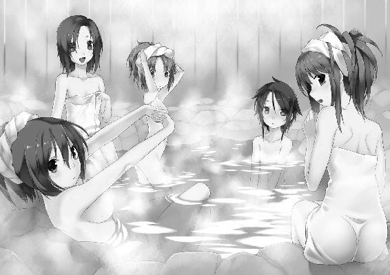

| 桜ノ杜ぶんこ たっち、しよっ！ Love Application 僕と運命の彼女たち | |
| 天草白 | |
| (2012) | |
桜ノ杜ぶんこ
たっち、しよっ！
｜Ｌｏｖｅ Ａｐｐｌｉｃａｔｉｏｎ｜
～僕と運命の彼女たち～
天草白
僕が通う碧明学園は生徒数が多くて、誰も彼もが顔見知りというわけじゃない。
だけど、そんな中に僕の『運命の人』がいる。
いや、ポエムでも妄想でもなくて。
それを知る手段を、僕は持っていた。
校門を通りすぎたところで、ちょうどその女の子を見つける。
「会長、おはようございます」
「あら、早いんですね」
振り返ったのは、栗色の長い髪を腰の辺りまで伸ばした女子生徒。髪の後ろで結んだ白いリボンがよく似合っている。
僕と同じ二階生の相葉皐月さんだ。
清楚な美貌と抜群のプロポーション。
みんなの憧れで、この碧明学園の生徒会長。
そして──僕の運命の人。
そんなことを考えただけで、どくんどくんと心臓の鼓動が速まり、息が詰まりそうになる。
「おはようございます」
間近で見ると、本当に可愛い。にっこりとほほ笑まれただけで、心拍数がさらに上がってしまう。
まずい。
アレの助けがないと、まともに話すことさえできそうにない。
僕は慌ててカバンの中から携帯電話を取り出した。
『ｙＰｈｏｎｅ』という文字が入った黒いスマートフォン。
──僕の手元にこのｙＰｈｏｎｅが届いたのは二か月くらい前。今年の七月のことだ。
差し出し人不明の小包に入っていたこれには、運命の人を探し出したり、人の心を読む機能が備わっていた。
いや、信じられない話だよね。
僕もうさんくさいな、って思ったんだ。
で、一緒に入っていた手紙によると、どうやら僕はテストユーザーに選ばれたらしい。
実際、起動したｙＰｈｏｎｅには四人の女の子の名前が表示された。
それが、僕の運命の人たち。
会長はその一人というわけだ。
......平凡な学生に過ぎない僕と、全校生徒の憧れの会長じゃ、不釣り合いもいいところだけどね。
「学園祭、おつかれさまでした」
「会長こそ。準備委員の中で一番がんばってたじゃないですか」
昨日までの三日間、この碧明学園では学園祭が行われていた。会長は学園祭準備委員会でも中心となって、それを取り仕切っていたのだった。
僕もその準備委員会の一員で、会長とはそれが縁で知り合った。
こういう共通の話題があると話しやすい。
「あれだけ忙しいと学園祭の出店を回れなかったんじゃないですか？」
「いえ、仕事の合間にいくつか回れましたから......。一階生の魔法喫茶とか、食品研究販売部の模擬店も」
食品研究販売部って──ああ、奈津のところか。
「お気遣いありがとうございます。優しいんですね」
上品に微笑む会長にドキンとした。
美人だし、スタイルもよくって、豊かなバストがときどき制服越しにぷるんと弾むのはほとんど凶器といってもいい。
こんなに可愛い女の子が僕の彼女だったらなぁ、って、この三か月間で何回妄想しただろうか。
僕と会長は、会えば多少は雑談できるくらいの仲だ。といっても、二人きりで学園祭を回るような関係じゃない。
......すごく、残念だけど。
「学園祭が盛況だったのも会長の力ですよ」
「いえ、私なんてそんな。準備委員会の皆さんが力を合わせたからですよ」
あいかわらず謙虚だ。
そういうところも生徒会長の器だと思う。同い年だけど尊敬してしまう。
「会長、本当にがんばってましたから。僕、ちゃんと見てましたよ」
「なんだか照れますね」
ほんのりと頬を染める会長。
うう、照れる姿も可愛いっ......！
会長は各出し物のトラブル解決から迷子の子の面倒まで見ていた。大活躍だ。
僕はそれを傍で見ているだけだったのが悔しい。
せっかくの学園祭だったのに──。
ふいに、ｙＰｈｏｎｅの画面が黄色に変わった。
『嬉しい。私ががんばったことを、ちゃんと認めてくれる人がいる......』
同時に、会長の内心の言葉が画面に映る。
Ｓａｔｏｒｉ。
ｙＰｈｏｎｅに備わっているこのアプリは人の心を読むという機能がある。今みたいに相手が思っていることが画面に表示されるのだ。
ただしＳａｔｏｒｉはバッテリーの消耗が異様に激しいため、調子に乗って使っているとｙＰｈｏｎｅ自体が電池切れを起こしたりもする。
といっても、チートな機能であることには変わりがない
僕もこの機能を知ったときは、これなら彼女なんて簡単にできる、なんて有頂天になったりもしたけれど──。
「......さんはどこを回ったんですか？」
「えっ？ あ......」
なんて考えごとをしていて、会長が話しかけてくれているのを聞き逃しそうになった。
「僕は三階生の教室で豆乳を買いましたよ」
「そ、そうにゅう......？」
ぴくり、と会長の片眉が上がった。
ん？
「いえ、豆乳ですけど。乳製品をいろいろと売ってたんです。その後、自家製ヨーグルトも買ったんですけど、こっちも美味しかったですよ。こう......ミルクの味がとろっとした感じで」
「とろっとしたミルク......そうにゅうの後で、ミルク......」
「あとホットプレートで焼き肉をやっている店もありましたね。そうそう、ハラミがすごく美味しくて」
「は、はらみ......そうにゅうで、ミルクで、はらみ......」
会長は何やらぶつぶつと言いながら、あらぬ方向に目線をさ迷わせている。なんか息遣いも荒いような......？
会長って、すごくしっかりした人なんだけど、たまにこうやってボーッとするときがあるんだよね。
ま、そこはご愛嬌ってやつかな。
「はあはあ......そうにゅう、みるく、はらみ......やだ、私ったら、何を......」
「あのー......会長？」
「──はっ!? わ、私ったら、すみません」
だから、なんで顔が真っ赤っ赤なんですか、会長？
「あ、えと、私、そろそろ花壇にお水をあげに行かないと......」
「引き留めてすみません。忙しいですもんね、会長」
「ええ。それでは、私はこれで」
会長は軽く会釈して、去っていった。
本当はもう少し話したかったけれど、しかたがない。
最後に急にボーっとしたり、顔を赤くしたのはなんだったんだろう？
もう一度Ｓａｔｏｒｉで見れば、理由が分かったかもしれない。
キチンと見ておけばよかったかな。
こういうときのためのｙＰｈｏｎｅだっていうのに、ついついタイミングを逃しちゃうんだよなぁ。
なかなか心の距離を近づけられないのがもどかしいよ。
ｙＰｈｏｎｅを使えば相手の心が読めるんだから、今まで彼女いない歴＝年齢だった僕でも、女の子と仲よくなるのは簡単だ──。
僕は最初、気楽に考えていた。
だけど、いくら相手の心を覗くことができても、実際に行動するのは僕自身。
もともと女の子と接するのが得意じゃない僕は、なかなか積極的になれなかった。運命の人候補の女の子たちとなかなか距離を縮められず、モタモタしているうちに早くも二ヶ月が経過。
気がつけば、学園祭も終わっていた。
「もうお昼だというのに何をボーッとしていますの、庶民？ あいかわらず緊張感の欠片もありませんわね」
目の前にいる金髪碧眼ツインテールのお嬢様──城之崎佳弥さんは、会長と同じく僕の運命の人候補の一人。
......のはずなんだけど、本当にそうなのかは疑わしい。何せ知り合ってからこっち、僕はほとんど怒られてばかりだし。
なんていうか......デレのないツンデレ？
僕より頭二つ分くらい小さい城之崎さんは、青い瞳で上目遣いに僕を見上げている。
昼休みになり、食堂に来たところで、僕は城之崎さんとばったり出くわしたのだ。そして開口一番、さっきの言葉を浴びせられたわけ。
城之崎さんは出会ったときから僕のことを『庶民』って呼んでるんだけど、今は城之崎さんも資産家令嬢じゃなくて一般庶民だよなぁ......なんて言えるはずもなく。
「こ、こんにちは、城之崎さん」
「仮にもワタクシのお友だちなのですから、もう少しシャキッとしていただかないと。一緒にいるワタクシまで恥をかいてしまいますわ」
ぽんぽんと速射砲のように鋭い舌鋒。城之崎さんは両手を腰に当て、不満げに口を尖らせている。
僕はタジタジだった。
「すみません」
「簡単に謝るのは卑屈ですわ」
「こういう性格なので」
「口答えは許しませんわよ」
では、一体どうしろと......？
「このワタクシの友としてふさわしい威風堂々たる男性になれ、ということですわ。そもそもワタクシを誰だと思っていますの？ 日本一のゲーム会社『ヘキサゴンニックス』の社長れいじょ──いえ、碧明学園三階生にしてテニス部の副部長、城之崎佳弥ですわよ」
言いかけて微妙に口ごもるあたり、城之崎さんにとってあの事件は心の中で整理しきれていないらしい。
「アナタはワタクシの言うことに絶対服従！ 返事はイエスのみですわ」
「えっと、とにかく、なんていうか......すみません」
「無意味に謝らないでくださいませ」
「結局、何を言っても怒られるんですね......」
どこまでも強気な城之崎さんに僕はジト汗状態だ。
「かやりん、あいかわらずキツいねー」
たたた、と走り寄って声をかけてきたのは、播村奈津だった。
僕の叔父さんがマスターをしている喫茶店『フェリーチェ』で働くバイト仲間で、僕と同じ二階生だ。
くりくりとよく動く目、ころころと変わる表情──とにかく、いつも周り中に元気を振りまいているような女の子。透きとおるような茶髪は肩のところまで伸びていて、軽やかに揺れている。
ちなみに、城之崎さんと違って、奈津は運命の人候補じゃない。
「気になる人にはついキツく当たっちゃう、ってことかな。小学生が好きな子にちょっかいかけるみたいな？ むふふ」
「な、何を仰っているのかしら」
「とぼけるねぇ。ナツにはぜーんぶお見通しなのだよ、明智君」
「誰が明智君ですか」
「そろそろデレ期に入ればいいのに」
「このワタクシが？ 庶民にデレる？ ふんっ、ありえませんわ」
奈津の冗談に対して、不快そうに鼻を鳴らす城之崎さん。
「にゃはは。ホント、かやりんってツンデレだねぇ」
「ですからっ、ワタクシがこの庶民に想いを抱くなど天地がひっくり返ってもありえませんわっっ」
「そういう態度がツンデレなのさ」
「あいかわらず人の話を聞きませんわね......」
言いながらも、城之崎さんの表情は僕と話すときよりも和らいでいる。
でも、よかった。城之崎さんがまた元気になって。
──城之崎さんのお父さんが社長を務めるゲーム会社ヘキサゴンニックスが倒産したのは、ついこの間のこと。
城之崎さんにとってもそれはかなりのショックな出来事で、一時は学校を辞めるんじゃないか、っていうくらいに落ちこんでいた。
それを慰め、いろいろとフォローしたのが僕と奈津の二人。
そのためか、特に奈津とは最近かなり親しくしているみたいだ。
城之崎さんはお嬢様だけあって、ヘキサゴンニックスが倒産するまでは、取り巻きが大勢いた。けれど、その取り巻きも会社の倒産とともに、みんな城之崎さんを避けるようになってしまった。
もしかしたら──城之崎さんが今、心を許せる友だちは奈津くらいしかいないのかもしれない。
「アナタ、何をじろじろと見ていますの？」
城之崎さんがキッと目を釣り上げた。
「あ、いえ、なんでもないです」
「ワタクシの気品あふれる美貌に見とれるのは無理もありませんけれど、女性に対しての無遠慮な視線は失礼に当たりますわよ」
「すみません......」
城之崎さんと接していると、ホント謝ってばっかりだな、僕。
ふとｙＰｈｏｎｅに視線を落とす。画面が怒りを表す紫から照れや羞恥を現す赤へと変わっていた。
同時に、文字となって浮かび上がる城之崎さんの内心。
『会社が倒産した後も、アタシと今までどおりに話してくれるのは奈津とこの庶民くらいね。二人ともアタシの大切な......』
え、城之崎さん？
これってどういう意味──。
「だ、だから、じろじろ見ないで、と申し上げているのですっ」
綺麗なブルーの瞳でにらまれた。
「す、すみません」
「まったく......ワタクシはもう行きますわ。ごきげんよう、奈津」
背中を向け、さっそうと去っていく城之崎さん。
僕は無視ですか。
と、思ったら、くるりと振り向いた。
「......ふん」
わざわざ見せつけるように鼻を鳴らし、もう一度背を向けて去っていく。
まだまだ心を開いてもらうには、ほど遠いのかなぁ。
でも、最後に聞けた本音は──。
城之崎さんは僕のこと、あの態度ほどは嫌ってないのかもしれない。
「ん？ ん？ かやりんの後ろ姿をじーっと見ちゃって。それは、恋する男の子の瞳だね」
「え、ち、違うよっ」
思わず声が上ずってしまった。
「命短し恋せよ青年！ ボーイズビーアンビシャス！ アンド、ボーイミーツガール！」
「いや、ちょっと何言ってるか分かんないよ」
「このラブハンターナツさんが恋の指南をしてあげてもいいんだよ。むっふっふ」
「テンション高いなぁ......」
「恋することはいいことだよ、うん。アンタもどんどん恋すればいいのさっ」
「じゃあ奈津も恋とかしてるわけ？」
「..............................」
ん？
てっきり、「にゃははー、もちろんナツさんだって恋の一つや二つ！」とか、いつもみたいに笑って答えると思ったのに。
奈津はなぜか僕のほうをチラッと見てから、
「にゃははー！ まあ、その、もちろん、ナツさんだって恋の一つや二つ！」
ワンテンポ遅れて、いつものように笑ってみせた。
奈津もたまにボーッとしてるときがあるよね......。
放課後になり、僕は中庭に続く道を歩いていた。
ここは校舎から少し離れているうえに、学園の中で端っこのほうにあるせいで、普段からほとんど人気がない。
だけど、『彼女』はここにいるはずだった。
緑の木々に囲まれた中庭を進む。
──いた。
いつものように、彼女......東雲真憂さんはベンチに座って本を読んでいた。
東雲さんはｙＰｈｏｎｅが示した運命の人候補の一人だ。
僕より一つ年下の一階生。整ってはいるけれど無表情な顔立ち。黒髪ショートヘアにヘッドホン。
会長や城之崎さん、奈津とはまた違ったタイプの美少女だった。
「こんにちは、東雲さ──」
ぴんっ。
近づこうとした瞬間、足元にロープのようなものが引っかかった。
いや、違う。
これは──!?
僕はとっさにその場からバックステップ。
ほぼ同時に、がさがさがさっ、と茂みが揺れて、足元のロープがものすごい勢いで跳ね上がった。
逆さ吊りのトラップだ。
「あ、危なかった......！」
「今のを回避しましたか。少しは成長したみたいですね」
東雲さんが感情のこもらない、冷徹とさえいえる声で告げた。本を読んだまま、視線を向けようともしない。
「前に一度引っかかったことがあるからね。そう何回も──」
「甘いです、先輩」
えっ？
不審に思った瞬間、頭上から迫る気配。
「うわっ!?」
同時に、背後から鈍い衝撃が走り、うつ伏せに倒れてしまう。
「な、なんだよ、これ......」
巨大なネットが僕の全身を絡め取っていた。重いロープで編まれたネットが手足の自由を奪っている。
「二段構えです。逆さ吊りが避けられたときに備えて、着地点にネットトラップを仕掛けておきました」
東雲さんは日ごろから『中庭は自分の縄張りだ』と主張していて、時々こういうトラップを仕掛けている。
僕も、一度ならず引っかかったことがあった。
東雲さんとは出会ったときから、ずっとこうだ。みんなでワイワイ騒ぐより、一人のほうが好き......というタイプらしく、僕もまともに口さえ利いてもらえないことのほうが多いくらい。
だけど──。
いつも他人を遠ざけて寂しくないのかな、東雲さん。僕でよければ話し相手になりたいんだけど。
「これに懲りて、もう近づかないでください。中庭はまゆの領域です......」
東雲さんはそこで初めて本から顔を上げて、僕のほうを見た。
あいかわらず、他人を寄せつけない雰囲気。
「せ、せっかくだから少し東雲さんと話していきたいな」
「............」
あ、無視ですか。
いや、メゲるな僕。何か会話のとっかかりをつかまなきゃ。
悪戦苦闘してネットから抜け出ると、僕はベンチに歩み寄った。
「えっと、なんの本を読んでるの？」
「秘密です。禁則事項です」
ホント、頑なだ。
「同志にしか内容を教えられません」
「そう言われると、よけいに気になるかな、なんて──」
言いかけたとたん、東雲さんのスカートが、ふわり、と翻った。
一瞬。
ほんの一瞬だけど、ほっそりとした太ももがあらわになる。
さらにその付け根には、目の覚めるような真っ白のぱんつが──。
じゃきっ。
呆然と見とれていた僕の鼻先に、鈍く光る銃口が突きつけられた。
手のひらにすっぽりと収まりそうなほど小さな銃。
「うっ」
エアガンだと分かっていても、東雲さんの無言のプレッシャーもあって、ついビビってしまう。
「と、とりあえず、そのベレッタはしまおうよ」
「これはレミントンダブルデリンジャーです」
へえ、そうなんだ。銃の名前といえば、ベレッタくらいしか知らない。
「不勉強ですね。ベレッタとデリンジャーは全然違います。まゆは、普段は携行に便利なベレッタＭ１９３４を愛用していますが、この至近距離ならより取り回しに優れたデリンジャーを選択すべきです」
「は、はあ......」
東雲さんが何を言っているのか、僕にはほとんど分からなかった。ミリタリー趣味ってやつだろうか。
僕はミリタリーには詳しくない。子どものころにエアガンで遊んだり、戦車のプラモデルを作ったことはあるけれど。
東雲さんはデリンジャーの銃口を僕に突きつけたまま、
「立ち去らない場合は実力で排除します」
「お、落ち着こうよ、東雲さん」
「まゆは冷静です」
「いやいや、目が据わってるよ!?」
「戦場では常に冷静沈着であるべき。確実にターゲットを仕留めるために......」
東雲さんが、引き金にかけた指を少しずつ引いていく。
まずい、本気だ！
「わかった！ わかったから！」
僕は諦めて後ずさった。
これじゃ仲よくなるどころじゃない。
いくらｙＰｈｏｎｅがあったって、そもそも距離を縮めるとっかかりさえ作れないんじゃどうしようもなかった。
「邪魔してごめんね、東雲さん」
「......先輩はどうして、まゆのところに来たんですか」
「えっ」
「こうなるのが分かっていて、どうして来たのかと聞いています」
「いや、それは......ほら、東雲さんと話したかったっていうか」
「............」
スッと目を細める東雲さん。
『まゆと話したい、なんて、変わった人......。でも、まゆのことどう思ってるのかな......。どうして話したいなんて......？』
ｙＰｈｏｎｅの画面にそんな文字が浮かんだのが見えたけれど、これ以上話すと険悪な空気になりそうな気がした。
「じ、じゃあね、東雲さんっ......！」
銃口から逃げるようにして、僕は中庭を立ち去ったのだった。
ふう、ひどい目に合った。
中庭から逃げ出した僕はこのまま帰宅することにした。その帰り道、公園を通りかかったところで、
「いっちにー、さんしー。ごーろく、しちはち......」
元気のいい掛け声が聞こえてきた。
「この声って......」
目を向けると、そこには一人で準備体操をしている女の子の姿。
体を動かすたびにポニーテールにした髪の毛が、ぴょこん、ぴょこん、とリズミカルに跳ねる。
「やっぱり滝川だ。トレーニング中？」
「うん、今日は水泳部の練習がオフなんだけど、ちょっと自主練」
にこっと笑って振り向いたポニーテールの女の子は、滝川葵。明るく活発そうな美人で、すらっと背が高くてスタイルも抜群だ。
滝川は僕と同じ二階生で、水泳部に所属している。
そして──運命の人候補の最後の一人だった。
「秋の地区予選も近いし、がんばらないとね」
「ホント滝川は偉いな。よかったら手伝おうか」
「え、いいの？」
「ちょうど暇だったし」
「......いつもアリガトね。この間の大会で優勝できたのも、アンタがサポートしてくれたからだと思う」
にっこりと笑った滝川に、僕はドキンとなった。
「何かあったら相談してよね。今度はアタシがアンタの役に立つ番だから」
「うん、そのときは頼りにさせてもらうよ」
「あはは、こんなふうにあらたまってお礼を言うと、なんか照れるね」
恥ずかしそうに俯く滝川。
ふだんの滝川はすごくボーイッシュで、いかにも女の子っていう感じの会長とは対極のイメージだ。
でも──いや、だからこそ、たまにこういう恥じらいっぽい顔をするとすごく可愛いな、って思う。
「じゃあ始めようか。最初は前屈からでいい？」
ドギマギした気持ちを押し殺し、僕は滝川にそう促した。
いつもどおり二人一緒に準備運動だ。
僕が前に座り、滝川が後ろから背中を押す。トレーニングで怪我をしないよう入念にストレッチをする。
──のはいいんだけど、
「いちにーさんしー」
「うっ」
「ごーろくしちはち」
「ううっ」
「にーにーさん......ん、どうしたの？」
「うぐぐ......い、いや、その、当たって......」
さっきから柔らかい弾力が僕の背中に思いっきり当たっているのだ。
友だちとはいえ、やっぱりそういう感触は「女の子」のそれなわけで。しかも滝川って、やたらとスタイルいいからなぁ......。
「でも気持ちいいし、別に気にしないで」
「えっ、気持ちいい？」
「はっ!? ち、違うよ、僕はその、やましいことを考えてるわけじゃ、いや、ちょっとは考えてるけど、あのそのなんでもないですごめんなさいすみません」
言えば言うほど泥沼だ。
「ヘンなの」
滝川はそんな僕のドギマギに気づいていないらしく、あっけらかんと笑って準備運動を続ける。
「う、うわっ」
また、胸が当たって......ふわぁ、蕩けそうだよう......って、違う！
「もう、さっきから様子がヘンだよ」
「なんでもないっ......なんでもないからっ」
答えつつも、僕の声には焦りの色がにじみまくっていた。
「じゃあ次は膝の屈伸だね」
滝川が僕の前に回りこみ、向かい合わせになった。
「いちにーさんしー......」
膝の屈伸をするたびに、タンクトップに包まれたたわわな胸元が、ぷる、ぷる、って勢いよく弾んで、思わず目を奪われる。
会長も巨乳だけど、滝川もけっこう大きいな。
しかも、すごい揺れたよ、今......ごくり。
スラリとした体つきに出るところはきっちりと出たグラマー体型は、薄いタンクトップとショートパンツ、スパッツという格好を通してはっきりと確認できた。
お、落ち着け、僕。落ち着けったら、落ち着け。これくらいのこと、滝川とは夏の間に何回もやって来たじゃないか。
自分自身に言い聞かせながらも、心臓の鼓動は大きくなる一方だった。
「じゃあ、次は体側しよっか」
「え、えっと......」
「さっきから挙動不審だよ？」
「だって、そんなにぷるぷる揺らされると気になるっていうか、落ち着かないっていうか......」
い、言えない。滝川の胸元が気になるなんて。
「あー、もう！ ぐだぐだ言ってないで、ほら、続きやるよ！」
滝川がじれったそうに叫んだ。
強引に引っ張られた僕は、バランスを崩して滝川のほうへ倒れこむ──。
「きゃっ!? ち、ちょっと......!?」
「うわわっ......！」
どさりっ。
そのまま、僕が滝川を押し倒すような格好になってしまった。
むぎゅっ、むぎゅっ。むにっ、むにぃぃっ。
あれ、右手に何か柔らかいものが当たってるよ？
柔らかいだけじゃなく、弾力があって、モチモチとして。
その触感はまさしく極上──。
神様、ありがとうございます！
「ち、ちょっと、ダメ......」
あふぅ、とやけにエロいため息をつく滝川にハッとなり、僕は自分の手元に視線を向けた。
タンクトップの胸元を思いっきり鷲づかみにしている、僕の右手。
「................................................」
流れる、気まずい沈黙。
「う、うわわわわっ、ごめん！ えっと、わ、わざとじゃないよ、ホントだよ!?」
僕は大慌てで滝川から飛びのいた。
頭の中は完全にパニック状態。
だけど右手に残った滝川のバストの感触を、何度も反すうしているのは悲しい男の子のサガだった......。
「はぁ、ただいまー......って、誰もいないんだけどね」
両親が仕事の都合でアメリカにいるため、僕は一人暮らしだ。部屋に入ったとたん、ドッと疲れが押し寄せてきた。
今日は運命の人候補四人全員（ついでに奈津）と会って話すことができた。
といっても、あれだけ可愛い女の子ぞろいだと、やっぱり緊張感もすごい。リア充とはほど遠い僕に、上手く会話できるはずもなかった。
もしもｙＰｈｏｎｅのサポートがなかったら、まともに会話するのもおぼつかないだろう。
いや、これを使ってもいっぱいいっぱいだけどね。
僕はｙＰｈｏｎｅを取り出し、充電器に差しこんだ。
画面の下に表示されているバッテリーのインジケータは残り一目盛だ。
Ｓａｔｏｒｉを使うと、バッテリーの消耗が異様に早くなるのがｙＰｈｏｎｅの欠点だなぁ。
──いや、そういう問題じゃないか。
結局、ｙＰｈｏｎｅなんていうチートアイテムを手にしても、僕の生活は何も変わらなかった。
可愛い女の子なんて、しょせん僕には無縁なんだ。
「あーあ、つまんないな」
ふてくされて、ベッドの上に大の字になる。
ふと壁に掛けてあるカレンダーを見ると、九月十四日から十六日までに赤く丸をつけてあるのが目に入った。
そう、学園祭が行われた三日間。
碧明学園では学園祭を一般公開している日もあるため、どこもかしこもカップルだらけで、独り身の僕には耐えられない状況だった。
僕も女の子と一緒に学園祭を楽しみたかったよ。
──恋することはいいことだよ、うん。アンタもどんどん恋すればいいのさっ。
ふいに奈津の言葉を思いだす。
「どんどん恋すれば、か」
僕にもできるんだろうか。
城之崎さんはあいかわらずキツいし。東雲さんは冷たいし。滝川の前では失態を演じちゃったし。
そうそう、会長は今日も可愛かったなぁ。
あんな可愛い女の子がカノジョだったら、最高の学園生活を送れるに違いない。
だけど──。
こうして一人で思っているだけじゃ何も変わらない。
何も、変えられない。
自分から動かなければ、何も得られない。
そんな当たり前のことから、僕はずっと逃げていたのかもしれない。
僕は、充電器につないだ黒いスマートフォンを見つめた。
いい加減に、逃げるのはやめよう。
消極的だった日々から踏み出したい。
きっと、一歩ずつでいいんだ。
踏み出せるはず。
今の僕には、そのための力があるんだから──。
僕は上体を起こしてベッドから降りた。
「......学園祭は駄目だったけど」
壁に掛けてあるカレンダーを一枚一枚めくる。
十月、十一月、そして十二月。
そこには、恋人同士の最大のイベントが待ち構えている。
「たしかに、今までが消極的すぎたよね」
運命の人と一緒に学園祭を回ることはできなかったけれど。
明日からは、心機一転してがんばろう。
カレンダーの十二月二十五日をジッと見据える。
そう、クリスマスには。
今度こそ、運命の人と過ごすんだ──。
それは──僕が放課後、とある本屋に立ち寄ったときの出来事だった。
「あれって......もしかして、会長？」
店に入ったところで、レジの近くに見覚えのある女の子を見つけたのだ。
背中を丸めた上に野球帽を目深にかぶっているけど、あの長くて綺麗な髪とか、スラリとしていながら出るところは出ている抜群のスタイルとか、どう見ても会長だった。
だけど──。
随分とコソコソしているのは、どうしてなんだろう？
さっきから辺りを何回も見回したり、やましいことでもあるみたいに極端に背中を丸めていたり......。
しかも両手にいっぱいの、大量の本を買いこんでるみたいだ。
「会長、こんにちは」
会長が会計を済ませたところに近づき、声をかけた。
「ひゃうんっ!?」
いきなり悲鳴を上げられた。
ぎぎぎぃ、とぎこちなく振り返った会長が、僕を見つめる。
ぱちくり。ぱちくり。ぱちくり。
目を瞬かせること三度。
「会長？」
「ど、どどどどどどどどどどうしてアナタがここにいるんですかっ!?」
会長がなぜか真っ青な顔になって叫んだ。
「あぅぅぅ......こ、こここなら誰にも見つからないとおも、思っていたのにににに......」
会長、ろれつが回ってませんよ。
どうしてこんなに焦ってるんだろう、会長。
「いやー、実は『板垣ストレート』っていうゲームの攻略本を探してるんですけど、ちょっと古いゲームでなかなか見つからなくって本屋をハシゴしているところなんです」
ちなみに板垣ストレートというのは、プレイヤーキャラクターである『板垣くん』を操り、物件や株を買いながら資産を増やしていく......という、まあ一言で説明するとモノポリーみたいなゲーム。
発売元は、この間倒産したヘキサゴンニックスだ。五年以上前に発売された、けっこう古いゲームだった。
それだけに攻略本がどこにも売ってない。ネット通販でも品切れ。
方々を探し回ったあげく、とうとう夏恋町の外れにあるこの本屋まで探しにくる羽目になったわけ。
「そ、そう......ですか」
「会長こそ、随分とたくさんの本を買っ」
「み、みみみみみ見ちゃ、ダメですっっっ......！」
会長の手元にある本に目を向けようとしたところで、会長はサッと背後に隠してしまった。
「へっ？」
「だから、えっと、こ、これは、そのっ......あぅぅ」
そんな態度を取られると、ますます気になるなぁ。こういうときは、やっぱりアレの出番だよね。
僕はポケットから黒いスマートフォンを取り出した。
赤い六角形の中に緑色の目が描かれたデザインのアイコンをクリックし、心を読むことができるアプリ──Ｓａｔｏｒｉを起動させる。
『見られてしまう......興味があって、一冊だけこういう本を買ってしまって......ああ、ダメ......知られたくないです......！』
ｙＰｈｏｎｅの画面は照れや恥じらいを表す赤に染まっていた。
こういう本？ どんな本だろう？
『生徒会長としてのイメージが......！ ダメ......崩れちゃう......！ みんなに、信頼されなく......ダメ、絶対ダメ。見ちゃダメぇぇぇぇぇぇぇぇぇぇっ!!』
よほど混乱しているのか、Ｓａｔｏｒｉに表示される内心の言葉も断片的で、具体的な内容を欠いていた。
えーい、気になる。
僕は一歩会長に近づいた。
「だ、ダメぇ......あっ！」
会長がそれに合わせて一歩後ずさった、そのとき──。
どさどさどさっ！
盛大な音を立てて、何冊もの本が床に落下する。
床に散乱しているのは、小説の文庫本と後は......料理の本が一冊混じってるな。
「なんだ、隠すような本じゃないじゃないですか」
「え、ええ、まあ......」
なぜか顔を引きつらせている会長。
料理の本は表紙に『七色のバリエーション！ ソーセージ料理特集』と書いてある。
「七色のバリエーション......ソーセージって、そんなにいろんな料理の仕方があるんですね」
「ソーセージ......料理の、仕方......わ、私、そんなのしたことないですし......」
「えっ？」
「や、やっぱり手とか......口で、とか......？」
会長は口元を緩め、ほわんとした顔で視線をあらぬ方向にさ迷わせている。
一体なんの話をしてるんだろ。
料理の本以外は、ほとんどが文庫本だった。どうやら、全部恋愛小説みたいだ。
「む、胸でするやり方も、あるとか......やだ、恥ずかしい......」
「あの、会長......？」
「はっ！」
もう一度呼びかけて、ようやく会長は視線を僕に戻してくれた。
「す、すみません、なんの話でしたか？」
「会長って恋愛小説をよく読むんですか？」
「え、ええ。私、このジャンルが好きなので......」
僕は散乱している小説を手に取った。
「『大尉はお疲れ ～恋も色々～』......へえ、第二次世界大戦時の恋愛ものですか」
「つ、突かれる......体位......い、色々......はふぅ」
会長は熱っぽい吐息混じりにつぶやいた。
「『Ｈｅｙ！ ｙｅａｈ！ Ｙｏｕへの想いはＭｅの胸の中に収まりきらないほどＢｉｇだＺｅ！』......面白いタイトルですね」
「大きすぎて......な、中に収まりきらない......？ そんなに大きいなんて......いやぁ」
「『恋心は熱くあふれ、愛はどこまでも毒々しく』......なんかドロドロとした昼ドラっぽい雰囲気ですね、この小説」
「ドクドクして......あふれる......熱いの、ドロドロしてる......」
「か、会長？」
会長の様子がまたヘンになってる。蕩けた表情で目をトロンとさせ、視線をあらぬ方向に漂わせていた。
「あぅぅ......ふあぁ......」
「もどってきてくださーい」
「はっ!? 私ったらまた......！」
さっきからどうしたんだろう。
会長ってこんなキャラだったっけ？
「ん、もう一冊あるな──って......えっ？ えええええっ!?」
僕は思わず素っ頓狂な声を上げてしまった。
何冊もの恋愛小説の中に『お姉さんがオトコにしてあ・げ・る』といういかにもな帯のついた文庫本が一冊混じっていることに気づいたのだ。
「これって......」
どう考えても、その手の本だよね？
大人向けのエッチな小説──。
でも、あの真面目でいかにも清純そうな会長がまさかこういう本を買っているなんて。
「あ、ダメ、それはっ......！」
会長が顔をこわばらせて叫んだ。
『こんな本を読んでいるなんて、生徒会長にふさわしくありません......』
『お父さんやお母さんの期待に応えるために、ずっと頑張ってきたのに......』
『私がエッチな女の子だって知られてしまいました......』
『どうしよう、もうお嫁に行けません......』
ｙＰｈｏｎｅの画面に、会長の心の声が次々と浮かび上がる。
いや、お嫁に行けないっていうのはいくらなんでも大げさなんじゃ......などと内心でツッコミ入れるものの、会長はつぶらな瞳に涙をいっぱい溜めている。今にも泣きだす寸前といった感じ。
これは、本格的にまずい。
しかも間の悪いことに、自動ドアが開いて新たな客が入ってきた。
「わわっ、と、とりあえず、えっと、場所を、そのっ、変えましょう！」
僕は床に落ちた本を急いで拾い集めると、会長の手を引いて店を走り出たのだった。
パニック状態の会長を半ば強引に引っ張り、僕らは近くの公園にやって来た。
「落ち着きましょう、会長。まずは深呼吸ですよ、深呼吸」
「............」
「ほら、すーはーすーはー」
「..................」
僕は深呼吸を実演してみせたけど、会長は無反応だった。
「ううっ、ぐすっ......」
それどころか、すすり泣きまで漏らし始めた！
たくさんの本や雑誌を抱えた両手が、いや、全身が小刻みに震え続けている。
うわ、空気重すぎっ！ 気まずすぎ！
ど、どうしよう──。
僕は一体どうすればいい!?
今まで女の子に縁がなかった僕は、もちろんこんな修羅場初めてだ。
ホント、どうしよう......。
困り果て、藁にもすがる思いでｙＰｈｏｎｅを見つめる。
画面には、恥じらいの赤や悲しみの青、動揺の灰色、そして信頼の白......と、会長の感情を表す色が目まぐるしく変わっていく。
『とうとう見られてしまいました。ずっと秘密にしていたのに......』
『こんなこと、誰にも言えません。でも秘密をずっと抱えこむのも苦しいし......』
Ｓａｔｏｒｉの反応から考えると、会長は二つの気持ちの板挟みになっているらしい。
激しい葛藤状態だ。
打ち明けてしまいたいという気持ちと、誰にも知られたくないという気持ちと。
だけど──そういうのって溜めこむより、思いきって誰かに話してしまったほうがスッキリするんじゃないかな。
「大丈夫ですよ。僕、口は堅いほうですし誰にも言いませんから」
「えっ......」
「もしよかったら......会長さえよければ、話してもらえませんか？ もちろん全部じゃなくて話せる部分だけでかまいませんから」
『打ち明けても......いいんでしょうか』
『打ち明けてみたい......誰かに思いっきり......』
『でも、本当のことを話して軽蔑されたら、私、立ち直れない......』
会長の不安な内心をＳａｔｏｒｉで読み取りながら、僕はさらに続ける。
「大丈夫、どんな事情があっても会長は会長ですから。それに、一人で抱えこむより誰かに話したほうが気持ちも楽になるかもしれませんよ」
「ほ、本当に......」
「僕でよければ話を聞きます。大丈夫、誰にも言いません。約束します」
ジッと会長の目を覗きこんだ。
潤んだ瞳が小さく揺れて、そしてその揺れが、やがて収まっていく。
『この人なら、大丈夫そうな気がします......』
『思いきって話してみても......いいかもしれません』
会長はふうっと大きなため息をついた。
「絶対、誰にも内緒ですからね」
僕に顔を近づけ、声をひそめる。
ふわり、と鼻先に漂う花のような香り──会長の髪の毛から漂ってくるシャンプーの匂いだ。
「や、約束します」
僕はドギマギしながら力強くうなずく。
会長はもう一度息を吐きだすと、重い口を開いた。
「私、昔からストレスに弱くて。嫌なことがあると熱を出して寝こんだりしてたんです。それで、ちょっとだけ......え、エッチなことを妄想したり、エッチなことをすると気分転換になってストレス解消できるんです。あ、本当にちょっとだけですよ？」
それで官能小説なんて買っていたのか。
でも、エッチなことって......一体どんなことをしているんだろう？
「今まで誰にも言ったことなかったのに......とうとう、アナタに見つかってしまいました。生徒会長になってから負担が増えて、前よりも頻繁にこういうことをするようになって。それで今日も......」
ハアハアと息を乱し、頬を赤らめる会長はゾクッとするほど色っぽい。潤んだ瞳を見つめていると、なんだか吸いこまれてしまいそう。
「あの、本当に誰にも言わないでくださいね......」
「も、もちろんですよ。僕、絶対秘密にしますから！」
『こんなことが広まったら......私、もう学校に行けない』
ｙＰｈｏｎｅの画面に映る、会長の不安な内心。
最後まで会長の表情は暗いままだった──。
翌日の放課後、下駄箱のところで会長とばったり出くわした。
「「あ......」」
お互いに、硬直。
うわー......この空気、気まずい。
「こ、こんにちは、会長」
「こ、こん......にちは......」
昨日別れたときと同じく、会長の表情は暗いままだ。やっぱり、昨日のことを気にしてるんだな。
会長がこっそり買っていたエッチな小説......。
きっと女の子にとって、同級生の男には絶対に見られたくない場面のはず。
偶然とはいえ、それを目撃してしまったことに対して、僕は罪悪感みたいな気持ちを抱いていた。
だけど──だからこそ。
なんとか会長の気持ちを軽くしてあげたい。
「大丈夫ですよ。あのことは誰にも言ってませんから」
僕は表情を引き締めて、そう言った。
「会長を裏切るような真似はしません」
「い、いえ、信用していないわけじゃないんです。ただ、今まで誰にも言ったことがなかったので不安になってしまって」
まあ、見るからに品行方正で、一階生のときからずっと生徒会長を務めている相葉皐月さんが、ストレス解消のためにひそかにエッチな本を読んだりしている──なんて知られたら、学園全体に衝撃が走るだろう。
って、それはさすがに大げさかな。
でも驚く生徒は多いと思うし、何よりも会長にとっても知られたくない事実のはず。
誰にも知られてはいけない秘密。
僕がこの学園でただ一人、会長とその秘密を共有しているんだと思うと、不思議な優越感を覚えたりするのも事実だった。
「やっぱり、ヘン......ですよね？」
「えっ」
「さっきからニヤニヤ笑ってますし」
「あっ、いえ、違うんです。そうじゃなくって──」
「私のこと、エッチな女だって軽蔑してますよね。この淫乱とか変態とか牝犬とか、心の中で蔑んでるんですよね......」
会長の表情はこわばっていた。
ま、まずい激しく誤解されてしまったかも......。
「えっと、と、ところで、会長はもう帰るんですか？」
僕は慌てて話題を変える。
あわよくば一緒に下校したい、なんて思いを込めて。
「私は......この後、ちょっと用事が」
「用事？」
「い、いえ、なんでもないんですっ。大した用事じゃないですからっ。ひ、一人でできますから......あぅぅ......」
会長が急に慌てだした。
なぜか頬をほんのりピンク色に染めている。
「？」
「とにかく、私はこれで──あの、本当に内緒にしてくださいね。それでは！」
逃げるように去っていく会長。
うーん、昨日のことで会長と秘密を共有できた、なんて思っていたけど、むしろ警戒されてしまったような──。
そんなふうに思いながら、校舎に戻っていく会長の後ろ姿を見つめる僕。
さて、今日は帰って何をしよう。
やっぱり『板垣ストレート』かな。昨日、会長と話した後、本屋に戻ったらちょうど攻略本が置いてあったんだよね。
昨日に引き続き攻略を進めよう──。
なんて考えていると、
「最近、いいタイム出てるみたいじゃない」
「あはは。うん、調子いいのが自分でも分かるよ」
滝川と女子生徒が何やら話しながら歩いているのが見えた。どうやら、同じ水泳部の部員みたいだ。
「ちょっと前まではこのまま辞めちゃうんじゃないかと思ったけど、よかった。戻ってきてくれて」
「ありがと。地区予選が近いから、これ以上練習を休んでられないしね」
「私も葵に負けないようにがんばろっかな。じゃあ、またね」
「またね、ばいばーい」
部活の人間関係も上手くいってるみたいだな、滝川。なんだか自分のことみたいにうれしい。
「あ、おーい」
滝川が僕に向かって手を振った。
そのまま僕の元に駆け寄ってくる。
軽やかに揺れるポニーテール。
制服の上から、ぷるんぷるん、って弾む豊かなバスト。
あいかわらず、すばらしいバスト──って、違う！ どこ見てるんだ、僕！
と言いつつも、やっぱり僕の視線は滝川の胸元に惹きつけられちゃう。会長ほどじゃないけど、滝川も十分巨乳だよね。
「ん、どうかした？」
気がつくと、滝川が訝しそうに僕を見ていた。
「いや、滝川のおっぱい......」
「えっ？」
まずい、内心が口に出ちゃった！
「ち、違うんだ、えっと、おっぱ......」
「おっぱ？」
「お、お、おっぱようございます、滝川」
無理やり言い切った。
「もう放課後だよ？」
「じ、授業中ずっと寝てたんだよ」
「あはは、実はアタシも。午後の授業ってなんであんなに眠いんだろうね」
「いやー、あははは」
乾いた笑い声で同調する僕。
ふう、なんとか誤魔化せたか。
滝川のバストに見とれてた、なんて本当のことを言えるわけもないしね。
「あ、えーっと......そ、そうだ、今のって水泳部の人？ な、仲いいんだね」
「うん。前はみんなが壊れ物を扱うみたいな感じで、アタシに接してたんだけどね。最近は普通に友だちとして接してくれるよ」
楽しそうに笑う滝川。
「今は次の大会を目指してトレーニング中。タイムも伸びてきてるし、調子いいよ」
「そっか」
「今日は久しぶりに練習が休みなんだ。アタシとしてはもっと練習したいけど、勝手にプールを使うわけにもいかないしね。後で公園に寄ってトレーニングしようかなって」
口調にも表情にもやる気がみなぎっている。
うん、本当によかった。
「これもみんなアンタのおかげだね。ありがとう」
──出会ったころの滝川は水泳から遠ざかっていた。
以前の大会でゴール直前に溺れてしまい、それ以来泳ぐことがトラウマになってしまったらしい。
プールで練習ができない代わりに、滝川は公園などでトレーニングを続けていた。
僕が滝川に出会ったのは、そんなときだ。
練習を手伝い、その合間に少しずつ泳ぐことに慣れるよう、一緒にプールに行ったりして。
地道に続けているうちに、滝川のトラウマは徐々に薄まっていった。
二か月くらいかかったけど、今では前と同じように泳ぐこともできるようになった。この間なんて、夏の大会に出場して見事に優勝を飾ったくらいだ。
「滝川ががんばったからだよ。僕はほんのちょっと手伝っただけ」
滝川は僕に感謝してくれているみたいだけど、やっぱりこれは滝川自身ががんばったからだと思う。
僕は本当に、少し背中を後押ししただけだ。
「アンタがいなかったら、アタシは今も泳げなかったままだね、きっと」
「持ち上げすぎだってば」
「あ、そうだ。あの......さ」
急に滝川がモジモジとした。
恥ずかしそうに両手のひとさし指を擦り合わせている。いつも溌剌としてハキハキしている滝川が、こんな態度をとるのは珍しい。
「アンタのおかげでこうして水泳部でやっていけるようになったし」
「だから、僕は何もしてないってば」
いい加減に照れてきた。
「そんなことないよ！」
「えっ!?」
滝川がいきなり大きな声を出したので、ビクッとなる。周りの生徒も何事かと僕らを見ていた。
「あ......」
滝川も口元に手を当て、声を潜めた。
「そんなこと、ないよ」
もう一度小さな声で、でも力を込めてそう告げる。
「アタシ、本当に感謝してる。だから、その、アンタにお礼がしたいんだ」
「お礼？」
「なんでも言って。アタシにできることなら、なんでもするから」
「なんでもって言われても......」
うーん、急に言われても困る。
戸惑いつつ、滝川に目をやった。
「スイーツでもおごろっか？ この近くの店に美味しいチョコバナナを売ってるって、水泳部の子から聞いたよ」
バナナ......滝川が......。
太くて長いものを、可愛らしい口で咥えて......。
ふと、滝川がチョコバナナを食べている光景が目に浮かんだ。
──チョコでコーティングされた、黒く長いバナナを、かぷっ、って口に咥えてほほ笑む滝川。
ちゅぱ、ちゅぱ、れろぉ......。
ピンク色をした舌がくねりながら、カーブに沿って舐めていく様子が、なんとも艶めかしい。
「ちゅ、れろぉ......ん、おいし」
嬉しそうに顔を上気させて、時折「はふぅ」と物憂げな吐息をつく。
かと思えば、ぱくっと先端を口の中に咥え、頬をすぼめてちゅるちゅると吸いたてる。
ほんのりとピンクに染まった頬。
じゅぷ、じゅぷ、と湿った唾液の音が鳴る。
舌を躍らせては反り返った表面を舐め取る舌遣いが、なんとなく別のことを連想させて、いやらしい──。
「ん、どうしたの？」
「あ、いやいやいや、僕はやましいことは何も考えてないよっ、ホントだよっ」
妄想から覚めた僕は、思わず声を上ずらせた。
顔中の温度がグングン上昇する。
いかんいかん。
邪な妄想を追い払わなければ！
「？」
「あ、そうだ。えっと......こういうのはどうかな？」
「ん、なになに？」
滝川に顔を寄せて、今思いついたことを耳打ちする。
「え、そんなことでいいの？」
目をぱちくりとさせる滝川。
「だ、ダメかな」
「アンタがそれでいいなら、アタシは全然オッケーだよ♪」
滝川がにっこりと笑う。
「じゃあ場所を変えよっか。今の時間ならどこか適当な教室でいいよね」
それから二十分後──。
「入っていい、滝川？」
「うーん......もうちょっと」
扉の向こうから滝川の声がして、僕は取っ手にかけた手を慌てて放した。
ここは一階生の教室。放課後──それも夕方に近い時間帯だけあって、生徒の姿は全然なかった。
滝川は無人の教室にいて『準備』をしている。
僕はその外で一人待っているわけだ。
と、
「入っていいよ」
教室の中から声がして、僕はゆっくりとドアを開けた。
「うわ......あ」
ほとんど無意識に嘆声を漏らしてしまう。
「お待たせしました、ご主人様」
恭しく礼をする滝川は、いつもの明るいキャラとはまったくの別人に見えた。
白いエプロンドレスにカチューシャ、綺麗な栗毛のウィッグによって、滝川のスポーティな雰囲気は一変。
今僕の目の前に立っているのは、清純なメイドさんそのものだった。
「どうかなさいましたか、ご主人様？」
上品に小首をかしげる滝川。
コスプレをしているときは完全にそのキャラになりきっていて、口調から何から本当に別人だ。
滝川にコスプレ癖があるのを知ったのは、知りあってしばらくしてからのこと。トラウマで泳げなくなったときに、そんな自分が嫌で、変わりたいと思ったのがコスプレを始めたきっかけらしい。
初めて会ったときは、フランス人形みたいな可愛いドレス姿でウィッグもつけていたため、滝川だと気づかなかったくらいだ。
「お気に召していただけましたか？」
「う、うん、すごくいいよ」
僕はポワーンとした心地でつぶやいた。
やっぱりメイドさんはいいね。メイドさんは心を潤してくれる。リリンの生み出した文化の極みだよ。
「そう言っていただけると光栄です、ご主人様」
「あ、もう一回言って」
僕は勢いこんで叫んだ。
ご主人様──なんて素敵で魅惑的な響きなんだろう。
メイドの滝川は、ふわり、と可憐にエプロンドレスを翻した。
「ご主人様」
「もう一回」
「ご主人様ぁ」
「いいよ、すごくいい！」
「ち、ちょっと息荒いんだけど......」
「素に戻っちゃダメ！ ぜったい！」
「は、はい、ご主人様......」
最後、滝川は若干引いていたかもしれない。
でも、しょうがない。だって滝川のメイドさん姿、本当に可愛いし！
「では次のコスプレ、いきますね」
言って、滝川はエプロンドレスのスカートに手をかけた。スカートを下ろしかけた体勢で僕のほうを振り向く。
「あ、あの、着替えるから、外に......」
「あ、ごめんっ」
つい、まじまじと見てしまった。
恥ずかしそうに頬を染める滝川に謝って、僕は慌てて教室から出た。
しばらくして準備が整い、もう一度教室へ。
メイド服に続いてのコスプレは、ゴスロリファッションだった。
黒いドレスに身を包んだ滝川はさっきまでの清楚さから一転、今度は妖艶とさえいえる雰囲気を身にまとっている。
「うう......。こ、これもいい」
僕はその場に立ち尽くしてゴスロリドレス姿の滝川に見惚れた。
ふふん、と鼻を鳴らし、僕を見据える滝川。
「どうかしらぁ？ 他の男子には見せない姿を、アナタだけに見せてあげてるのよぉ。光栄に思うがいいわぁ」
「な、なんでそんなしゃべり方なの......？」
「私、形から入る主義だものぉ。服装に合わせてキャラを演じるなんてお手のものよぉ」
たしかこの話し方って、ゴスロリドレスが印象的な某アニメキャラが元ネタだよね。
ああ、こういうのも似合うなぁ。
滝川の素晴らしいコスプレイヤーっぷりに、僕は感心しきり。
ゴスロリ姿も一通り堪能したところで、三番目のコスプレに移る。
──はずだったのだが。
「どうしようかな......やっぱり、ちょっと恥ずかしいかも」
照れくさそうにつぶやく滝川。
「えっ、どんなコスプレ？」
「いやー、ははは......」
そんなふうに誤魔化されるとよけい気になる。僕はこっそりポケットからｙＰｈｏｎｅを取り出した。
『絶対アタシのキャラじゃないよね、こういうの』
「そんなことないよ！」
「へっ？」
あっとＳａｔｏｒｉで読んだ心の声に返事しちゃった。
「いや、その......コスプレの醍醐味って、むしろ普段の自分と違う自分になることじゃないかな？」
「普段とは違うアタシ......」
「いつもの滝川とは違うキャラでもいいっていうか......ううん、むしろ違うキャラのほうが面白いっていうか」
「な、なるほど......そうだね！」
お、滝川もその気になってくれた。
二回目と同じく、僕が教室の外に出て待つことしばし。
「じゃん！ 最後は──これだよ」
合図されて教室に戻ると、そこには猫耳に猫の手、猫尻尾という格好をした滝川の姿。
服装はセーラー服っぽい感じで、首元には鈴がついている。ちらりと覗くおヘソや太ももが健康的な色香を醸し出している。
「うわぁ......！」
思わず見とれてしまった。
これ、かなり可愛い！ 可愛いよ！
「や、やだな、そんなに見られると、ちょっと恥ずかしいにゃん」
にゃはっ、と照れ笑いを浮かべる滝川。
に、にゃん言葉......
滝川が猫になりきっている。
にゃはっ、と悪戯っぽく笑う滝川。
「だから、じろじろ見ちゃダメにゃん」
そんなこと言われたって、あまりの可愛らしさに視線が吸い寄せられっ放しだ。
「ね、ねえ、ちょっと一緒に出てみない？」
「ん？」
「だから、このカッコで外に──ダメかな？」
今の時間帯ならほとんどの生徒は帰ってるか、部活動だろうし、廊下に出ても見つかる可能性は低い。
「......ほ、本当に行くにゃ？」
「大丈夫、今は人も少ないし！」
『誰かに見られるかも......恥ずかしい......』
「もし見られても、こんなに可愛いんだから大丈夫だよ」
Ｓａｔｏｒｉに表示された滝川の不安を打ち消すように、僕が告げる。
『大丈夫かな......？ ちょっとスリルがあって、楽しそうかも......』
「スリルを楽しんでみるのもいいんじゃないかな。せっかくだしね。それに、その格好なら、滝川だってわからないと思うしさ！」
さらに今度は読み取った内心をなぞって、後押ししてやる。
Ｓａｔｏｒｉを見ると、不安やためらいなどのネガティブな感情が消えて行くのがわかった。表情も少し楽しそうだ。
「そ、それなら......。よし、行くにゃんっ！」
僕は猫コスプレの滝川と一緒に教室を出た。
まっすぐに続く無人の廊下を滝川と二人で歩いていると、なんともいえない解放感がある。
もし誰かが通りかかったら、ヘンな目で見られるかもしれないけど......。
まあ、そのときは思いっきり逃げちゃおう。
僕と滝川は連れ立って校内を歩いた。
誰かに見つかるかもしれないっていうスリルで胸がドキドキしたり、でもそのドキドキを楽しんだり。
「どう、この格好？ 可愛いにゃん？」
「う、うん、いいんじゃないかな......」
真正面から『可愛い』というのが照れくさくて、僕はつい目を逸らしてしまう。
「ちゃんとアタシの目を見ていいにゃさい」
「ホントに形から入るよね、滝川って。完璧ににゃん言葉になってるし......」
「にゃははは」
それじゃ、奈津だよ。
心の中でツッコミを入れる僕。
「アタシがコスプレ姿を見せるのはアンタだけだし、つい張りきっちゃうんだよね」
「へえ、僕にだけ特別サービスってこと？」
「そうそう、特別......って、いえ、そのヘンな意味じゃなくて」
「ヘンな意味って？」
「にゃあぁぁぁっ、だ、だだだだだから、あのその......」
「滝川？」
「そ、そりゃ、練習に付き合ってくれたり、また泳げるようになったのもアンタのおかげだし、感謝してるし、優しいな、って思ってるけど、でも、それはそういう感情じゃなくって、ああ、でも」
滝川、うろたえすぎ。
なんかヘンなこと言ったっけ、僕？
──そんなこんなで雑談しながら、しばらく歩いて、またさっきの教室に戻る。
がらがらっ。
扉を開けて教室の中に入った、その瞬間。
「えっ......？」
僕は硬直して立ち尽くした。
「私、いけない女の子です......はぁ、はぁ......だ、誰もいない教室で、こんなエッチな格好をして......はぁん」
教室にいた女の子──会長はハアハアと喘ぎながら何やらつぶやいている。
どうやら、こっちには気づいていないらしい。
いや、それはいいんだけど──問題なのはその格好。
股間の切れこみも鋭いハイレグレオタード。
むちむちの太ももをより艶めかしく見せる網タイツ。
扇情的なハイヒール。
そしてうさぎ耳のカチューシャ。
そう、そこにいたのはバニーガール姿の会長！
うわ、胸の谷間とかモロに見えちゃってるよ。一体何カップあるんだろう、すごい巨乳......！
僕はごくりと生唾を飲みこんで、全身からエロスを滲み出している会長のバニーガールコスプレを凝視した。
会長はうっとりと陶酔したような顔で目をつぶっている。
おまけに心ここにあらずといった様子で体をくねらせているため、僕らが入ってきたことにも気づいていないみたいだ。
「はぁ、はぁ......あんっ」
さらに息遣いを荒くしてその場で四つん這いになると、プリンとしたお尻を高々と突き上げる会長。
バニー衣装の生地はズレやすいらしく、ぱつんぱつんの胸元や股間に何度もしなやかな指先を這わせて、直している。
え、エロすぎですよ、会長......！
四つん這いになって、グラマラスな体のあちこちを指で弄る会長の姿を見ていると、ムラムラと何かが刺激されてしまいそう。
「ああ、もし誰かに見られたら......こんなこと、しちゃいけないのに......私は、生徒会長なのに......こんなエッチな格好、いやらしいポーズ......ふわぁ」
頬を真っ赤にして、半開きの唇からは、ちろり、ちろり、と舌が覗いて、すごく色っぽい。
あの清純な会長が、裏ではこんなエッチな──見ているだけで、頭の中がうわぁぁぁぁぁってなってくる。
「んんっ、体がなんだか、ぼうっとして......はふぅ」
どうしよう、声かけづらいな......。
横目で滝川を見ると、呆然とした表情だった。
まあ、それはそうだろう。
そのとき、会長がこっちを見た。
「えっ......!?」
目を丸くして僕らを見つめる会長。
「「「..........................................................................................」」」
流れる、長い沈黙。
「き、きゃぁぁぁぁぁぁぁぁぁぁぁっ！」
会長はけたたましい悲鳴を上げたのだった。
そうか、さっき会長が『用事がある』って言っていたのは、このコスプレのことだったんだ。
でも、よりによって僕らと同じ教室で──しかも、僕らがちょっと離れた隙に、会長がコスプレしていたなんて。
すごい偶然というか、なんというか。
「えっと、会長？ なんで、そんな格好を......!?」
「アナタこそ、その格好は一体──」
同時にパニクっている会長と滝川。
なにせ滝川はアニメから飛び出してきたような猫ファッションだし、会長に至ってはエロス全開のバニーガール姿だ。
「か、会長......！」
「うわ、あらためて見るとすごいねー」
僕と滝川が同時に声を上げると、
「ま、待って、ダメ、見ないでくださいっ......！」
会長は両手を振りながら、涙目で僕らを見つめた。
そのたびに豊かな胸が、黒いレオタードの胸元からこぼれそうなくらいに、ぷるん、ぷるんっ、と弾む。
「だめぇ」
いや、ダメとか見ないでとか言われても、無理なんですけど！
ちらり、と横目で滝川を見ると、こっちも真っ赤な顔で会長を見つめていた。
「あ、アナタたちこそ、どうしてそんな格好を──」
ハアハアと息を荒くしながら会長がたずねる。
「アナタ、水泳部の滝川さん......ですよね？」
あ、会長と滝川って知り合いなんだ。
「......ひ、人違いにゃん」
ごまかす滝川の頬に、大きな汗がひと粒。
「この間の水泳部の大会で活躍していたところを見ました」
「それはどうも......あ、いやいや、アタシは滝川じゃなくって」
「こ、こういう趣味があったんですね、滝川さん」
「うっ......」
滝川は黙りこんでしまう。
コスプレ好きなのを他人に知られたくないんだろう。
もっとも、他人に知られたくない場面を見られてしまったのは会長も同じこと。こっちはエッチなコスプレをしてるんだもんなぁ。
この間、会長はストレス解消のためにちょっとエッチなことをするって言ってたけど、たぶんこのコスプレもストレス解消のための行為なんだろう。
──ふたたび訪れる沈黙。
なんだか、微妙な空気になってしまった。
うう、話しづらい雰囲気。
どうしよう......。
焦る僕。
気まずげに目を逸らしたままの会長と滝川。
そ、そうだ！ こういうときこそｙＰｈｏｎｅの出番じゃないか。
僕は黒いスマートフォンを取り出し、アプリを起動させた。
『お二人に、見られてしまいました。もうダメ......こんなことが知られたら、誰も私を生徒会長として認めてくれない。どうしよう......』
『まさか会長にこんな趣味があったなんて。でも、こういうコスプレもちょっと興味あるかも......』
『どうにかして口止めを......ああ、誰か助けてください......』
『それにしても会長ってスタイル抜群......ちょっと羨ましい。コスプレも似合ってるし......』
なるほどなるほど。
これなら、なんとか仲裁できるかもしれない。
「今日のことは三人だけの秘密ですから。大丈夫ですよ、会長」
僕が言うと、会長は弾かれたように顔を上げた。
「えっ......」
「コスプレしてたのはお互い様だし、誰かに言いふらすようなことじゃないでしょう？ 滝川も秘密は守ってくれますよ」
「いや、アタシは滝川じゃな──」
「もういいだろ。お互いに三人だけの秘密ってことで」
「うーん......分かったよ」
渋々、といった感じでうなずく滝川。
「っていうか、同じコスプレ趣味同士で色々と話が合うんじゃない？ 今までこの趣味のことを内緒にしてたわけでしょ、会長も滝川も」
「まあ、興味はあるかな。アタシ、こういうコスプレはしたことないし」
滝川が熱っぽい視線を会長のバニー姿に注ぐ。
「や、やだ、見られると、ちょっと恥ずかしいです」
恥じらいで身をくねらせる会長。
黒いバニー衣装越しに、こんもりと盛り上がった胸やお尻がぷるぷる揺れてるのが分かり、僕の視線は釘付けになってしまった。
「会長もそういうことでどうですか？ 秘密がバレたんじゃなく、秘密を共有する仲間ができたって考えれば......」
「仲間......」
「そう、仲間ですよ！」
力説する僕。
目を爛々と輝かせて会長を見つめる。
「......そうですね。アナタがそう言うのなら」
よし、会長も納得してくれた。
こういうときに大事なのはロジックより勢いや言葉の熱意だと思う。たぶん。
ｙＰｈｏｎｅの画面を見ると、二人の心は沈んだ気分を表す青から、ポジティブな気分を表す橙色に回復している。
僕の説得はとりあえず上手くいったらしい。
──全部ｙＰｈｏｎｅのおかげのような気もするけど。
「ま、まあ、アタシもちょっとびっくりしたけど......コスプレって気分転換になるしね」
「私こそ、驚かせてしまってごめんなさい」
会長と滝川はぎこちない笑みを交わしあった。
「アタシも今度こういうのやってみようかなー。これって通販で買ったの？」
「いえ、私が縫製したんです」
「え、自分で縫ったの。すごいねー」
「意外と簡単にできるんですよ。よかったら滝川さんにもお教えしましょうか」
「うん、教えて教えて」
急に打ち解けはじめる会長と滝川。
コスプレ好き（？）同士で、親近感が出たんだろうか。まあ険悪な雰囲気になるよりもずっといいよね。
それにしても──。
露出度が高くて、深い胸の谷間とか際どい角度で股間部が切れ上がったバニーガール姿の会長は、見ているだけでゾクッとする。
同じくおヘソや太ももを覗かせて健康的な色気を発散している滝川。
ついつい頬を緩めて、二人のコスプレを見つめてしまう。
と──会長と滝川がムッと目を釣り上げた。
「なーんかアタシたちのこと、エッチな目で見てない？」
「あんまり見られると恥ずかしいです......」
二人から同時に詰め寄られる。
間近で見ると、またコスプレの破壊力がすごい。
会長のバニー衣装の胸元からは、信じられないほど深い谷間が覗いてるし、滝川は滝川で露出度では劣るけれど、だからこそチラリと覗く肌が艶めかしい。
学園トップクラスの美少女二人が、いずれも異なるエロスで競演している。しかも二人そろったことで、その破壊力は相乗されている。
目のやり場に困るっていうか、理性が飛んじゃいそうっていうか。
いや、もう理性なんてとっくに飛んでる。
うああっ、二人ともエッチで、可愛いっ......！
頭の中いっぱいに広がっていく妄想を食い止めるだけで精いっぱいだ。
「アタシのコスプレが見たいって、結局エッチな理由だったわけ？」
「ぎくり」
「ぎくり？」
「いや、そういうわけじゃ......」
「わ、私のこの格好を見て、ヘンなことを考えてるんじゃ......」
それは考えるでしょ。
なんて、言えないし──。
「あはははははは......ははは......」
僕は詰め寄る二人に引きつった笑顔を向けたのだった。
「昨日は、ありがとうございました」
翌日の朝、下駄箱のところで会長が僕に駆け寄ってきた。
朝方の、まだ十分覚醒していない僕の目に、会長の清純な美貌がまぶしすぎる。栗色の髪が朝日に透けてすごく綺麗だ。
おまけに僕のことをジッとまっすぐに見つめてきて、僕の照れくささは最初からクライマックスだった。
「さ、サポートするって約束しましたから」
ついと目を逸らしながら答える、僕。
「滝川さんにまで知られてしまって、今度こそダメだって思ったんです、私」
会長がさらに一歩近づく。
今日もいい匂いがする。清潔感があって、花園の香りみたいな......。
「でもよかった......。アナタや滝川さんに見つかったときは、生徒会長をやめないといけない、なんて考えたんですよ、私。こんなエッチな女の子では、生徒の代表である生徒会長にはふさわしくありませんから......」
一瞬寂しげな顔をした会長を見て、胸がチクリと痛む。
学園祭の準備でいつも一生懸命がんばっている会長を、僕はずっと見てきた。
「私、みんなが思っているような女の子じゃないですし......」
「会長は会長です。みんなのイメージ通りの、完璧な女の子じゃなくたっていいじゃないですか」
「私は、私......」
「僕はむしろ嬉しかったですよ」
「うれしい？」
「なんていうか......会長ってなんでもできる完璧な女の子っていうイメージだったんです。だけど、そういう女の子らしいっていうか、人間らしい一面もあるんだな、って思って。なんだか身近に感じて」
「幻滅していないんですか？ 私、生徒会長なんですよ」
会長は驚いたように目を瞬かせた。
いや、幻滅するどころか、むしろ願ったりかなったりのような。
見た目清純で、中身はエッチに興味津々なんて、素晴らしすぎる。
これは萌えずにはいられない。
「っていうか、萌えるっ......！」
「はい？」
「い、いえいえいえ、なんでもないですっ」
心の声を思わず漏らしてしまったらしい。ちゃんと聞こえてなくてよかった。危ない危ない......。
「とにかくっ、そんなに深刻になることはないんじゃないですか？」
「えっ」
「会長は今まで生徒会と学園祭準備委員会を兼任して、あれだけがんばってたんですから。ちょっとくらいストレス解消したって罰は当たらないですよ。むしろ、もっとガンガンやるべきです！」
「が、ガンガンはやりませんっ。私、そこまでエッチじゃないですから。もうっ」
かあっと顔を真っ赤にする会長。
「とにかく、これからも生徒会長を続けてください。会長以上にふさわしい人なんていませんから。僕でよければサポートします」
「でも」
なおも不安げな会長。
「次またいつあの癖が出るか分かりません......学園祭の準備で忙しかったころから、ストレスがたまったせいか、前よりも頻繁になってしまって......」
「僕が──」
身を乗りだした。
すぐ間近に、会長の顔がある。
息が詰まるくらい綺麗で、でも不安げに震えている顔。
皆さんのお力になれるよう、誠心誠意がんばります──会長が口癖のように言っていた言葉を思いだす。
そうだ、会長が皆のために頑張るのなら。
僕は会長のために。
力に、なりたい──。
「僕が、会長のお手伝いをします。会長と一緒にエッチなことをします。二人でやればいつもの二倍発散できるかも！」
「......えっ？」
会長はポカンとした顔で僕を見た。
大まじめに言ったんだけどなぁ......。
「あ、いや、それはともかく......少なくとも僕は、会長が一番生徒会長にふさわしいと思ってます！」
力を込めて告げると、ずっと表情をこわばらせていた会長がやっと笑ってくれた。
「ありがとうございます......。おかげで気持ちがすっきりしました」
まさしく極上の笑顔──。
僕は心臓を鷲掴みにされたような衝撃でその場に立ち尽くす。
「途中まで一緒に行きませんか？」
言うなり、会長は僕の傍に並んで歩きだした。
「あ、はい......」
僕はほとんど夢見心地で歩き出した。
会長とはクラスが違うけど、同学年なので階は同じだ。
肩を寄り添わせ、廊下を進んでいくと、それだけで緊張感が込み上げた。
「あら、どうかしました？」
息が触れるほど近くで、にっこりとほほ笑む会長がいつもにも増して綺麗で──。
別に、ただ一緒に歩いているだけなのに、全身がかあっと熱く火照る。
僕は心臓が破裂しそうなほどドギマギしながら、
「い、いえ、会長が本当に辞めちゃったらどうしよう、とか思っていたので......続けてくれてホッとしてます」
「アナタと話していたら、なんだか勇気が湧いてきたので......あ、でも、あの癖をお手伝いしてもらうのは、その、結構です......恥ずかしいですし」
「遠慮しないでください！ 役得っていうか、全然役得です！ むしろ役得ですし！」
「い、言い直せてませんよ」
「とにかく、ドーンときてください！」
「あの、その......」
「なんなら今日からでも！ あ、さっそく放課後にでもどうですか......じゅるり」
「じゅるり、って」
「大丈夫ですよ、優しくしますから！」
「えっと......」
「あ、僕も初めてですけど」
「もうっ、私の話をきいてくださ～～～い！」
......今日、初めて知ったこと。
会長でも叫ぶことがあるんだね。
うん。でも、そういうところも可愛い。
僕は毎週水曜日に『フェリーチェ』でアルバイトをしている。フェリーチェは叔父さんが経営している喫茶店で、ここでのバイトはもう五ヶ月目だ。
店内は落ち着いた雰囲気で、内装も洒落ていた。
いいお店だと思うんだけど、残念ながら大繁盛とは言い難い。実際、この店が満席になっているところを僕は一度も見たことがなかった。
そのうち潰れるんじゃないか、この店......なんて心配することもあるくらい。
その日も、例によってお客さんの入りは少なかった。
誰もいない店内で、僕は一緒にバイトに入っている奈津と手持無沙汰に雑談中だ。
「ねえねえ、今度の連休に秋祭りがあるんだって」
「秋祭り？」
「たこ焼きにお好み焼き、綿菓子、フランクフルト......あ、トウモロコシ焼きもいいよね。うーん、ナツさんは今からワクワクが止まらないよ」
「食べることばっかりだな......」
「当たり前じゃないか！ 祭の醍醐味は、屋台で食べることなのだよ！ 蝶のように舞い、飽食ゴリラのように食うべし！ 食うべし!!」
「ま、まあ楽しそうで何よりだよ......」
「場所は相葉神社みたいだよ。行ってみようかな？」
「いいんじゃない。楽しんでくればいいよ。別にその日バイト休んでも問題ないだろうし」
「......えっ？」
奈津が軽く目を見開いて、まじまじと僕を見つめた。
こうして間近で見ると、奈津も十分美少女だよなぁ、と思う。
ただ奈津の場合は、女の子っていうよりも同性の友だちみたいな感じで接してしまうんだよね。
だから、普段はあまり『女の子』を意識することがない。
「筋金入りの鈍さだねぇ」
大げさにため息をつく奈津。
何やら呆れられてしまったらしい。はて？
「悪かったな、鈍くて」
「私こと、このナツさんがアンタを秋祭りに誘おうというのだよ、アンタ！」
ずいっと一歩詰め寄る奈津。
「えっ!?」
さっきの話って、そういう文脈だったかなぁ......。
「女の子のほうから誘ってるのに全然気づかないなんて、アンタは情けないねぇ。モテない理由がなんとなくわかるよ」
なぜかヤレヤレという顔をしている奈津。
モテない、って部分に関しては反論できないのが悲しいけど。
それはそれとして──今度の連休に、奈津と一緒に秋祭りか。
「特に予定もないし、いいよ。行こうか」
「っていうか、予定がある週末のほうが珍しいんじゃない？」
「むっ、そんなことないぞ」
「ホントに？」
奈津が疑わしげに僕を見つめる。
「ほ、ホントだ」
積みゲーをクリアしたり、読みかけのマンガ読んだり、最新アニメ見たり、僕の週末には予定が詰まってるんだ。い、色々と忙しいんだぞ。ホントだぞ！
「にゃははは、ホントにホント？ もしかしてゲームとかマンガとかアニメとかじゃないよね」
「うぐぅぅっ」
めちゃくちゃ図星です、奈津さん。
ぐぬぬ。
奈津は腕組みをした上に、わざとらしく感心したような口調で続ける。
「そっか、アンタも週末ごとに女をとっかえひっかえするような身分になったか。いやー、独り身のナツさんには羨ましいよ。モテモテだね、このこのっ。こりゃ、次の碧明学園の新聞の一面はアンタで決まりだね。『モテモテ男、週末の密会。十人の女と同時に遊び回る男っ！』」
「全面的に僕が悪うございました見栄張ってごめんなさい予定なんて全然ないです」
「うむ、素直でよろしい」
なぜか偉そうな顔でうなずく奈津。
「あ、そうだ。もう一人誘ってもいいか？」
ふと思いついたことがあって、僕は奈津に提案した。
「ほら、二人で行くより皆で行くともっと楽しいんじゃないかと思ってさ。お祭りといえば浴衣！ 浴衣といえば女の子だな！」
思わず力説してしまう。
「ナツがまず誘ったのに......」
ぽつりとつぶやく奈津。
「えっ？」
「にゃははは、なんでもないよ。で、どんな子を誘うつもりなんだい？」
「その子、普段からあんまり友だちと喋るところを見てないし、あんまり自主的に行くタイプでもないからさ。奈津なら別にそういうの大丈夫そうだし。いい機会だから、みんなでワイワイ楽しむっていう時間を過ごしてもらいたいなー、とか思って」
「アンタ、女の子を気遣うなんて、優しいところもあるんだねぇ」
「いや、あはは」
少し照れてしまった。
「で、誰を誘うの？」
「東雲真憂さんっていう──」
「ああ、一階生の子だよね。よく中庭にいる」
「あれ、奈津って東雲さんと知り合い？」
「モチのロンでメンピンドラドラだよ、明智くん！ 情報網羅部所属のナツさんに知らない生徒なんていないのだ！」
「だから、なんだよ明智くんって......」
情報網羅部。
世界のニュースから身近な井戸端会議まで古今東西のあらゆる情報を網羅するために結成された同好会。
──なんて書くとえらく仰々しいけど、部員は奈津一人なんだよね。
要するに部活でも何でもなく、奈津個人の噂話ネットワークみたいなものだ。
ちなみに奈津はこの情報網羅部と食品研究販売部......通称、第二購買部を掛け持ちしている。
いや、情報網羅部のほうはただの個人活動だし、掛け持ちとはいわないか。
「んー、まあナツも顔と名前を知ってるくらいだけどね」
「いちおう知り合いなんだ？ じゃあ、まったくの見ず知らずよりも気が楽だ。明日、僕のほうから誘ってみるよ」
「上手くＯＫがもらえるといいね。っていうか、ナツはこの分だとお邪魔虫になっちゃうかな、にゃはは」
「邪魔ってことはないだろ。それに──奈津といるときが一番安心するっていうか、素の自分でいられる気がするんだよな」
「えっ......!?」
驚いた顔をする奈津。
なぜか顔が赤らんでるような......？ 奈津がこういう表情をするのは珍しい。
「どうした、奈津？」
「............」
「奈津？」
「ふえぇぇっ!?」
「うわ、びっくりした」
「にゃははは、ごめんごめん。ちょーっと考え事しててさっ」
いつもの笑顔に戻った奈津だけど、態度がやけにぎこちない。不審に思って、ｙＰｈｏｎｅを取り出した。
『ああ、びっくりした。いきなりヘンなこと言うから......ナツさんともあろうものが、一瞬動揺しちゃったじゃないか......』
......そんなに驚かせるようなこと言ったかな、僕？
というわけで、翌日の昼休み。
中庭に行くと、いつものように東雲さんがベンチに座って本を読んでいた。
あいかわらず本の中身は教えてくれないんだけど、一体何を読んでいるんだろう？
「こんにちは、東雲さん」
「......また先輩ですか」
東雲さんは僕をチラッと一瞥して、また本のページに視線を戻す。そっけない態度もあいかわらずだった。
まあ、エアガンでいきなり追い払われないだけマシになったのかもしれない。
「まゆに何か用ですか？」
「うん、今度の連休に相葉神社で秋祭りがあるんだけど、一緒に行かない？」
「............」
む、無視ですか。
「えっと、東雲さん？」
「どうして、まゆが先輩と一緒に行かなければいけないんですか」
「たまには楽しいんじゃないかな、って思って」
「まゆは一人で過ごすのが好きなんです。放っておいてください」
「僕と奈津──二階生の播村さんっていう女子と、東雲さんと......三人で夜店とか回りたいんだ」
「播村先輩......第二購買部の、あの人ですね」
東雲さんが顔を上げて、初めて僕のほうを見た。
「東雲さんにも仲よくしてる人、いるんだ」
「......どういう意味ですか」
「い、いや、ごめんごめん」
カバンからエアガンを取り出そうとした東雲さんを見て、僕は慌てて謝った。
「仲がいいというわけじゃないです。名前を知っている程度ですから」
「そっか......」
奈津のほうも一応顔と名前を知っている程度だ、って言ってたしね。
「あ、それで、もしよかったら──」
「お断りします」
「僕らと一緒に行かない？ ......って、えっ？」
「播村先輩と二人で仲よく行けばいいじゃないですか」
皆まで言う前に電光石火で断られた。
「二人より三人で行ったほうが楽しいと思って」
「まゆはお祭りなんて興味ありません」
「行ってみると、案外楽しいかもしれないし......」
「先輩、しつこいです」
じゃきっ。
カバンからエアガンを取り出して、僕に突きつける東雲さん。
この間のデリンジャーとは違う、いつも持っている銃だ。たしかベレッタＭ......なんだっけ？
「うう......」
鈍く光る銃口がまっすぐに僕を狙う。
これ以上余計なことを口にしたら即座に銃撃されそうで、背筋に緊張感が走った。
東雲さんは僕の予想以上の難敵だ。
うーん......すんなりＯＫしてくれるとは思わなかったけど、このまま諦めるのもなんか悔しい。
いや、何よりも──。
こんなふうに一人で過ごすばかりじゃなく、東雲さんにも友だちと一緒に遊んだり、楽しんだり、っていう時間を過ごしてほしい。
これって、ただのお節介かな？ 東雲さんにとっては、よけいなお世話かもしれないけれど......。
「まゆは読書中なんです。向こうに行ってください」
銃口を鼻先にごりっと押し当てられた。
ん、銃？
「そうだ、射的なんて東雲さん得意そうじゃない？」
「射的......？」
「おもちゃの銃で景品を撃って、当たったらその景品がもらえるってやつ。やったことないかな？」
「......ないです」
ちょっとだけ悔しげな顔をする東雲さん。
「先輩はやったことあるんですか？」
「え？ うん。子どものころに夜店でやったよ」
「射的......」
東雲さんはうつむき、眉間を寄せて何事かを考えている。
興味を示してくれたのか、あるいは不機嫌になっただけか──こういうときこそｙＰｈｏｎｅの出番だ。
「そんな、おもちゃを使って的を撃つなんて子供だましなモノ、真憂は全然興味無いですけど」
なんて言いながら、顔を上げる東雲さん。
『銃を使って標的を落とす......？』
『やったことない。おもしろそう......』
画面に表示された東雲さんの内心は、今の言葉とはまったくの正反対だった。
なるほど。あいかわらずの無表情だけど、射的に興味を持ったらしい。
「そうかな？ 面白いと思うけど。東雲さんに狙い方とか教えてもらいたいしさ」
「なんで、まゆが先輩に教えなくちゃいけないんですか......」
『教育？ みっちりしごいてやりたいです......。で、でも......』
「せっかくだし一回行ってみない？」
「..................」
東雲さんは沈黙した。
拒絶ではなく、沈黙。
『さっき断ったから......』
『やっぱり行きたい、なんて言うのは恥ずかしい......』
お、迷ってる感じだな。
「僕と一緒に行くとかじゃなく、試しに射的をやりに行くって考えればいいんじゃないかな？ ほら気分転換というか」
「..................」
こっちを見つめる東雲さんの瞳が、わずかに揺れる。
もう一押し──。
「それに、東雲さんがいればお手本にもなるしさ。ね？」
「..............................」
じゃきっ、と銃口が僕の眼前に近づいた。
ごくりと息を呑む僕。
「......です」
東雲さんがぽつりとつぶやいた。
「えっ」
「そこまで言うなら、一緒に行ってあげてもいいです」
顔を上げて、でも微妙に目線を逸らして。
どこか照れくさそうに告げる東雲さん。
このクーデレめ！
なんて調子に乗ったら、またエアガンで撃たれるだろうな......。
「ジロジロ見ないでください」
不機嫌そうにほんの少しだけ口を尖らせる姿も、なんか可愛い。
「ホントに、一緒に行ってくれる？」
「特別サービスで先輩に付き合ってあげます。感謝してください」
「う、うん、ありがとう！」
......なんで誘った僕のほうが礼を言っているのかよく分からないけど。
「ちなみに、使う銃の種類はなんですか？ 型番は？ 近いもので練習がしたいので」
「え、あ、いや。そ、そこまではちょっと、分からないかな......」
「ふぅ......使えない先輩ですね。仕方がないから現地に行って確かめます」
「......すいません」
ぜ、前途は多難みたいだけど、とりあえず週末が楽しみだ。
秋祭りの当日。
「少し早く着いちゃったな......」
鳥居の前を待ち合わせ場所にしたんだけど、まだ奈津も東雲さんも来ていなかった。
約束の時間まであと十五分ちょっと。ただ待っているのも退屈だし、ちょっとその辺を回ろうかな。
そうだ、せっかくだからお参りしていこう。
僕は神社の石段を上り、拝殿へと進んだ。
もちろん神さまに願うことは決まっている。
運命の人とクリスマスを過ごせますように、って。そう、たとえば目の前にいる巫女服の女の子と──。
って、えっ!?
「か、会長、どうしてこんなところに？」
拝殿の前にいたのは会長だった。
掃除をしていたらしく竹箒を手に持っていて、おまけに巫女衣装姿だ。会長の清純な容姿に白と赤の巫女衣装がすごく似合っていた。
うう、可憐だ。
やっぱり神社には巫女だよね！ この間のバニー姿もエロくてよかったけど、こういう清楚な格好もすごくいい！
「あ、見られちゃいましたね」
軽く苦笑する会長。
「アナタこそどうしてここに？」
「僕は今日の秋祭りに来たんですよ。......あ、ひょっとして会長、秋祭りで巫女のアルバイトでもやってるんですか？」
「アルバイトというか、実家の手伝いで......お祭りの日は参拝客も増えますし」
「実家？」
「皐月、境内の掃除が終わったら、こっちも手伝ってくれ」
と、背後から中年男性の声がした。
「あ、はーい」
「えっと、今のは？」
「私の父です。この神社の神主をしています」
そういえば、ここって『相葉』神社だったっけ。なるほど。
「会長って神社の娘さんだったんですね」
「......あの、一つお願いがあるんですが」
会長はあらたまった態度で僕に向き直った。
「ここが私の家だって、学園では秘密にしてもらえませんか？ その、この格好をあまり見られたくないというか、恥ずかしいというか......」
いやいや、すごく可愛いですよ、会長。
いつまででもこうして見ていたいくらい。
でも──巫女姿の会長を知っているのは、家族以外には僕だけっていうシチュエーションも萌えるかもしれない。
憧れの女の子と二人だけの秘密を共有しているって、なんかいいよね。
会長の秘密の『趣味』に加えて、また一つ共有する秘密ができたわけだ。
......まあ、あっちの秘密は滝川と三人の秘密だけど。
「なるほど。分かりました。他の皆には秘密にしておきます」
僕は固く約束した。
「よかった。ありがとうございます」
恥ずかしそうにしていた会長がパッと顔を輝かせる。
「あ、それともう一つ......」
ふたたび顔を赤らめる会長。
「これから夜店を回ったりするんですよね？ よろしければ、この後......その、私と」
「はい、なんです？」
会長は妙にモジモジとして、僕を見つめている。
やっぱり、巫女姿の会長はいつもとは違った可憐さがあるなぁ。
幸せな気持ちに浸りながら、僕は会長の次の言葉を待った。
「ええと、ですから──」
会長はますます頬を赤らめる。
何かを言いたくて、でも言い出せない──そんな感じ。
よし、こんなときのためのＳａｔｏｒｉアプリだ。僕がポケットからｙＰｈｏｎｅを取り出そうとした、そのとき。
「お！ あんなところにいるじゃないか！ おーい！」
「約束した時間は過ぎてますよ、先輩」
振り返ると、奈津がにっこりと手を振っていた。その後ろに立つ東雲さんが無表情に僕を見ている。
二人ともお祭りらしく浴衣姿だった。学校の制服や私服とは一味違って、すごく可愛らしい。
やっぱりお祭りといえば浴衣だね。
「待ち合わせの場所にいないし、探したんだからね」
奈津が軽く頬を膨らませた。
会長と話しているうちに、いつの間にか待ち合わせの時間が過ぎていたらしい。
「ごめんごめん。じゃあ、行こうか」
「あ、会長。こんばんはっ」
「......こんばんは」
あれ、会長の表情がこわばってるような......。
ちょっと怒ってる？
いや、緊張してるのかも。
そっか、実家のことを秘密にしたいのに、奈津や東雲さんに巫女姿を見られちゃったしね。
「会長はその......この神社で巫女さんのアルバイトをすることになったんだって。今日一日だけだけど」
ここが会長の実家だと悟られないよう、ごまかした言い回しで説明する。
「へぇー、可愛いね。うーむ、ナツさんも今度巫女さんのアルバイトでもしようかね」
「奈津が巫女......」
うーん、イメージじゃないなぁ。
「あ、アンタ！ 今すごーく失礼なこと考えたねっ。ナツさんレーダーにピンときたよ」
「ソンナコトナイデスヨ」
「カタコトなのがあやしい！」
「あの......播村さんたちと一緒に秋祭りを回るんですか？」
会長が僕らの会話に割って入った。表情がさっきよりもこわばっているし、声も少し震えてる。
「そうですけど、どうかしました？」
「いえ......」
小さく首を振る会長。
「いいんです、別に。女の子二人と一緒に......へえ、そうですか......随分と人気者なんですね......ぶつぶつ」
不機嫌な顔つきだ。
さっきまでは嬉しそうにしていたのに──。
ホント、女の子の感情はよく分からない。ｙＰｈｏｎｅをチラッと見ると、案の定、画面が青色になっていた。
会長はやっぱり機嫌を悪くしているようだ。
一体どうして......？
僕は腑に落ちないまま奈津や東雲さんと一緒に、夜店が並ぶ参道へと向かった。
「射的の店も忘れないでくださいね、先輩」
「分かってるよ」
「あれ、真憂ちゃん、射的やりたいんだ？ ナツさんと勝負しよっか」
「銃でまゆに勝とうなんて......百年早いです」
得意げな東雲さんと、嬉しそうな奈津。ちゃんと言葉と言葉のキャッチボールになっていた。
東雲さん、僕と話すときはあんなにそっけないくせに。
「言うねぇ。ナツさんはこう見えても『夜店のバウンティハンター』という二つ名で呼ばれているのさっ」
「怪しい二つ名だな......」
「そうかにゃ？ かっこいいでしょ」
「......悔しいけど、かっこいいです」
かっこいいのか？
「そもそもバウンティハンターって、賞金稼ぎって意味じゃなかったっけ。夜店でなんの賞金を稼ぐんだよ？」
「にゃははは、細かいことは気にしないでくれたまえ！ 大人の女なら異名の一つや二つはあるものなのだよ、うむ」
「大人の女とその異名は一ミリも関係ないような......」
無数の提灯で照らされた参道の両側に、夜店がずらっと並んでいた。
鉄板から立ち上る美味しそうな匂いと、じゅうっ、という食欲をそそる音。親子や友だち連れ、さらにはカップルなど、老若男女取り混ぜた雑踏の喧騒。
これぞお祭り、っていう雰囲気が辺りには充満していた。
こういう光景を見るとワクワクする。
童心に帰れるっていうか、小学生くらいのときに感じたドキドキを取り戻せるっていうか。
やっぱりお祭りはいいよね。
僕はさっき夜店で買った綿菓子を食べながら、奈津や東雲さんと一緒に歩いていた。
「うわー、ホントにいっぱいあるねー。うん、やっぱり来てよかったよ！」
奈津はニコニコ笑顔で、落ち着きなく動き回っている。
たこ焼きやとうもろこし、ホットドッグに焼きそばなど、色々な夜店を見てはそのたびに歓声を上げる。
ホントに楽しんでるなー。
一方の東雲さんはほとんどしゃべらず、うつむき加減に歩いていた。
「次、こっちこっちー。あ、これも美味しそうだねっ」
「ホント、水を得た魚って感じだな、お前」
「あったり前さーっ！ ナツさんはお祭りでこそ輝く女なのだっ」
「まあ、元気なのはいいことだよな......」
「にゃははは。真憂ちゃんも、何か欲しいものはないかい？ 奢ってあげるよ」
お、ちゃんと東雲さんにも気を遣ってるじゃないか。
少し見直した。
奈津はそんな僕ににまっと笑って、
「アンタの奢りだけどね」
「え、僕が!?」
「当たり前でしょ」
「だって、今のは奈津が奢るような流れだったし......」
「何、女の子に奢らせるつもりだったの？ へぇ、ふーん......？」
「な、なんだよ、その目。分かったよ、分かりましたよ」
まったく奈津のやつ......。
前言撤回だ。見直して損した。
「......騒々しいです」
東雲さんがぽつりとつぶやく。
「えっ？」
「こういうの、あんまり好きじゃないです」
「......東雲さんは、こういう場所って苦手かな？」
「学校の中庭のほうが落ち着きます」
まあ、東雲さんらしい意見かもしれない。
「まゆ、帰ります......」
くるり、と踵を返す東雲さん。
「あ、待って！」
僕は反射的に東雲さんの手を掴んでいた。
無理に引き止めるのはよくないのかもしれないけれど──。
でも、このまま秋祭りを嫌な思い出にしてほしくない。せっかく来たんだから、東雲さんにとっても楽しい思い出にしてほしい。
「手を放してください。まゆは、別にお祭りとか好きじゃないです」
振り返った東雲さんは眉をひそめていた。
「こういうのが苦手じゃ、いけませんか？」
「いや、いいんじゃないかな。何が楽しいかなんて人それぞれだよ。僕もやたらと騒ぐのは、ちょっと苦手だしね」
「じゃあ、どうして先輩はお祭りに──」
「こういう雰囲気の中で美味しいものを食べたり、夜店で遊んだり......そういうのが、僕は好きだから」
「......たしかに、みんな楽しそうな顔をしてます。不思議です......」
周囲を見回し、目を瞬かせる東雲さん。
「不思議じゃないよ。友だちとか家族とか......えっと、こ、恋人とかと一緒に過ごす時間そのものが楽しいんじゃないかな。僕は、東雲さんともそういう時間が過ごせたら嬉しいっていうか......」
「嬉しい、ですか？ ......というか、どうして、まゆのことでそんなに一生懸命になるんですか」
「うーん......大切な友だちだから、かな」
僕が一方的にそう思ってるだけかもしれないけど。
東雲さんの眉がぴくりと動いた。
「......いつから先輩とまゆが友だちになったんですか」
「え、ほら、中庭で東雲さんに撃たれたり、撃ち抜かれたり、トラップを仕掛けられたり、トラップに引っかかったり......えっと」
......あらためて考えると、ロクな目に遭ってないかも。僕。
「まゆは──」
東雲さんは小さくため息をついた。
「やっぱり騒ぐのは好きじゃないですし、賑やかな雰囲気も苦手です」
「そっか......」
残念だけど、これ以上引き止めるのは悪いかな。
僕はそっと手を放した。
「ごめんね、東雲さん。無理に誘ったりして──」
「でもせっかく来たので、射的だけは楽しんでいくつもりです」
「そっか、やっぱり帰るんだ。残念......って、えっ!? えっ？」
僕は驚いて東雲さんを見つめる。
「そ、それじゃあ──」
「先輩、さっさと案内してください」
「真憂ちゃんは射的やりたいんだったよね？ ふふふ、こう見えても、ナツさん射的にはちょいと自信があってねぇ」
奈津が嬉しそうに笑った。
「そうだ、真憂ちゃん！ ナツさんと真憂ちゃん、どっちがいっぱい倒せるか勝負だよ、勝負」
「勝負......」
東雲さんは興味を引かれたようだった。
うん、ナイスフォローだ、奈津。
「にゃははは、『災厄の射手』の二つ名を持つ、このナツさんに勝てるかな？」
お前の二つ名は『夜店のバウンティハンター』じゃなかったのかよ。
そもそも災厄って......悪い意味で呼ばれてるんじゃ？
「......銃の腕でまゆに勝とうなんて身の程知らずです」
東雲さんの口調には明らかな熱がこもっていた。
へえ、この二人って話が合うのかな。東雲さん、僕と話しているときより楽しそうに見えるんだけど。
ここまでテンションが違うのに、よく噛み合うもんだなぁ......。
でも、なんだろう、このジェラシーとも疎外感ともつかない気持ちは......。
僕にもちょっとくらいは心を開いてくれてもいいのに。
「ん、どしたの？」
「いいんだ、僕なんて......」
地面にのの字を書きたい気分だ。
「......急になんですか、先輩」
「いいんだ......いいんだ......」
「ウジウジしないでください、先輩。通行の迷惑です」
僕の心にクリティカルな一撃を加える東雲さん。ひどい。
「いじけなさんなって。悩みがあるなら、このナツさんにどーんと相談してみなよ」
奈津が慰めてくれた。
お前って、ホント常に明るいよね。まあ、その明るい笑顔を見てると僕も元気が湧いてくるよ。
「播村先輩は、先輩に甘いです。甘やかすとロクなことになりません。新兵はもっと厳しく躾けないと」
新兵？ なんの話だろ？
僕が首をかしげた、そのとき、
「あれ、会長だ」
奈津の声に振り向く。
前方の人ごみの中に、長い栗色の髪をした女の子の姿があった。会長だ。すでに巫女服から浴衣に着替えていた。
うん、こっちもすごくよく似合ってる。
「あ、みなさーん」
こっちに気づいた会長が、人ごみを縫って僕らの元にやって来た。
「家の手伝いが終わったので来ちゃいました」
「家の？」
「あ、いや、神社のアルバイトですよね」
慌ててフォローする僕に、会長もハッと口元を手で押さえて、
「そ、そうなんです。アルバイトなんです」
ありがとうございます、と僕に目配せする会長。
「そうだ。せっかくだから、会長も一緒に回ろうよ」
奈津が、ぴん、と人差し指を立てて提案した。
「いいんでしょうか？」
「にゃははは、ナツさん的には全然オッケー。アンタたちは？」
「僕もいいけど......」
でも、東雲さんは──。
「......大勢で騒がしいのは好きじゃありません」
案の定、賛成する僕や奈津とは裏腹に、東雲さんだけが眉間を寄せていた。
まずい、また東雲さんの態度が──。
かといって、せっかく会長も一緒に来てくれるのに断るのは嫌だし、東雲さんが楽しめないっていう事態になるのも嫌だ。
やっぱり、みんなで楽しみたいよ。
うーん、悩ましい......。
「......でも、今さら一人くらい増えたってかまいません。そんなことより射的の店はどこにあるんですか、先輩」
「え、一緒に来てくれるの？」
「さっきからそう言ってます。まったく記憶力が欠如しすぎです。もっとしっかりしてください。兵士が上官の命令を覚えられないと、作戦の遂行にも支障が出るんですよ」
「作戦ってなんの作戦......？」
「兵士としての資質に欠けます」
さっきから何の話だろう。何かの例え話かな？
「と、とにかく、みんなで一緒に楽しもうか」
「......大勢が楽しいとは、まゆは思えませんけど。あくまでも射的の店に行くまでの暫定的な小隊編成です」
「そうかにゃ？ 大勢のほうが楽しいじゃん」
奈津はいきなり東雲さんの頭を、わしっ、と掴み、撫でまわした。綺麗な黒髪のショートヘアがくしゃくしゃに乱される。
「きゃあっ!? ち、ちょっと、やめてください」
「にゃははは、まゆちゃんが素直じゃないからお仕置きなのだ。そ～れそ～れっ」
「わ、分かりました、から......」
さすがの東雲さんも奈津の前ではペースを乱されてしまうらしい。恨めし気に奈津をにらみつつ、乱れた髪を直す東雲さん。
でもこれって、奈津なりに東雲さんを場に打ち解けさせようとしてるのかな。
東雲さんが『大勢が嫌だ』って言ってるのに、あえて会長を誘ったのもそういうことなのかもしれない。
「あの、お邪魔なようでしたら、私は遠慮しますけど──」
「じ、邪魔じゃないですっ。全然、ちっともっ」
僕は慌ててフォローした。
「決まりだね。みんなで一緒に夜店回りしよっ」
奈津がにっこりと笑う。
ホント、物おじしないというかなんというか......。
──というわけで会長も加わり、僕らは四人で夜店を回ることになった。
右隣に奈津、左隣に会長、一歩離れて東雲さん、という配置。
で、僕はその真ん中に位置している。
こんなふうに女の子から囲まれると緊張する......。
隣を見ると、奈津がにやにやと笑っていた。
「何？」
「よかったねー。こんな可愛い女の子三人に囲まれてさっ。ハーレムだよ、ハーレム」
「な、何言ってるんだよ、奈津」
「アンタの本命は誰かなっ？ 会長？ 真憂ちゃん？ それとも──」
「はいはい、じゃあ奈津で」
面倒くささと照れくささから、僕はちょっとぶっきらぼうな口調でそう言った。ほとんど勢いで口走ったようなものだ。
「へっ!?」
とたんに奈津の動きが止まる。
「や、やだ、えっ、そ、そうなの!? な、ナツはそのっ......こ、心の準備が......」
何うろたえてるんだろう？
奈津の冗談に僕が乗ったっていう雰囲気の会話だったでしょ、今。
「いや、冗談なんだけど......」
「ん？ あ、そうだよね。にゃははは」
奈津はまだ顔を赤くしている。
意外とこういう話は苦手なのかな、奈津。
いや、僕も得意とは言い難いけど......。
「わ、綿菓子がついてるよ」
奈津はまだ赤い顔のまま、僕の口元を指先でなぞる。
唇に奈津のしなやかな指が触れて、どきんとした。
「あ......」
ぺろり、と指先についた綿菓子を舐めてしまう奈津。
「ん。おいし......あれ、ちょっと顔赤いよ」
「い、いや、なんでもない」
奈津相手にドキドキしてしまった......。
僕と奈津はただのバイト仲間で友だちなのに。
友だち、なのに。
「にゃははは、口元にやけてる」
やっといつもの調子に戻った奈津がニヤニヤと笑う。
「にやけてないっての！」
『どう見てもにやけてるじゃないですか。他の女の人を相手に......』
『先輩、播村先輩と話しているときのほうが楽しそう......』
『意外と女性にだらしないんですね。もっと真面目な人だと思っていたのに......』
『まゆを誘っておいて、この扱い......なんかイライラします。撃ち抜いて黙らせる......？』
ふとｙＰｈｏｎｅを見ると、会長と東雲さんの心の声はなぜか怒っているような表示。
っていうか、東雲さんに至っては、なんかもう考え方が怖いよ！
だけど二人が怒る理由がさっぱり分からない。
僕が一体何をした......。
不審に思いながら歩いていると、前方に一軒の夜店を発見した。
「あ、射的の店があったよ、東雲さん」
その夜店を指さす。
『二人の関係が気になる......気になる......気になる......』
「東雲さん？」
「っ......！」
ビクッとしたように東雲さんがこっちを向いた。
「......き、急に声を掛けないでください」
なぜか顔が赤い。
それから東雲さんはぎこちなく目を逸らし、夜店を見た。
「あ、いや、ごめん。でもほら、射的のお店があったからさ」
「射的......あれが......」
東雲さんにとって、今日の秋祭りにやって来た目的の一つは、この射的だ。これでヘンな雰囲気も変わってくれるといいけど。
「なるほど、銃が置いてありますね」
あ、なんか東雲さんの表情が和らいだ気がする。
「やってみる、東雲さん？」
「一回百円......」
「あ、ああ、奢るよ」
僕は慌てて言った。
「いいんですか？」
「まあ、こういうときは先輩として奢ろうかな、って。それに、僕が東雲さんをお祭りに誘ったんだし」
夜店のおじさんに百円を出し、射的用の玩具のライフル銃を受け取る。
「さ、やってみて」
僕はそれを東雲さんに渡した。
「............」
ん？
東雲さんは目を瞬かせて僕を見つめている。
「まゆの実力を証明してあげます。先輩はそこで見ていてください」
言って、東雲さんは玩具のライフル銃を構えた。
玩具のライフル銃でゴム弾を発射し、横一列に並ぶ景品を当てて倒したら、その景品をもらえる──というのが、この店の射的のルールだ。
ぽこん、ぽてっ。ぽこん、ぽてっ。
ゴム弾が命中するたびに、次々と倒れていく景品。
射的初体験の東雲さんだったけど、すぐにコツをつかんだらしく、鮮やかに命中させていく。
そういえばエアガンの腕もすごいもんなぁ。中庭に東雲さんを訪ねるたびに、何度容赦のない銃撃を浴びせられたことか......。
「わあ、上手ですね」
「また当たったよ。見てて気持ちいいねー」
見物している会長と奈津が歓声を上げる。
ぽこん、ぽてっ。ぽこん、ぽてっ。ぽこん（以下略
「にゃはは、だんだん真憂ちゃんがゴ●ゴ13に見えてきたよ」
「いや、それ暗殺者だし」
「百発百中の仕事人って感じだねぇ」
「だからゴ●ゴは暗殺者だって」
褒め言葉になってるような、なってないような......。
「でも、本当にすごいよ、東雲さん」
「東雲さん、だと？」
ふいに、東雲さんの手が止まった。
「ん？」
ライフル銃を肩に担ぎ、ゆっくりと振り返る東雲さん。
あれ？ なんか、雰囲気がヘンだ。
それに、目つきも違う......ような？
「東雲さん、どうかされたんですか？」
「どしたの、真憂ちゃん？」
会長と奈津もキョトンとしている。
と──、
「サーをつけんか、バカ者！」
東雲さんがいきなり怒声を上げた。
「さ、さー？ 何言ってるの、東雲さん？」
「東雲さんではない！ 私は教官のハルトマン軍曹だ！ 名前を間違えるとは何事だ、このウジ虫！」
え、ちょっと、目が据わってますよ!?
「うわー、真憂ちゃんってこういう一面あったんだ。ナツさん、びっくり」
「東雲さん、一体どうしたんですか？」
「バカ者、お前たちもだ！」
カッと目を見開く東雲さん。
「いいか、口から臭い息と一緒に言葉を発するときは、前と後ろにサーとつけろ！ 分かったか、ウジ虫ども！」
「「「さ、さー、いえっさー！」」」
僕と会長と奈津は鬼軍曹と化した彼女に気圧され、大慌てで直立不動の姿勢を取った。
こ、怖い......。
なんとなく東雲さんが軍隊の制服を着ているように見えるのは、僕の目の錯覚なんだろうか？
「それじゃあ、まずはスクワットだ！ その場で私がいいと言うまでスクワットを続けろ！」
「え、全員で？」
「なに？」
ジロリとにらまれ、慌てて口をつぐむ僕。
「さ、サー！ 全員でやるのでありますか、サー！」
「当たり前だ」
「でも会長も奈津も女の子だし......」
今の東雲さんの雰囲気だと、冗談抜きで倒れるまでスクワットをやらされそう。
「貴様、上官の命令に逆らう気か！ 軍法会議にかけてもいいんだぞ、ん？」
「サー！ 僕が二人の分まで......えっと、三倍やります、サー！」
「ちょっと、アンタ......」
「大丈夫なんですか？」
「た、たぶん、平気......と思う」
心配そうな会長と奈津に、僕は引きつった笑みを向けた。
たぶん。あんまり自信ないけど。
「......ふん、一寸の虫にも五分の魂。お前の度胸を買ってやろう。よし、お前一人で三倍だ！ では、スクワット始め！ 私がよしと言うまで休むことは許さん！」
「サー、イエッサー！」
僕は叫んで、その場でスクワットを始めた。一回、二回、三回......ううっ、日ごろの運動不足がたたってか、意外にきつい。
ざわ、ざわ......。ざわ、ざわ......。
祭に来ている客たちが、何事かと僕らを見ている。
「やだー、あれ何？」
「だせー」
「しっ、指差しちゃいけません」
ますます大きくなる喧噪とともに、いくつもの声が聞こえた。
正直、ちょっと恥ずかしかったけど、やめるわけにもいかない。ここでやめたら、会長や奈津がスクワットをやらされる。
二人が恥ずかしい目に遭うくらいなら、僕が代わりになったほうがマシだ。
「２１......２２......どうした、もっと早く！」
「サー......はあはあ......い、イエッ......サー......ぜいぜい」
さすがに息が切れてきた。両足もかなり重くなってる。
ダメだ、そろそろ限界......。
体がふらつき、その場に倒れそうになる。
「だ、大丈夫ですか？」
会長が後ろから僕を支えてくれた。
たぶん、後ろから抱きつかれたみたいな格好だと思う。すごく柔らかくて、ぷにぷにとした気持ちのいい弾力が背中に当たっていた。
これって会長のおっぱ──。
「何をにやけているか！ さっさと立ち上がって続きをやれっ！」
東雲さんの怒声を浴びつつ、僕は口元をにやけさせて、その素晴らしい感触に浸ったのだった。
「......いっぱい景品をもらってしまいました」
両手に抱えきれないほどの玩具を抱えた東雲さんが、顔を上気させている。普段無表情な東雲さんにしては珍しいくらいの、ほくほく顔。
すでに、さっきまでの軍隊口調や雰囲気は消えている。
......あれから散々スクワットをさせられた後、ようやく東雲さんは正気に返った。今は射的の景品（多すぎるので、一部を僕が持っている）を両手に抱えて、上機嫌だ。
そうだよね、いつもはクールで人を寄せつけない雰囲気だけど、東雲さんって年下の女の子だもんね。
うん、こういう顔をしているほうがずっといい。
なんだか僕まで嬉しくなってきた。
さっきの軍曹モードとのギャップがすごいけど。
「......なんですか」
僕の視線に気づいたのか、東雲さんはいつもの無表情に戻った。
「いや、さっきの東雲さん、まるで軍人みたいだったなって思って。なんていうか......鬼軍曹？」
「鬼はよけいです」
「あ、ごめん」
「まあまあ。ギャップがあって素敵でしたよ、真憂ちゃん」
ナイスフォローです、会長。
「別にギャップじゃないです」
あれをギャップと言わずしてなんというんだ。
「そういえば、真憂ちゃんってミリタリー好きなの？」
奈津がぴょこんと飛び跳ねるようにして、僕と東雲さんの傍に寄った。
たしかに、いつもエアガンを携帯してるし、軍隊顔負けのトラップを中庭に仕掛けたりもするし。
東雲さんはわずかに眉を寄せて、奈津を見据えた。
「......ヘンでしょうか」
「そんなことないんじゃない。趣味なんて人それぞれだし」
「逆に個性的で面白いんじゃないかな」
僕と奈津がかわるがわる言うと、東雲さんがほんの少しだけ目を見開いた。
驚いたような顔。
いや──あるいは。
喜んでる......のかな？ 頬がちょっとだけ緩んでるし。
「先輩は嫌いですか、そういうの......？」
「ミリタリーのこと？ 詳しくはないけど、別に嫌いじゃないよ」
「陸・海・空ではどれが好きですか」
え、どういう意味だろ？
東雲さんは真剣な顔で僕をジッと見ている。
「じゃ、じゃあ陸かな」
「なるほど......素養はありそう......」
何かに納得したような東雲さん。さっきからなんなんだろう？
「まゆ、ちょうど兵隊がほしいと思ってたんです。今日から先輩はラビット２、ついでに会長と播村先輩はトータス１、２です」
「ら、ラビット？」
「トータス？」
「とーたす......」
きょとんと顔を見合わせる僕と奈津、会長。
一方の東雲さんはきゃしゃな体で胸を張り、
「コードネームです。ちなみにまゆはラビット１。......先輩とおそろいです」
ふふ、とほほ笑みを漏らす。
もしかして......照れてる？
あの東雲さんが──。
う、ちょっと可愛いかも。
「有事の際にはまゆが集合をかけますから、呼び出しには絶対に応じてください」
なんか言うことが軍隊がかってるけど、要するに仲間として認めてくれた、ってことみたいだ。
これは素直に嬉しい。
「さー、いえっさー！」
奈津なんてすっかりノリノリで敬礼ポーズなんてしたりして。
「でも、なんで二人がラビットで、ナツさんと会長はトータスなの？ どうせならみんなラビットでいいじゃん」
「......それは」
東雲さんの表情がこわばった。
「ははーん」
「な、なんですか」
「おそろいになりたい相手がいるから、ナツたちはライバルってことかい？ 真憂ちゃん、思ったよりも侮れないねぇ......」
「......なんのことか、まゆには分からないです」
東雲さんがぷいと顔を背ける。
奈津はニヤニヤと笑ったまま、
「にゃははは。ナツさんと真憂ちゃんはライバルで親友ってことだねー」
「ライバルでも親友でもありません」
「じゃあ普通の友だちから始めよ。それならいいよね？」
「......どうして、まゆにそこまで構うんですか？」
「真憂ちゃんと話してると楽しいし」
「た、たの......しい？」
あ、東雲さんの顔がほんのり赤くなってる。
考えてみれば、いつも一人で過ごしてるんだもんな、東雲さん。クラスの人間とはいちおう話したりもするみたいだけど──。
「べつに、まゆは......」
たぶん今までの東雲さんの口ぶりから考えると、必要最低限の会話を交わして、表面的に付き合っているだけなんだろう。こんなふうに女の子と友だちみたいに話すこと自体、ほとんどないのかもしれない。
そう考えると、やっぱり秋祭りに東雲さんを誘って正解だった気がする。おかげで奈津とも仲良く（？）なれたみたいだし。
ホント、奈津って物怖じしないからなぁ。
「真憂ちゃんって可愛いし、彼氏いないのかなっ？ かなっ？」
「いません。......播村先輩こそどうなんですか？」
「ナツさんは残念ながらフリーなのさっ。こーんなイイ女を放っておくなんて、もったいないとは思わんかね！」
「......まさか、先輩を狙ってるんじゃ」
「ん、なんか言った？」
「......なんでもないです」
「でも真憂ちゃんくらい可愛かったら、告白されたりするんじゃない？ 男なんて選り取り見取りって感じだもんね」
「そんなこと、ないです......」
あれ、なんで僕のほうを見るんだ？
っていうか、気のせいか、二人の間でたまに火花が散っているように見えるのは気のせいかな？
『真憂ちゃんって思ったより話しやすい子だねー。これからはもっと話しかけてみようかな。でも......友だちでも譲らないものは譲らないからねっ』
『播村先輩すごく話しやすい......。こんな人、初めて。でも先輩とはどんな関係なんだろう。気になる......』
Ｓａｔｏｒｉに表示された二人の心はどういう意味なんだろう？
そう思ったとき、
ぷつんっ。
画面がいきなり真っ暗になった。
え、あれ？
そっか、けっこう使い続けてたからｙＰｈｏｎｅのバッテリーが切れたのか。Ｓａｔｏｒｉアプリはかなりバッテリーを消耗するらしく、使っているとどんどん残量が減っていっちゃうんだよね。
肝心なところで、Ｓａｔｏｒｉが使えないのは痛い......。
まあ、嘆いてもしょうがないか。
「......けっこう鈍感なんですね。女の子の気持ちに、もっと......」
会長が隣でぶつぶつ言っていたけど、僕にはなんのことか分からなかった。
──その後、四人で一通り夜店を回った。
奈津は甘いものは別腹、とか言って、ずっと食べてばっかり。ま、幸せそうだからいいか。
そうそう、金魚すくいをしてる会長は可愛かったな。いかにも女の子って感じだった。
東雲さんも──射的での変わりように驚いたけど、結局その後も僕らに付き合ってくれた。少しはお祭りを楽しんでくれたんなら嬉しい。
会長と奈津はぜんざいを買うために、店の前で列に並んでいた。
奈津はまだ食べる気なのか......。
ふと腕時計を見ると、いつの間にか夜の十時近くになっている。
「さすがにそろそろ解散かな。もう十時だし」
「解散......」
東雲さんがつぶやく。
会長と奈津にもそう伝えに行かなきゃ。
二人が並んでいる列に向かおうとしたそのとき、東雲さんが僕の袖を引っ張った。
「........................」
なぜか僕をジッと見ている東雲さん。
「どうしたの？」
「あの......」
東雲さんが、ぼそっと小さな声でつぶやいた。
「き、今日は、その......」
「ん？」
うつむき、上目遣いで僕を見上げる。
ほのかに頬を染めたその顔は、ドキッとするくらい可憐だった。
東雲さんって、こんなに可愛かったっけ......？
ドギマギする僕の目の前で、東雲さんがゆっくりと口を開いた。
「......りがと......ございました......」
雑踏の喧騒で、その声はかき消されてしまう。
だけど僕の耳には聞こえた気がした。
いや、たしかに聞こえたんだ──。
十一月になり、段々と肌寒い季節になってきた。街中の街路樹も紅葉になり、秋から冬に移り変わる真っ最中という感じ。
「あれ、東雲さん？」
その日の放課後、駅前の商店街に立ち寄った僕は東雲さんとばったり出会った。
場所は、小さなスーパーの前に設置された福引き会場だ。
「どうして先輩がここに？ まさかアレを狙って......」
制服姿の東雲さんは僕を見て、少し目つきを険しくした。
「ダメです。アレはまゆが先に目をつけたんです。先輩には渡しません」
「アレって？ なんの話？」
「先輩も福引きに来たんですよね？」
「あ、うん。そこの本屋で漫画の新刊を買ったら、福引券をもらったんだ。東雲さんも福引きに来たの？」
「やっぱり」
東雲さんはますます表情を険しくし、警戒心をあらわにした。
「先輩も四等を狙っているんじゃないんですか？」
「四等？」
さっきから微妙に話が噛み合わない。
福引き場の横に立てかけてある看板には、一等から順番に賞品の説明が書いてあった。四等はどうやらモデルガンのようだ。
「もしかしてアレが欲し」
「欲しいです！」
僕に皆まで言わせず、東雲さんが身を乗りだした。
「普通のモデルガンとは違うんだ？」
「何言ってるんですか。全然違います。あの『コルトＭ１８４９ポケット』のモデルガンは既に製造終了したレアものなんです。普通に買えば数万円はくだらないです。ぜひ、まゆのコレクションに加えたいです！」
「へ、へえ、そんなにするんだ......」
「そもそもコルトＭ１８４９ポケットはですね、コルト・ドラグーン、ベビードラグーンの愛称で呼ばれるコルトＭ１８４８ポケットにさらに改良を加えた、非常に小型で軽量の銃なんです。この銃はコルト・ＳＡＡ、Ｍ１８７３が生産されるまでに非常に多く生産されたんです」
「は、はあ......」
「あれは普通のメタルカードリッジ式と違い、パーカッション式シリンダー先込め銃なんです。装填動作にかなりの時間を要するので、映画などではあまり出てきません」
「そ、そうなんだ......」
「そもそも、この銃が作られた経緯は......先輩、聞いてます？」
「え!? あ、ごめん......」
熱弁する東雲さんに気圧され、思わず謝る僕。
っていうか、知らない単語が多すぎて何が何だか全くわからない上に、耳にも入ってこないよ......。
「で、でも、たしかにカッコイイよね」
「そうです！ あの子はカッコカワイイです！ 四等ですよ！ 四等！ ......この福引きを設定した人はまだまだあの銃の価値がわかってないです」
『欲しい欲しい欲しい欲しい欲しい欲しい欲しい欲しい欲しい欲しい欲しい欲しい欲しい欲しい欲しい欲しい欲しい欲しい欲しい欲しい欲しい欲しい欲しい欲しい欲しい欲しい欲しい欲しい欲しい欲しい欲しい欲しい欲しい欲しい欲しい欲しい欲しい欲しいほし......』
試しにｙＰｈｏｎｅを使ってみたら、画面がびっしりと『欲しい』という文字で埋まってしまった。
そもそも、なんで福引にそんなレアモノのモデルガンが出てるんだ......。
「アレはまゆが絶対に引き当ててみせます......！」
うーん、さすがは生粋のミリタリーマニア。東雲さんは常ならず闘志を燃やしているみたいだ。まるで昔のスポーツマンガの登場人物みたいに、目から炎が噴き出ているようにさえ見える。
やがて東雲さんの順番が来た。
「はい！ 次、まゆです！ まゆの順番です！ 誰にも譲りません！ 譲らないったら譲りません！」
普段のクールさが嘘のように勢いこんで進み出る。ガラポンの前に座り、レバーをグッと握る東雲さん。
「四等が当たるといいね」
「集中できないので黙っていてください」
「ガラポンに集中力とか関係ないんじゃ......」
「黙っててください！ あんまりうるさいと撃ち抜きますよ！」
こ、怖い......。
これはちょっと迂闊なことを言わないほうがいいかも。
「す、すみません」
「これはまゆにとって一世一代の勝負です」
元の口調に戻った東雲さんが、ふうっ、と息をつく。
めらめらめらっ。
東雲さんの背後から立ち上る、炎にも似たオーラ。
す、すごい迫力だ。ただの福引きなのに、まるでバトル漫画みたいな雰囲気になってるよ......。
「いきます──はぁぁぁぁぁぁぁぁぁぁぁぁぁぁぁぁぁぁぁっ！」
東雲さんはすさまじい気合の声とともに、猛烈な勢いでレバーを回し始めた。
がらがらがらがらがらっ！
回転するガラポン。
燃える瞳でそれをにらみつける東雲さん。
固唾を呑んで見守る、僕。
......そういえば、他の景品ってなんだろう。
あ、三等に携帯ゲーム機のＰＳＰ（プレイヤーズセレクション・パーソナル）があるぞ。あれ、欲しいな。
で、二等が四十二インチの薄型テレビで、一等は──。
ころんっ。
と、東雲さんが何かを引き当てたようだ。ガラポンから玉が出てきてコロコロと転がっている。
東雲さんの陰になって玉の色がよく見えない。
「うう......」
小さく肩を震わせる東雲さん。
歓びに打ち震えてる......のかな？
何が当たったんだろう──。
僕は東雲さんの肩越しに覗きこんだ。
玉の色は──ピンク。
「どうだったの？」
「......五等でした」
東雲さんは係員から翼を生やした小さな杖みたいなデザインの玩具を渡された。
テレビアニメ『魔法少女りりかるコンパイル』に出てくる魔法のステッキだという話だ。
「四等なら念願のモデルガンだったのにね」
うーん、惜しい。
「......悔しいです」
東雲さんはうっすらと涙ぐんでいた。
その表情から漂う哀愁に、僕は言葉も出ない。
「ま、まあ、僕がもし四等を当てたら譲ってあげるよ」
「本当ですか！」
東雲さんは手の甲で涙をぬぐい、目をキラキラと輝かせて詰め寄った。
「では魔法のステッキと交換ということで。必ず当ててください、ラビット２」
「ら、ラビット２？」
「先輩はまゆの兵隊ですから」
「さ、サー！ イエッサー！」
反射的に軍隊口調で答える僕。
いや、僕も別に魔法のステッキは欲しくないんだけどね。
何はともあれ、順番が来て、僕は福引き器の前に座った。
レバーを握り、ガラポンを回す。
福引き用のチケットは全部で三枚。
東雲さんのためにも、絶対に四等を取る！
僕はさっきの東雲さんほどではないにしろ、燃えていた。
がらがらがらっ！
勢いよくガラポンを出し、四等の緑玉が出るよう念を込める。
出ろ出ろ出ろ出ろ出ろ出ろ出ろ出ろ出ろ出ろ......。
そして、ガラポンから吐き出される玉。
その色は──。
「はい、参加賞～」
おじさんが僕にポケットティッシュを渡してくれた。
一回目......参加賞のティッシュをゲット。
「先輩......」
「くっ、気を取り直して二回目だ！」
若干、視線が冷たくなった東雲さんから視線を逸らし、僕は二度目のガラポンチャレンジ。
がらがらがら（以下割愛）。
結果は──。
「はい、参加賞～」
おじさんが僕に二つ目のポケットティッシュを渡してくれた。
「全然だめですね、ラビット２。使えないです。このままだと戦力外通告です」
東雲さんから思いっきりダメ出しされてしまった。でも、ラビット２って呼ばれるのは、なんか仲間みたいでちょっと嬉しかったり。
いやいや、喜んでる場合じゃない。
後一回チャンスが残っている。これで四等賞を引き当てれば──いや、ゲーム機も欲しいけどね。
がらがらがら......。
当たれ当たれ当たれ。
回転する福引き器に向かって念を込める僕。
ぽんっ、ころころころ。
やがて回転が止まり、玉が転がり出た。
色は......金色。
ん、金って何等だっけ？
思わず立て看板を見て確認しようとした、そのとき。
「一等賞、大当たり～」
からんからんからん。
派手な鐘の音が商店街に響き渡った。
へっ、一等賞？
「あら、なんの騒ぎですの？」
やって来たのは金髪碧眼ツインテールの女の子だ。
「あ、城之崎さん」
制服姿の城之崎さんが僕の元に近づいてきた。
「実は福引きで一等賞を当てちゃったみたいで」
「へえ、一等賞......」
「城之崎さんこそどうしてここに？」
「えっ!? いえ、その......ワタクシは、あの、一度福引き......というものをしてみようかと......」
「城之崎さんが福引き......？」
「な、何事も経験といいますからね。下層階級のやるようなお遊びも少しくらいはやってみようかと」
別に恥ずかしがることでもないと思うけどね。
庶民のやるようなことに興味を示すのはプライドが許さないとか？
っていうか、今は城之崎さんも庶民なはずなんだけど......。
やっぱり、元お嬢様のプライドなんだろうか。
「あら、こちらの方は」
「............」
東雲さんは冷たい目で城之崎さんを見据えている。その態度にムッときたらしく、城之崎さんがふんと鼻を鳴らした。
「名前をたずねたのですが、聞こえませんでしたか？」
「......先に自分から名乗るのが礼儀です」
「このワタクシに向かって随分と生意気な口を利いてくれますわね」
「まゆの言ってることのほうが正しいです」
「なんですってぇ！」
「絶対に正論です」
「な、な、生意気っ......！」
「わわわ、ちょっとストップ！」
一触即発の空気を察して、僕は慌てて割りこんだ。
「えっと、こちらは三階生の城之崎佳弥さん。で、こちらは一階生の東雲真憂さん。ふ、二人とも仲よく......ね？」
おそるおそるお互いの名前を紹介する。
二人とも礼も会釈もしない。にらみ合っているだけだ。紹介している最中も、空気がぴりぴりとしていて、いたたまれなさが半端じゃなかった。
うう、帰りたい......。
「アナタ、一階生でしたの？」
城之崎さんが不快そうに眉間を寄せた。
「最上級生に対しての態度がなっていませんわね」
「最上級生......」
東雲さんの視線が、城之崎さんの頭のてっぺんからつま先までゆっくりと移動する。
それから、わざとらしくため息一つ。
「なっ、ち、ちょっと、今ワタクシの背をバカにしたでしょう！」
「......まゆは、別に」
「嘘をおっしゃい！ ワタクシの身長を目線で計っていたじゃありませんか。言っておきますけど、ワタクシはまだ成長期ですからね。これからきっと──」
言って、一瞬口ごもる。
「こ、こ、これから......きっと」
城之崎さん、ちょっとだけ涙目。
「と、とにかく、ちょっとくらいワタクシより背が高いからといっていい気にならないことですね」
「まゆは普通です。城之崎先輩が低すぎるだけです」
「な、なんですってぇ！ くっ......は、はっきり言ってくれますわね、東雲さん」
「......それで、何が当たったんですか？」
東雲さんが平然と話題を変えた。
その態度が気に障ったのか、城之崎さんの表情がますます険しくなる。
うう、ケンカしないでよ、二人とも。
とにかく、今は福引きの話題でできるだけ平和な空気を作るしかない。
「えっと──」
そういえば、一等賞がなんなのかを確認してなかった。僕が狙っていたのは四等のモデルガンのほうだったし。
一等賞は、っと......えっ!?
「温泉旅行ご招待......？」
翌日。
その日は水曜日で、僕はいつものように喫茶店フェリーチェのアルバイトをしていた。
「へえ、福引きで温泉旅行の券が当たったんだ。すごいねぇ」
「ああ、秋咲温泉に一泊二日だって」
中でも僕が引き当てたのは、夜景の見渡せる露天風呂が人気の、ちょっとした高級旅館だった。
「三人で行けるみたいなんだけど、誘う相手がいないんだよな......」
「へ？ 誘いたい子はいるでしょ」
「えっ」
「ほら、アンタの好きな女の子でも誘えばいいんじゃない？」
「い、いやいや、いくらなんでも、そんな──」
僕は慌てて両手を振った。
「にゃははは、その顔は......やっぱり、そういう子がいるんだね？ 一体いつの間に好きな女の子なんてできたのさ？ この情報網羅部のエース、ナツさんの追求からは逃れられんぞ、さっさと白状せい！」
「情報網羅部のエースって、部員は奈津しかいないだろ......」
そんな話をしていると、
「なんだ、お前も当たったのか」
マスターが話に加わってきた。
マスターは僕のオヤジの弟なんだけど、性格は全然似てなくて、むしろ正反対。オヤジが能天気で騒がしいのに対し、マスターは物静かで黙々と仕事をするタイプだった。
普段は『叔父さん』って呼んでるけど、喫茶店でアルバイトをするときはマスターと呼んでいる。
ん、お前『も』って？
「実は私もチケットを持ってるんだ。なじみのお客さんが譲ってくれてな」
そう言ってマスターが差し出したのは、僕が福引きで当てたのと同じチケットだった。秋咲温泉に一泊二日。三名様ご招待、とある。
「せっかくだから、みんなで行ってきたらどうだ？ 私の分も合わせれば六人で行けるだろう」
「え、いいんですか？」
「にゃははは、さすがマスター！ よっ、太っ腹っ！」
上機嫌で笑う奈津。
いいのかな、本当に？ まあせっかくだから好意に甘えようか。
「全部で六人分となると、けっこう大所帯だよね」
「僕と奈津は決定として、後四人か」
誰を誘おうかな......。
僕の脳裏に最初に浮かんだのは、栗色のロングヘアをなびかせた女の子の笑顔。
「遠慮せずに誘いたい女の子を言っていいんだよ？」
興味深げな奈津から目を逸らす僕。
「い、いや、えっと......奈津はどうなんだよ」
「隊長、ナツはかやりんと真憂ちゃんを誘いたいであります！」
僕に向かって敬礼ポーズを取りながら、奈津が提案する。
「城之崎さんと東雲さんか。いいんじゃない」
「で、隊長は誰か誘いたい人はいないでありますか？」
「そうだな......」
残りの枠は二人。
僕はしばらく考え、
「滝川と......あと、か、会長もどうかな」
会長の名前を口にするとき、ついどもってしまった。
「ふーん......？」
なぜか意味ありげに僕を見つめる奈津。
「な、なんだよ」
「べっつにー」
不敵に笑う奈津。
「じゃあ決まりだね」
「うーん......大所帯みたいだし、お前たちだけじゃ心配だな。チケットを譲っておいてなんだが、引率役として私も行こう」
マスターが提案した。
「叔父さ......マスターも？」
「でも、チケットは六人分だよ」
「ま、まあ私は自腹で......」
もともとマスターから貰ったチケットだし、なんだか悪いなぁ......。
「二人にはいつもアルバイトでがんばってもらってるからな。ちょっとした慰安旅行みたいなものだ。はは」
というわけで、その週の土日。
僕らはマスター──いや、喫茶店の外では叔父さんでいいか──のワゴン車に乗って、一路温泉旅館へと向かっていた。
秋咲温泉は県境の山間にある温泉地だ。夏恋町からは車で二時間くらいかかる。
「うわー、山が見えてきたよ。にゃははは、この辺はけっこうひんやりしてるねー」
三列シート八人乗りのワゴンは二列目に奈津、東雲さん、城之崎さんが、三列目には滝川と会長、そして僕が座っている。
僕は両隣を会長と滝川に挟まれた格好だ。
──あの後、学校で会長たちに温泉旅行のことを説明し、全員で行くことになったのだった。
「はしゃぎすぎですわ、奈津」
「後でかやりんの背中を流してあげよっか。あ、真憂ちゃんも。みんなで洗いっこ大会をするのだ！」
「......まゆは別にいいです。温泉には一人で入りますから」
「え、東雲も一緒に入ればいいじゃん。みんなで一緒のほうが楽しいよー」
滝川が横から口を出した。東雲さんとはほとんど初対面のはずだけど、さすがに物怖じしないなぁ。
「でも、その......」
『一緒に温泉なんて恥ずかしい......ハダカだし......無防備......』
『露天風呂かぁ、楽しみ楽しみ』
『むっふっふ、色々と揉み比べしちゃおっかな～。怒られないよね？ 減るもんじゃないし、にゃはは』
さっそくｙＰｈｏｎｅを取り出す僕。この心の声はたぶん、東雲さん、滝川、奈津の順番だろう。
っていうか、奈津......エロオヤジみたいなこと考えてるな......。
「にゃははは、照れるところがまた可愛いのう！ めんこいのう！」
「ひぁんっ!?」
僕がジト目で見たとたん、当の奈津は東雲さんに抱きついた。さらに、すりすりと頬ずりまでする。
ほとんどセクハラだ。
「うぐぐぐ......ぐぐ......」
「あー、もじもじしちゃって、ますます可愛いぞよ！」
「......だ、抱きつかないでください。ひゃうんっ!? ダメ、へ、ヘンなところを触らないでくださ......ふわぁ」
「にゃははは、真憂ちゃんって敏感～」
「ほらほら、そのくらいにしなよ、播村。セクハラは駄目だってば」
僕の左隣に座っている滝川が、奈津をたしなめる。
「えー、いいじゃん。女同士なんだしさっ」
「女同士でもダメなもんはダメだってば」
「葵ちゃんって意外と真面目だねぇ」
「意外と、は余計だよ」
うんうん、女の子同士で仲よく掛け合っている姿は、ほほ笑ましい。
思わず、僕もくすっと笑ってしまう。
「どうかしたんですか？」
振り向くと、僕の右隣で会長がほほ笑んでいた。
「あ、いえ。こんなふうにみんなが楽しそうにしているのを見てると、やっぱり誘ってよかったな、って思って。叔父さんにも感謝しなきゃ」
「ふふ、私はアナタに感謝していますよ。誘ってくださって本当にありがとうございます」
深々と頭を下げる会長。
「そ、そんな。こちらこそ来てくれてありがとうございます」
僕はすっかり恐縮してしまって、慌てて頭を下げ返した。
「ふふ」
それから同時に頭を上げ、顔を見合わせてほほ笑みあう。
と、
「......あ、ちょっとちょっとー。二人だけでイイ雰囲気になっちゃって」
「やるねぇ......ひょっとしてアタシたちってお邪魔？」
気がつくと、奈津と滝川がニヤニヤした顔で僕らを見ていた。
「ち、違うよっ、そんな──」
「生徒会長ともあろうものが、こんな冴えない男を相手に......釣り合いませんわ」
城之崎さんが傲然と腕組みをして言い放った。お嬢様オーラ全開だ。
「さ、冴えないって......」
「あら、冴えないでしょう？ 学業、スポーツ、家柄、すべてにおいて平凡ですわ」
言い返す言葉もないのが悲しいところ。
「そ、そんなことありません！」
会長が突然声を上げた。
「少なくとも私は......ずっと悩んでいたことがあって、でも彼のおかげで気持ちがすごく楽になれたんです。スポーツや勉強ができるとか、そういうのじゃなくて......私にとってはすごく大切な──」
ハッと口を押さえる。
えっ、すごく大切な......って。
その先に続く言葉は？
知りたい──。
ごくり、と息を呑んで、次の言葉を待つ。
会長はゆっくりと口を開き、
「た、た、大切な......お友だち、ですから」
顔が真っ赤だった。
たぶん僕も同じくらい顔が真っ赤なんだと思う。さっきから顔中が火傷したんじゃないかっていうくらいに火照っていた。
豪勢な夕食の後、僕は露天風呂に浸かっていた。
「ふうっ、いい湯だなー。叔父さんも一緒に来ればよかったのに」
ちなみに叔父さんは夕食のときにしこたまお酒を飲み、豪快に酔っ払ってしまった。今は部屋で寝ているはずだ。
「ごくらくごくらく～♪」
なんてジジむさい感想を漏らしてみたり。
岩場に囲まれた露天風呂は、少し熱めの湯温がひんやりした外の空気にちょうどよくて、とにかく気持ちいい。
夏恋町の夜景が見渡せるロケーションといい、空に輝く満月といい、本当に絶景だ。
「わー、やっぱり会長、おっぱい大きいねー。さっすが生徒会長」
岩壁の向こうから、ふいにそんな声が聞こえてきた。
「ん、この声......？」
なんだか聞き覚えがあるぞ。
僕は反射的に聞き耳を立てた。
「せ、生徒会長なのは関係な......やだっ、そんなところ......だ、ダメですよ、播村さ......きゃうんっ!?」
な、何やってるんだ、奈津のやつ!?
そういえば、岩壁一枚隔てた向こうでは、会長たちが裸で温泉に入ってるんだよな......今さらだけど。
なんだか『下』に血が集まって......。
女湯のほうでは、なおも騒々しくも賑やかしい声が聞こえてくる。
「にゃははは、会長って色っぽいねぇ。体つきもこう......あちこち発育しまくっちゃって、たまりませんなー」
「やぁぁ、あんまり、見ないでください」
「むむむ......何を食べれば、そんなに大きくなるんですの」
「ゆさゆさ揺れてます......すごい」
これは......城之崎さんと東雲さんの声だろうか。
揺れてるって、やっぱり会長のおっぱ──。
あ、ダメダメ！
考えれば考えるほど血が......血が集まって......！
「ほらほら、あんまり会長を困らせちゃダメだよ」
「......滝川先輩も、けっこう大きいです」
「え、そう？ あはは、ありがとね、東雲」
「二人とも年下のくせに生意気ですわ。このワタクシよりも、ちょっぴり──ほんのちょっぴりとはいえ大きいなんて......むむむ」
「ちょっぴりどころじゃないような気がしますけど」
「なんですってぇっ！ 一番年下のくせに生意気ですわよ！ だいたいアナタだって大したサイズじゃないでしょう！」
「......まゆのほうが大きいかも」
「ち、ちょっと待ちなさい！ わ、わ、ワタクシはまだ成長途中ですわよ！ いずれは、きっと」
「まゆはもっと成長途中です。一番年下ですから」
「むむむむ......ぐぬぬぬぬぬぬ」
「きゃあっ、こ、今度はそんなところ、ダメ、播村さん......あうんっ、触らないでくださぁい......ひあぁ」
会長がふたたび悲鳴を響かせる。
今度は、って......どこに触ってるんだろう？
どきどき。
気になる。ああ、見たい。見てみたい。見てみたいよぉぉぉぉぉぉぉっ！
「にゃははは、ナツさんのゴッドフィンガーからは逃げられないのさっ。ほれほれ、もみもみもみもみ～、くりくりくりくり～」
「そこは弱......だめ......はぁぁぁぁぁ、だ、だめぇぇぇ......そんなことまで、され、ちゃ......あぅぅ......も、もうお嫁にいけません......」
「よいではないか、よいではないか～」
な、奈津はさっきから会長に何をやってるんだ？
うらやま......けしからん！
「おっと、会長に気を取られて隙だらけだよ、播村っ。それ、モミモミ～」
「ひゃぁぁっ!? や、あんっ......くすぐった......あ、でもちょっと気持ちい......って、だめ......だめぇ......はうぅぅぅっ」
「......滝川先輩も大きい」
「ひゃっ!? ど、どこ触ってるんだよ、東雲っ」
「油断大敵です。いつも二手三手先を考えて戦うものですよ、ふふっ」
「ちょっと、そんなに揉まれたら......はうんっ」
な、なんだか、女湯のほうは男子禁制のいろいろと素敵な展開になっているみたいだ。
ううっ、気になる！ 気になるぞぉぉぉぉぉぉっ！
僕は心の中で絶叫した。
「..............................ん？」
そのとき、妙なことに気づく。
男湯と女湯を区切る岩壁──。
その端の部分が開いているのだ。
「あれ、ここ区切りがない？」
これじゃ女湯まで行けちゃうんじゃ──？
不審に思いながらザブザブとお湯をかきわけて歩く。
あれ、やっぱり区切りがない。
ざぶざぶざぶ。
さらに進んだところで、
「えっ......！」

その瞬間。
時間が、止まった。
──岩場にもたれかかって大きく伸びをしている滝川。
もちろん全裸で、丸いおっぱいがプルンプルン揺れてる。
──バスタオルを巻いてこっちを見ているのは、奈津だ。
むき出しになった肩や鎖骨が艶めかしい。
──ちょうどお湯に浸かろうとしていたところで、振り返ったポーズのまま硬直している城之崎さん。
普段ツインテールにしている金髪は手拭いでまとめられていて、綺麗なうなじがあらわになっている。グラマー体型じゃないけど、小柄で滑らかな体のラインは呼吸を忘れて見とれてしまうくらい綺麗だった。
──肩口まで温泉に浸かっている東雲さんが、こっちを見ていた。
膨らみかけって感じの胸元が可愛らしい色香を漂わせている。
そして──岩場に座り、背中越しに振り返ったまま呆然としている会長。
バスタオルが濡れた肌に貼りついて、お尻のラインや割れ目までぴっちりと見えちゃってる。
信じられないほど白い肌は、薔薇色に上気していた。憧れの会長の、素肌もあらわな姿が目の前に......！
う、うおおおおおおおおおおおおおおおおおおおおおおおおおおおおおっ！
それはたぶん、実際の時間にしたら数秒に過ぎない出来事だったんだと思う。その数秒で五人分の艶姿をしっかりはっきりくっくりと網膜に焼きつける。
「き、きゃぁぁぁぁぁぁぁぁぁぁぁぁぁぁぁぁぁぁぁぁぁぁぁぁぁぁっ！」
呆然とした顔でこっちを見ていた五人がいっせいに悲鳴を上げた。
慌てて体を隠したり、お湯の中に飛びこんだり。
ハッと正気に戻る僕。
「わっ、ち、ちょっと待って、僕は──」
慌てて弁解しようとする。
と──、
「アンタも、ま、前隠しなさいよ、前っ！」
キンキン声で叫んでいるのは城之崎さんだ。
「え、前って？」
前......？
ハッと気づいて、僕は自分の体を見下ろす。
隠れて......ない。
丸出しだ！
ぶらりぶらり、と──。
「うわわわわわわわっ!?」
大慌てで湯の中に体を沈めた。
僕が女の子たちの裸を見ちゃったのと同じく、僕も見られちゃってたんだ......。
うわぁ、こ、これは恥ずかしい。
どうしよう......どうしよう......。
たちまち頭の中がパニック状態になる。
「なんでアンタがここにいるのよ、この痴漢！ ヘンタイ！ 変質者っ！」
「......覗きなんて最低です、先輩」
「アンタがこんなことする人だったなんて、見そこなったよ」
「ひどい、男の人には見られたことなかったのに......」
次々と突き刺さる非難の言葉。
「待ってくれ、僕は無実だ！」
「思いっきり覗きに来てるじゃないですか！ 最低です！」
「違いますよ、会長！ こ、これはえっと......そ、そう、事故なんです、事故っ！」
「事故......？」
「だから知らなかったんですよ。男湯と女湯がつながってるなんて」
「え、ここって混浴だったの？」
「......気づきませんでした」
キョトンとする滝川と東雲さん。
「たとえ混浴であろうと、ワタクシたちが入浴していることは声で分かったはず。アナタの罪は消えませんわよ......！」
城之崎さんは怒りの収まらない様子で僕をにらみつける。
うっ、それに関してはごもっとも......。
「にゃははは、まあいいじゃん。ホントに事故なんだろうし」
針のむしろのような空気の中で、奈津だけがニヤニヤしていた。
「それに、見られたのはお互い様だしねー、ぷぷぷ」
「え？ あっ......」
思いだして、恥ずかしさがぶり返した。
僕も丸出しの下半身をみんなに見られてたんでした......。
「それにしても、アンタって意外に──」
「ちょ、な、何言ってるんだよ！」
「あれー、ナツはなんにも言ってないよ？ なんにも見てないし」
「ほ、ホントか？」
「ぷらぷら揺れてたところとか、サイズはどれくらいかとか、じっくりしっかり観察したりしてないよ。ホントだよ」
「見てたんじゃないかよ！ 思いっきり！」
「も、もうっ、二人ともやめてくださいっ」
会長が真っ赤な顔で叫んだ。
バスタオルを体に巻いてるんだけど、それでも凹凸のはっきりとしたボディラインは全然隠せていない。今にもタオルの隙間からこぼれ落ちそうなほど豊かでたわわなバストとか、ホント目のやり場に困る。
......うれしいけど。
「そんなこと言いながら、チラチラと彼を見てしまう会長であった」
「ち、違いますっ......わ、わた、私は......その」
横槍を入れた奈津に、会長はますます顔を赤くした。
「だって、男の人って......あんなに......やだ、えっと」
「か、会長......？」
あれ、なんだか会長の顔がほわんと蕩けるみたいに──。
「み、見ちゃいました......ふふふ、意外に可愛い......あ、いえ、違う違う、私は生徒会長なんですからね......こんなエッチなこと考えちゃ......ああ、でも、目に焼きついてしまって......どうしましょう......ふあぁぁ」
どうやら会長は、あちらの世界に旅立ってしまったようだった。
温泉から出た僕は手持無沙汰だった。
着替え終わったら、みんなで卓球をしようということになったんだけど......まだ誰も来ていない。
今は卓球場の近くにある待合用のベンチに座っているところ。
「ちょっと早く来すぎちゃったかな」
けっこう暇だった。
時間潰しのために、ゲームコーナーへ移動する。格闘ゲームにレースゲーム、シューティングやクイズゲーム等、一通りのジャンルがそろっていた。へえ、意外と新しいゲームもあるな。
「えーい、このこのっ！」
格闘ゲームの筐体の前に行くと、金髪ツインテールの女の子がゲームに熱中していた。
「あれ、城之崎さん？」
「えっ？ あら、庶民じゃない？」
くるっと振り返る城之崎さん。
「......って、きゃあっ!? 逆転されちゃった、もうっ」
一瞬のよそ見がアダになったのか、城之崎さんの操るキャラクターはコンピューターのキャラによってＫＯされていた。
「もうっ、アナタがいきなり声をかけてくるからですわ！」
「す、すみません......」
これは素直に謝るしかない。
「さっきも温泉でワタクシの裸を覗くし......ホントに、もう」
「す、す、すみません......」
それも素直に謝るしかない。
でも、さっき見た城之崎さんの体......すごく綺麗だった。
「ん？」
ムッとした顔で僕をにらむ城之崎さん。
なんとなく内心を見透かされた気がして、僕は目を逸らしてしまう。
「そ、そうだ、お詫び代わりに二人でゲームしません？ 僕がお金出しますから」
「二人で？」
「向こうに『クイズドリームワンダーランド３』がありましたよ。一緒にやりませんか？」
「ま、いいですわよ。このワタクシはどんなゲームでも一流の腕。特にクイズゲームは得意ですの」
ふふん、と鼻を鳴らす城之崎さんと一緒に、別の筐体へと移動した。
──そこには先客がいた。
僕らと同い年くらいだろうか、明るく染めた茶髪にきりっとした顔立ちの女の子。
「足立......！」
呆然とした顔でつぶやく城之崎さん。
「お、お嬢様!?」
その女の子が振り返り、ハッと息を呑んだ。
あれ？ この子、どこかで見たような──。
記憶をたどり、ハッと気づいた。
そうだ、城之崎さんの取り巻きの一人にこんな女の子がいた。
ヘキサゴンニックスが倒産する前──城之崎さんは大金持ちの社長令嬢として、多くの取り巻きを従えていた。
彼女──足立さんもその一人だ。
だけどヘキサゴンニックスが多額の負債を抱えて倒産し、取り巻きたちもみんな城之崎さんの元から去ってしまった。
残ったのは僕と奈津だけ。
あのとき、落ちこんで学園を去ろうとまでした城之崎さんを二人で必死に慰め、励ましたっけ。
「......へえ。会社が倒産したというのに、のんびり温泉旅行ですか。意外と生活に余裕があるんですね」
嫌味っぽい口調に、あからさまな嘲笑。
取り巻きだったときは城之崎さんをまるでお姫様みたいに敬っていたのに、今はまるで態度が違う。違いすぎる。
「なっ......！」
僕は思わず声を上げた。
いや、上げようとしたところで、城之崎さんが右手を上げて制止した。
「アナタに言われる筋合いはありませんわ」
「ふん、どれだけの下請けに迷惑をかけたと思ってるんです？ そんな暇があるなら金策にでも精を出せばいいのに。ウチだって、ヘキサンゴンニックスが倒産したときは散々振り回されたんですからね」
「そ、それは」
「い、言いすぎだろ。そんなこと言うの、やめろよ」
「......やめなさい」
「やめませんよ。だってこの子、城之崎さんを──」
「いいからやめて、庶民」
「あら、お嬢様......いえアナタだって今は下層階級でしょ。その子に対して庶民だなんて、おかしいんじゃないですか？」
足立さんは嫌味ったらしく顎をしゃくった。
「いつまでも立場が上だと思わないでくださいね。今のウチはもうヘキサゴンニックスの下請けじゃありませんので」
「............」
城之崎さんは悔しげに唇を噛んだまま、言い返さない。
いや、言い返せないんだ。きっと。
「お父さんの会社同士で何があったって、城之崎さんには関係ないだろ！」
だから僕が代わりに怒声を上げた。
他人に対して怒ったり、自分の意志を激しくぶつけたり......こういう役回りは得意じゃないけど。
でも城之崎さんが一方的に非難されているのを見て、黙っていられない。
足立さんはムッと唇を噛んだ。
「ウチがヘキサゴンニックスに対してどれだけ尽くしてきたか知っているの？ そして倒産によってどれだけ振り回されたのかも......」
「だから、それは城之崎さんには関係ないってって言ってるんだよ。会社同士の問題を城之崎さんに言うのはおかしいよ！」
「くっ......」
「仮に迷惑を掛けられたんだとしても、今までヘキサゴンニックスの恩恵に預かっていたのも事実だろ。それも忘れて文句だけ言うなんて都合がよすぎるよ」
「......ふ、ふん」
僕がにらみつけると、足立さんは気圧されたように去っていった。
「今のは──」
「......聞いた通りよ。彼女の父親は、お父さまの──ヘキサゴンニックスの下請け会社の社長さんなの」
城之崎さんが小さくため息をついた。
話し方が、いつものお嬢様口調じゃない。普通の女の子みたいな話し方──たぶん、こっちが本来の口調なんだろう。
それは城之崎さんが本音を語ってくれている証拠のように思えた。
「だから彼女もアタシには絶対服従という感じで。でもヘキサゴンニックスが倒産して、そういう関係も消えて......」
「そうだったんですか」
「お金がなくなれば、みんな変わってしまう。お金があるときは調子よくすり寄ってきても、なくなったとたんに──」
それは違う。お金がすべてじゃない。
でも、実際にお父さんの会社が倒産し、一時期は学園を去ろうとするくらいに落ちこんでいた城之崎さんを前にすると、軽々しく口に出せなかった。
何を言っても綺麗ごとだと思われる気がする。
「たぶん、今までの関係をずっと屈辱に感じてたんでしょうね。さっきの足立、アタシにすごい敵意を向けていたもの」
悲しげなため息をつく城之崎さん。
「アタシも心のどこかで見下してたのかな......そんなつもり、なかったのに」
「城之崎さん......」
「あ、ただの独り言よ、独り言！ そういう同情したような顔は止めなさいよね！ 庶民なんかに同情されるのは迷惑よ、迷惑！」
城之崎さんは、最後はいつもの勝気な態度に戻って僕に怒声を浴びせた。
「あ、遅いよ二人ともー」
卓球場に入ると、滝川が声をかけてきた。
すでに他の女の子と一勝負繰り広げた後らしく、息が弾んでいる。うっすらと汗の浮いたうなじが、ほんのりピンクに色づいていて、ドキッとするほど艶めかしい。
「う、うん、ちょっと......ね」
つと目を逸らしながら、僕はうなずいた。
室内中央に設置された卓球台では、会長と東雲さんが打ち合っている。
「あ......」
「焦らなくていいですよ。ゆっくり、よく見て」
「......こんな感じですか」
「そうそう、上手ですね」
こわごわとラケットを振る東雲さんに、会長が優しくコーチしていた。
「えい、えいっ......」
「ふふ、もう十回も続きましたよ......それっ」
勝負というよりもラリーを続けることを目的とした打ち合いという感じ。なんだか、和むなぁ......。
「ふん、ワタクシたちも混ぜなさい。ダブルスで勝負ですわ」
「ダブルス？」
「ハンデとしてワタクシはこの庶民と組みます。対戦相手は誰でもかまいませんわ」
「ハンデなんですね、僕......」
まあ、運動神経にはあんまり自信がないけど。
「へえ、面白そうだね。アタシもやるよ」
まず滝川が名乗りを上げた。
「私たちはさっきまでやっていましたし、播村さんどうぞ」
「ん？ ナツさんをご指名かい？ それじゃあ葵ちゃん、一緒に組もっか」
「オッケー、いいよ」
あっさりと滝川と奈津のペアが成立した。
「ねえ、負けたら罰ゲームってことにしない？」
「にゃははは、面白そうだね」
滝川の提案に、奈津が即賛成する。
「ば、罰ゲームって......」
「好きな子に告白する、とかさ」
奈津がとんでもないことを提案した。
「えええええええええええええええええええええええええええええっ!?」
「ば、ば、ば、バカなこと言わないでよっ、告白なんてできできでき、できるはずないじゃない！」
同時に叫ぶ、僕と城之崎さん。
恋の告白って、ちょっと何言ってるんだよ、奈津!?
奈津は指でぽりぽりと頬を引っかき、
「いや、そこまで本気になられると......ナツさんまで恥ずかしくなってくるよ」
なんだ、嘘か。
あー、びっくりした......。
「まあ、負けたほうは勝ったほうの言うことをなんでも聞く、とかでいいんじゃない？」
「ふん、いいですわよ。このワタクシが負けるはずありませんもの」
さすがは城之崎さん。すごい自信だ。
──こうして僕と城之崎さん組ＶＳ奈津、滝川組の卓球対決が始まった。
テニス部で副部長を務めているだけあって城之崎さんは卓球も上手い。
「むー、このこのっ！ うきー！」
......はずなんだけど、どうもミスが多い。どことなくこわばった表情や、時々ぎこちなくなる動き。
明らかに様子がおかしかった。
「城之崎さん、とりあえず落ち着きましょう」
「うるさいっ......ゼイゼイ」
「き、城之崎さん......？」
怒りの声を浴びて硬直する僕。
「このワタクシが──上流階級出身のこのワタクシがっ、下層階級の人間なんかにっ、負けるもんですかっ、このー！ あー、もうっ！」
ち、ちょっと城之崎さん、そんなに動き回ったら裾が......！
さっきから浴衣の裾がまくれてミルク色をした太ももがチラチラと覗く。合わせ目もズレ始めていて、湯上りの火照った肌がすごく色っぽい。
ああ、もう卓球どころじゃないよ！
「な、何を見ていますの、庶民!?」
「はにゃぁっ、か、かやりん、その格好ちょっと大胆かも」
横から奈津が口を出した。
会長や滝川は顔を赤くして、城之崎さんを見ている。僕もたぶん同じような顔をしていると思う。
っていうか、そろそろ浴衣が肩からずり落ちそう......。
なんて思っていたら。
「あ」
本当にずり落ちた！
目の前には、凹凸の少ないなだらかなカーブを描く、真っ白な体が──。
城之崎さんは硬直していた。
え、えっと......。
「き、きゃぁぁぁぁぁぁぁぁぁぁっ！」
次の瞬間、城之崎さんが甲高い悲鳴を上げる。
「ダメ、見ちゃダメぇぇぇぇぇぇぇぇぇぇっ！」
叫びながら、走り去っていく城之崎さん。
「......先輩がジロジロ見るからです。いやらしいです。卑猥です。最低です」
「ひ、卑猥とまで......」
「今日二回目だしねぇ......年ごろの女の子にはショックな出来事だよ。ナツさんもさっきアンタに一糸まとわぬこのグラマラスボディを見られたときは、恥ずかしくてパニックになっちゃったもんだ、うむ」
嘘つけ。一人だけ平然としてただろ、お前。
「ん？ ナツさんのハダカを思いだして悶々としてるのかね、少年？」
「するかっ」
って、そんなことより、今は城之崎さんのことだ。このまま放っておけない。
「僕、ちょっと追いかけてみる」
言って、僕は駆けだした。
「あの、私も──」
会長が後ろから追いかけてくるのが分かったけど、走るスピードは男の僕のほうが速い。
今は城之崎さんのところに追いつくことが先決だ。
会長を待たずに、僕はさらに加速した。
旅館の中庭に出たところで、ようやく城之崎さんに追いついた。
周囲に人気はなく、僕と城之崎さんの二人っきりだ。空に輝く満月が、趣のある和風庭園を青白く照らしている。
「わざわざ追いかけてきたのね」
「城之崎さんが心配でしたから......みんなも心配してますよ、きっと」
「ちょっと頭を冷やしたかっただけ。大げさなのよ」
城之崎さんはツンと顔を背けた。
この様子だと大丈夫そうだ。
「──そうそう、言い忘れてたけど」
城之崎さんは顔を背けたまま、ぽつりとつぶやいた。
「さっきは、その......あ、ありがと」
「えっ？」
「だから、足立からかばってくれたじゃない」
「いえ、そんな......僕も城之崎さんがあんなふうに言われて悔しかったですし」
「......そっか」
城之崎さんは小さくため息をついた。
「アンタはもう戻りなさい。......アタシはもうちょっとここにいるから」
「城之崎さんも一緒に戻りましょう。みんなで楽しく卓球を──」
「うるさいわね！ 友だち面はやめてよ！」
ふいに、城之崎さんが怒声を上げた。
「会社が倒産した途端、みんなアタシの元から去っていった。上辺だけはよくても......友だちだなんていっても、しょせんそんなものでしょ」
そうか、卓球をしていたときに様子がおかしかったのは、別に勝負に熱くなっていたからじゃない。
浴衣が乱れて、動揺していたわけでもない。
ゲームコーナーでかつての取り巻きだった足立さんに出会って、学園内で社長令嬢として君臨していたころの記憶と、その後の記憶を掘り返されたからだ。
──こりゃ、ダメみたいだな。
──ヘキサゴンニックスに就職させてもらいたいと思ってたけど、潰れちゃ意味ないよなー。
──金と地位がなくなったら、ただのワガママ女だしなー。
そんな言葉とともに城之崎さんの元から去っていった取り巻きたちを、僕も実際に目にしたことがある。
きっと、城之崎さんにとってはトラウマに近い、苦い記憶......。
それをえぐられて、傷ついた。
「足立さんみたいな人ばかりだと思わないでください。あのとき、僕も奈津も城之崎さんから離れなかったじゃないですか」
僕はひるまずに言葉を継いだ。
今、手元にはｙＰｈｏｎｅがない。
だから城之崎さんの本心は分からないし、彼女が心の中でどんな言葉を求めているのかも知るすべはない。
だけど──。
いや、だからこそ僕は、自分の言葉で語らなきゃいけない気がする。
「少なくとも僕らは変わりません。みんなであんな風に騒いだり、楽しんだり......友だちってそういうのでいいじゃないですか」
「友だち......」
「僕はそう思っています。奈津たちだって、きっと」
城之崎さんの瞳が、揺れる。
僕はそれをまっすぐに見つめた。
「──誓いなさい」
震える声が響く。
「これからもアタシの傍にいてくれる、って」
まるですがるような──今にも泣きだしそうな、城之崎さんの顔を見ていると、胸の中に切ない悲しみが広がっていく。
「約束......します」
僕は力強くうなずいた。
ジロリとにらむ城之崎さん。
「本当に本当でしょうね？」
「本当ですってば......うわっ!?」
いきなり抱きつかれた。
小柄な城之崎さんは、ちょうど頭が僕の胸元くらいの位置だ。
言葉もなく、ただ僕の胸元に顔を埋めている城之崎さん。小さな体が、かすかに震えている。
「うっ......ぐすっ......えぐぅ......」
時々聞こえてくるくぐもった声は......城之崎さんの押し殺した嗚咽。
僕はその頭に手を添えて、抱きしめ続けた。
城之崎さんが泣き止むまで、ずっと。
翌日──。
旅館をチェックアウトした僕らは、温泉街の土産物屋に来ていた。
といっても、僕の場合両親がアメリカにいるし、叔父さんもこの旅行に同行しているから渡す相手がいないんだよね。
クラスでそこまで仲よくしている生徒もいないし。
「うーん、どれにしよっかな。むむむ......迷うねぇ」
僕とは対照的に交友関係が広そうな奈津は、ウキウキした顔で土産物を物色している。
その近くでは滝川が、
「アタシも水泳部のみんなに買っていこうかな」
以前は水泳部と距離を置いていた滝川だけど、今はすっかり打ち解けているのを僕は知っていた。
この間も、部員の女の子と仲良さそうにしゃべってたしね。
「ねえねえ、アンタも一緒に選んでよ」
「あ、アタシもお願いー」
奈津と滝川から同時に呼び止められた。両側から手を引っ張られる。
「う、うん、分かったよ」
だから、そんなに引っ張らないで。
「む......ナツさんが最初だからね。たとえ相手が葵ちゃんでも譲らないのだ！」
なんで滝川に対抗意識燃やしてるんだよ？
『アイツが他の子と一緒にいると、なんだか胸がざわざわする......』
「えっ」
胸がざわざわ？
どうしたんだ、奈津のやつ？
「と、とにかく、こっち来てよっ。ほらほらっ」
「分かったから、そんなに引っ張るなって......で、どれどれ？」
奈津の傍で展示してある土産物を覗きこむ。
「アタシの順番も忘れないでよ」
反対側からは滝川が、アピール。
でも、この状況......傍から見たら、僕が女の子たちから取り合いされてるみたいに見えるのかな？
そう思うと、なんとなく優越感みたいなものが込み上げてきたりして。
「アタシはこれがいいと思うんだけどな」
「だから割りこみ禁止だってば」
「もー、ちょっとくらいいいじゃん！」
『昨日は城之崎さん......今日は滝川さんや播村さんと......』
あれ、ｙＰｈｏｎｅが、また誰かの心の声を拾ったぞ。
今度は奈津じゃないし、滝川でもない。
誰だろう──。
「ねえ、よそ見しないで、こっち見てよ」
滝川に注意されてしまった。
「ああ、えっとどれだっけ？」
「これこれ。オーソドックスだけど温泉まんじゅう」
「にゃはは、ナツさんのチョイスは一味違うよ。これなんかどうかにゃ？」
今度は奈津だ。
どれどれ......。
「夏恋名物！ 辛王拳二十倍カレーせんべい！ その食べ物の辛さが分かる機械でよーくオラの数値を見てろ......！」
──って、なんだこれ？
まあ、奈津らしいといえば奈津らしいか。
「食品研究販売部のみんなに買っていこうと思ってさっ」
勢いこんで叫ぶ奈津。
「ま、まあ、いいんじゃないか。──って顔近いよ、奈津！」
ほとんど頬と頬がくっつきそうな距離で、奈津が話しかけてくる。さすがにこれだけ間近だと、ちょっとドギマギしてしまう。
こいつ、けっこう可愛いんだよな......。
至近距離で見ると、ふとそんなことを思う。
普段は友だちとして接してるけど、奈津だってまぎれもない『女の子』なわけで──。
しかも普通に見れば、奈津の顔立ちは美少女の部類に入ると思う。
「にゃははは、何照れてんのさっ」
「照れるかっ」
「顔赤いよ。かわいー」
「可愛いって言うな」
「ちょっとアタシのも見てよ。これとこれ、どっちがいいかな？」
「あ、割りこみ禁止だよ。今はナツさんとイチャイチャしてるんだからね」
「いや、イチャイチャはしてない」
僕は慌てて注釈を入れた。
『播村さんとイチャイチャ......イチャイチャ......もうっ、可愛い女の子なら誰でもいいんですね！』
振り返ると、会長が不機嫌そうな顔で僕を見ていた。
もしかして、さっきからｙＰｈｏｎｅに表示されてたのは会長の心の声？
「あ、あれ、会長、なんか怒ってません？」
「知りませんっ」
ぷうっと頬を膨らませる会長。
明らかに怒ってますよね......？
穏やかな性格の会長がここまで不機嫌をあらわにするなんて珍しい。
「......まゆの分も見てください」
「アタシ、お父さまにお土産買うんだけど、アンタの意見もいちおう参考にしてあげるわ。ありがたく思いなさいよね」
今度は東雲さんと城之崎さんまで近寄ってきた。
ちなみに、あの後城之崎さんは卓球に戻り、怒涛の活躍で奈津と滝川を一人でねじ伏せていた。
今日の様子を見ると、もうすっかり元気を取り戻したみたいだ。
うん、本当によかった。
「まゆが先に声を掛けたから、まゆが先です」
「あら、上級生に順番を譲ってはいかがです？」
「上級生......」
「だから、どうしてワタクシのサイズを確かめるように見るんですの！」
「まゆは何も言ってません」
「顔に書いてありますわよ！」
「と、とにかくケンカしないで、二人とも。ね？ ね？」
慌てて仲裁に入る僕。
「じ、じゃあ順番に聞きますから。それでいいですよね？」
「まあ、アンタがそう言うなら......いいわ、さっさと済ませなさいよ」
「っていうか、ナツもまだ意見聞きたいんだけど」
「ちょっと、アタシのお土産一緒に選んでよ」
「あ......ははは......はは」
もはや乾いた笑いしか出てこなかった。
......はあ、これじゃ体がいくつあっても足りないよ。
『デレデレして。この間は私にあれだけ優しい言葉をかけてくれて...慰めてくれて......』
『なのに、今日は他の女の子と......！』
『昨日なんて、城之崎さんと、だ、抱き合っていましたし......』
またｙＰｈｏｎｅに反応があった。会長の心の声が次々に湧き上がってきて、画面を埋め尽くす勢いだ。
昨日の、城之崎さんとのやり取りも見られてたんだ......。
画面はいまや紫一色。
会長の怒りのボルテージはもはや最高潮といった感じ。
でも、どうして会長がここまで怒っているのか、さっぱり分からない。
ぷつんっ。
そのとき、ｙＰｈｏｎｅの画面がいきなり暗くなった。
あれ、どうしたんだ？
バッテリーはまだ十分残っていたはずだけど、電源が切れてしまってる。もちろんＳａｔｏｒｉも起動できない。
これじゃ会長の内心が分からないよ......。
「と、とにかくイチャイチャなんてしてませんから」
「えっ？」
キョトンとした顔の会長。
「いや、その、えっと」
「......どうして私の考えていることが」
まずい、反射的に口にしちゃった。ｙＰｈｏｎｅで会長の内心を読んだなんて言えるはずがない。
「アナタが誰とベタベタしようと、私が干渉することじゃありませんから。勝手にすればいいじゃないですか」
会長の目が冷たい。
どうして？ どうして？
Ｓａｔｏｒｉでその答えを知ることもできず、僕は呆然自失だった──。
帰りのワゴンの中で、僕は行きと同じく会長の隣になった。
「か、会長、喉乾きません？」
「いえ......別に」
「あ、そうだ。宿でもらった茶菓子が余ってるんですけど、一緒に食べません？」
「いえ、私はいらないです」
「だ、だんだん紅葉づいてきましたね」
「......そうですね」
ここまであからさまに不機嫌な会長、初めて見た。
僕、何か怒らせるようなことしたかな......こういう肝心なときにＳａｔｏｒｉが使えないのは痛い。
その後、ワゴンは町の中心部に入り、まず東雲さんが、次に城之崎さんが家の前で降りた。
「......じゃあ、また明日」
降り際、城之崎さんは僕をチラリと見てから、小さくほほ笑んだ。
いつもの勝気な笑顔ではなく、穏やかなほほ笑みを浮かべている。城之崎さんってこんな顔もするんだな、って新鮮な驚きを覚えた。
今回の旅行で、城之崎さんとも随分距離が縮まった気がする。
それから城之崎さんは、さらに会長に目を向けた。
「......こんなことでケンカしないでよね。ま、ヤキモチ焼くのは可愛らしいけど」
「えっ？」
「なんでもありませんわ。みなさん、ごきげんよう」
最後は優雅に微笑み、城之崎さんは去っていった。
それから、さらにワゴンは進み──。
助手席に座っていた奈津が、
「あ、マスター、そこで右折よろしくっ」
「ん？ それだと遠回りじゃないか」
「いいからいいから♪」
奈津はなぜかニコニコしている。
叔父さんは怪訝そうにしながらも車を右折させた。
なんでわざわざ遠回りするんだろう。
「ナツと葵ちゃんはここでオッケーだよ」
「送っていただきありがとうございました、マスター」
と、奈津と滝川。
それから奈津は僕のほうを振り向いた。
「じゃあ、後はアンタがしっかり会長を送っていくんだよ。よろしくっ」
「お、おい、奈津──」
「じゃあまた明日。学校でね」
「滝川も......あー、行っちゃったよ」
その後、僕と会長は二人一緒にワゴンから降りた。
当然というかなんというか、僕が会長を相葉神社まで送ることになる。すっかり日も落ちて、オレンジ色の夕日が僕と会長の影を長く伸ばしていた。
道中は、ほとんど無言。
っていうか──とにかく気まずい。
だって会長はずーっとピリピリしてるし。
神社まではせいぜい数百メートルの距離だっていうのに、異様に長く感じられた。
こういうときＳａｔｏｒｉが使えれば、雰囲気を打開するためのヒントを掴めると思うんだけど......。
さっきから何回やってもｙＰｈｏｎｅの電源が入らないんだよね。
ふと隣を歩く会長に目を向けると、何かを言いたそうにしていた。
僕は足を止め、会長を見つめた。
「あの──」
意を決したように口を開く会長。
「は、播村さんと......お付き合いしてるんでしょうか？」
「へっ？」
僕はポカンと口を開ける。
「だってすごく仲良さそうにしてましたし。思い返してみると、日ごろから二人でよく話してますし。私も話したいのに、なかなか入っていけないっていうか、いえ、その、私のことはいいんですけど......」
早口になりながら、まくしたてる会長。
......まさか、そんなふうに見られていたとは。
「付き合ってないですよ、奈津はただの友だちですから」
僕はきっぱりと否定した。
まったく、とんでもない誤解だよ。それも、よりによって一番誤解されたくない相手に──。
「で、では滝川さんですか？ それとも城之崎さん？」
「えっ？ えっ？」
「だから、アナタがお付き合いしている相手のことです！」
会長が大きな声で叫ぶ。
「あ......」
叫んだあとで、口元を手で押さえた。
「す、すみません......つい、興奮してしまって」
「会長......？」
「はあ、はあ、はあ......」
大きく肩を上下させている会長を、僕は呆然と見つめる。
「僕は、誰とも付き合ってませんよ」
「......本当、ですか」
上目遣いに僕を見上げる会長。
その視線に気圧されつつも、力強くうなずいた。
「ホントです。残念ながら」
「......よかった」
会長はホッとしたような顔でつぶやいた。
えっ、よかった......って？
一体どういう意味──。
「アナタが悪いんですよ。色々と誤解されるようなことをするから」
「さっきから、なんの話なんです」
「教えてあげません」
会長が珍しく悪戯っぽい笑みを浮かべた。
「はあ......一人で思い悩んでいたせいで、ストレスが溜まってしまいました」
「す、すみません」
「......私が何を言いたいか、分かりますか」
「何って──」
訝ったところでピンと来た。
あ、ストレス......か。
「や、約束してくれましたよね。私のストレス解消に協力してくれるって」
会長が一歩、僕に向かって近づく。
息が触れあいそうなほどの距離で向かいあう。
ざあっ、と風が周囲の木々を揺らした。参拝客が誰もいない参道は静まり返っていた。あらためて二人っきりであることを意識する。
「会長......」
ごくりと喉を鳴らした。
会長がゆっくりと口を開く。
──エッチなこと、してください。
小さな声で、ささやかれた。
僕はその場に立ち尽くす。
息もできないほどの緊張と──そして興奮。
ストレス解消のために、エッチなことの手伝いをするって、僕はたしかに約束した。
ぷるんとした唇に、綺麗なうなじに、豊かな胸元に、折れそうなほど華奢な腰に──吸い寄せられそう。
「こ、これはストレス解消のためなんです......他の男の子には、こ、こんなことさせませんから......」
よく見ると、会長の体は小刻みに震えていた。
「ああ、でも実家の近くでこんなこと......もしも父や母に見られたら......ああ、ですが、むしろそういうシチュエーションのほうが、背徳的な気がします......」
「か、会長？」
「ダメ、私......頭の中が、どんどんエッチなことで......う、埋まって......」
目をトロンと潤ませた会長が僕を誘うように、荒い息遣いでつぶやく。
「早く......き、きてください......アナタと、なら......はぁ、はぁ......私......はふぅ......もう我慢できそうに、ないです......」
本当にいいんですか、会長？
──いや。
会長のほうからいいって言ってるんだから、いいんだ。
それに僕だってもう我慢できない。
「か、会長っ......！」
僕は会長に向かって近づいて──。
「や、やっぱり......だめぇっ」
寸前で、ひらり、と避けられた。
勢いあまって、地面に転んでしまう僕。
「まだ、ダメです......私だって恥ずかしいんですから」
ハアハアと肩で息をしながら、会長が告げた。
え、まだってことは──。
いずれはＯＫってこと？
「誘っていただきありがとうございました。本当に楽しかったです」
会長はふうっと息をつき、いつもの口調に戻って礼を言った。
「あ、僕も......」
「また、みんなで行きましょうね」
笑顔で去っていく会長。
仲直りできた嬉しさと、会長との仲が一歩前進した喜びで、僕は会長の後ろ姿を見つめながら、何度もガッツポーズをしていた──。
放課後、僕は会長と一緒に駅前の商店街を歩いていた。
「もう十二月なんですね」
さっきから何人もの通行人が、僕らのほうをチラチラと振り返っている。
正確には、会長のほうを。
ただでさえとびっきりの美少女だというのに、最近の会長は、また一段と綺麗になった気がする。
視界にソフトフォーカスがかかったみたいに見えるその美貌は、僕だって今もついつい見とれてしまうくらい。
会長はそんな通行人の視線に全然気づいてないみたいだけど、僕はしっかりと気づいていた。優越感とも誇らしさともつかない気持ち。
「──さん？」
「あ、すみません」
見とれるあまり、会長の言葉を聞き逃してしまった。
「ちょっと考えごとをしちゃって......」
「もう十二月なんですね、って言ったんですよ」
微苦笑を浮かべる会長。
「そういえば、寒いところだと雪が積もってきてるってニュースで言ってました」
「寒いのは苦手ですけど、スキーはけっこう得意なんですよ、私」
「僕は滑れないから、滑れる人はすごいなぁって思っちゃいます」
「ふふ、よかったら今度教えましょうか」
なんて他愛のない会話の一つ一つが楽しい。
ｙＰｈｏｎｅの画面も、会長が楽しさや喜びを感じていることを現す黄色に染まっている。
温泉旅行のときに、なぜか突然ｙＰｈｏｎｅの電源が入らなくなる──なんてことが起こったけれど、どうやら一時的な不調だったらしく、翌日にはすぐに元通り電源が入るようになった。
本当、Ｓａｔｏｒｉが復活してくれてよかったと思う。
見渡せば、そこかしこにクリスマスツリーが出ていて、クリスマスが近づいてるなぁ、という感じ。そんな街並みを会長と二人で歩いていると、本当に恋人同士になった気分を味わえた。
温泉旅行でのちょっとしたケンカと、その後の仲直り以来、会長との距離が徐々に近づいてる気がする。
もちろんｙＰｈｏｎｅの力によるところが大きい。
女の子に慣れていなくて、空気を読むのも得意とはいえない僕が、ここまで会長と仲よくなれたのは、やっぱり相手の心を読めるＳａｔｏｒｉのおかげだ。
だけど、まだ友だちという域から抜け出したわけじゃない。
ｙＰｈｏｎｅのサーチアプリが表示した、僕の運命の人──。
もしも会長がそうなら、クリスマスを一緒に過ごしたい。きっとｙＰｈｏｎｅの力があれば、なんとかなると思う。
これって自惚れだろうか？
いいや、違う。
僕と会長が恋人同士になるのは時間の問題のはずだ。なんといっても相手の心が分かるんだから。
会長の望む通りのことを言って、望む通りのことをして。
恋愛ゲームでいうなら、百パーセントの確率で確実にフラグを回収できる能力を備えているみたいなものだ。
いわゆる無敵モード。
現に、僕と会長の距離はどんどん縮まっている。
後は、実際に行動を起こすだけ──。
なんて考えていると、
「カップルが多いですね」
会長がぽつりとつぶやいた。
「なんだか、少しうらやましいです......」
「でも会長はモテるんでしょう？ 僕の周りにだって、会長に憧れているやつがいっぱいいますよ」
「そ、そんな、私なんて！」
会長は慌てた様子で首を左右に振った。顔が赤い。
「実家が神社ですから、クリスマスに特別な思い出がないんです。いつも通りに家族と一緒に過ごすだけ......。私もいつか、そういう人と一緒にクリスマスを過ごしたい、っていう夢はあるんですけどね」
照れくさそうに語る会長がすごく可愛らしくて、僕は思わず立ち止まって見とれてしまった。
その相手に、僕がなれたら──。
ううん、なりたい。
なってみせる。
「そ、そんなにジッと見られると......恥ずかしい、です」
会長が頬を赤らめて、顔を逸らした。
いつの間にか、僕は会長のことを思いっきり見つめていたらしい。
「あ、すみません......」
僕まで照れくさくなってきた。
でも、こういう空気もいいなって思う。
友達以上恋人未満っていうのは、きっとこんな雰囲気をいうんじゃないだろうか。甘酸っぱくて、胸が浮き立つような感覚。
もちろん彼女いない歴イコール年齢の僕には、未体験の雰囲気だった。
今までは、毎年クリスマスが来るたびに少し切ない思いをすることもあった。独り身の寂しさというやつだ。
だけど今年は違う。
今年こそは、違う──。
あれ、ここは......？
気がつけば、視界が白一色に染まっていた。おまけに、ものすごく寒い。
「どこだ、ここ？」
「これでは下山は無理ですね......」
すぐ傍で聞こえた声に振り返ると、そこには会長の姿。
スキーウェアにゴーグルというスポーティな姿で、スタイル抜群の会長にはこんな格好もよく似合う。
透きとおった栗色のロングヘアも、雪山にすごく映えていた。
ん、雪山？
「──って、なんで僕、雪山なんかにいるの!?」
自分の格好を見下ろすと、僕もやっぱりスキーウェアにゴーグルだった。手にはストックとスキー板を持っている。
ということは、スキーをしに来たってことだよね。
ん？
「いや、待てよ......」
だんだん思いだしてきた。
スキーが得意だって会長言ってたよね。
そうだ、あれがきっかけになって、僕は会長と一緒にスキー旅行に来て──。
けっこう奥のほうのコースまで来たところで、吹雪がひどくなって立ち往生してるんだった。
これじゃ下まで戻れないよ......。
「もしかして僕たち......遭難しちゃったんですか？」
っていうか、もしかしなくても、これって正真正銘の遭難だよね？
案の定、会長は不安げな顔でコクンとうなずく。
テレビドラマとかでしか見たことのないシチュエーション──そんなものに、自分が巻きこまれるなんて想像もしていなかった。
ビュウビュウと吹きすさぶ吹雪。
このまま凍え死んじゃったらどうしよう......！
嫌だ、まだ死にたくない......！
「うわわわ、ど、どうすればいいですかね？ 僕ら、えっと、そうだ助けを呼ばなきゃ！ でもどうやって......」
「この吹雪では動けませんしね。とりあえずは、おとなしく助けを待ちましょう」
会長は青ざめた顔をしてるものの、パニック寸前の僕に比べたらずっと落ち着いてた。
そんな会長を見て、僕もちょっとだけ落ち着きを取り戻す。
「あ......そうですね」
たしかに、下手に動くよりはここで寒さを凌ぎ、助けを待ったほうがよさそうだ。
僕らは簡単なかまくらを作り、二人で中に入った。
狭い内部で身を寄せ合う。
かまくらって初めて作ったんだけど、思った以上に温かい。これならなんとか、救助が来るまで耐えられるかな。
──それから一時間くらいが過ぎた。
かまくらの外からビュウビュウという音が間断なく聞こえている。吹雪はますますひどくなっているようだ。
最初はかまくらで寒さを凌げていたんだけど、それも厳しくなってきていた。スキーウェアを着ていても、体がどんどん寒くなるのを止められない。会長と身を寄せ合って寒さを凌いでるけど、もう限界に近かった。
体温がどんどんと奪われていき、意識がゆっくりと薄れて......。
「ふあ......ふあ～あ......」
欠伸が止まらなくなってきた。
会長が慌てたように僕の体を揺さぶる。
「ね、寝てはいけません！ こんなところで寝てしまったら凍死してしまいます」
「大丈夫、起きてますよー......むにゃむにゃ」
「あぅぅ、寝てはダメです！ 起きてくださーい！」
「だって寒くて......眠くて......」
「このままでは本当に凍死して......しかたがありませんね」
会長は自分自身に何事かを言い聞かせるように、
「これは命を救うためなんです......エッチな気持ちとかじゃないですし、それに、お、温泉のときも一度見られてますし......」
「えっ、なんです......むにゃむにゃ」
眠いせいか、会長が何を言いたいのか全然分からない。頭が働かない。
「い、い、いえ、私も見ちゃいましたけど......男の人のって、あんな形を......だ、ダメ、今はそんなこと考えちゃ......」
「あのー、会長......？」
「あぅぅ、恥ずかしいです......でもでもっ！」
言うなり、会長は──。
いきなりスキーウェアを脱ぎ去った。
「えええええええええええええええええええええええっ!?」
絶叫する僕。
もちろん、さっきまでの眠気なんて一瞬で吹き飛んでいる。
スキーウェアに続いてその下の服も、真っ白な下着までも──。
思いきりよく脱ぎ捨ててしまう。
「っ......！」
目の前の、一糸まとわぬ会長の姿に、僕は呼吸をするのも忘れた。
透けるように白い肌。こんもりと盛り上がった胸。キュッとくびれた腰。むっちりと肉づきのよさそうなお尻。伸びやかな美脚。そして、その付け根の──。
すごく綺麗で、でも吹雪で視界がかすんで、肝心なところはよく見えない。
い、いや、今はそんなことを考えている状況じゃなかった。
凍死寸前の瀬戸際なんだから。
「あ、あんまり見ないでください......その、恥ずかしくて......ああ」
悩ましげなため息をつく会長がエロい。エロすぎる。
「こ、こういうときは人肌で温めあうのが一番だと聞いたことがあります......」
透きとおるように白い肌が視界いっぱいに広がる。
「さあ、アナタも脱いでください──」
「は、はいっ......」
上ずった声で返事をして、僕もスキーウェアを脱ぎ捨てる。お互いに丸裸になり、冬山で抱き合う僕と会長。
「うわっ......！」
人肌って思った以上に温かい。それに、実際に抱きしめてみて初めて感じる、女の子の体のリアルな質感。
胸元にはゴム鞠みたいに弾力の強いものが当たっていて、すごく気持ちいい......。
ああ、遭難してよかった！
......いや、よくないか。
でも、この瞬間がずっと続けばいいのに、とさえ思ってしまうのは、男の子のサガだよね！
「男の人と、裸でこんなこと......」
ふいに会長がつぶやいた。
ハアハアと喘ぐ姿が異様に色っぽい。
そんな姿を見ていると、ますます──。
ひええ、まずいまずい。
「もっと......はあ、はあ......く、くっつかないと......体が、冷えてしまいます......」
会長は胸や腰を擦りつけるようにして、柔らかな肌を密着させてくる。
だ、だ、だから、ダメですよ、会長！
そんなことされたら、えっと、色々とまずい！
言葉にならない、声。
と、会長が怪訝そうな顔で僕を見た。
「あら？ 腰の辺りで......なんでしょう、何かが大きく......？」
「い、いや、そんなこと言われても」
焦る。
が、どうしようもなかった。
自分でもコントロールなんてできないよ。
これって男の子の生理現象ですし......。
「固いし、熱いし......不思議な感触......」
「ひいいいいい」
「なんだかヘンな気持ちになってきちゃいました......」
「か、会長？」
ハアハアと息を荒くする会長。
潤んだ瞳で見つめられると、心臓を鷲掴みにされたような圧迫感を受ける。
もう、理性なんてとっくに残ってない。
「もっと熱くなること......しませんか？」
トドメの一言だった。
そ、それって、やっぱりそういう意味でしょうか、会長!?
視界いっぱいに広がる、会長の白い肌、たわわな胸元、くびれた腰周り──。
ダメだ、脳髄が蕩けそうだ。
我慢なんてできるはずがない。
僕は会長の体をさらに強く抱きしめて──。
気がつくとベッドの上だった。
「えっ、あれっ!?」
きょろきょろと周囲を見回す。
見慣れた、いつもの僕の部屋。
冬山も裸の会長も、どこにもいない。
「どうなってるんだ......」
何がなんだか分からない。
と──。
机の上に置きっ放しだったｙＰｈｏｎｅがまぶしい光を発していた。画面が光り輝いているのだ。
僕はベッドから降りて、ｙＰｈｏｎｅを手に取った。
「ん？」
人の横顔みたいな形をしたアイコンが明滅している。
アイコンにはＩｍａｇｉｎｅって書いてあるな、なんだろ？
不思議に思って調べてみると、一ヶ月くらい前のアップデート情報にこのアプリの説明が載っていた。
Ｉｍａｇｉｎｅという名のこのアプリには、どうやら持ち主の妄想を拡張するという機能があるらしい。やけに具体的なイメージが浮かんできたのは、Ｉｍａｇｉｎｅの力だったのか......。
それにしても、今思い返しても本当の出来事みたいだった。
まるで本物そっくり──って、本物に触れたことないけど。
「やっぱり会長ってスタイル抜群だよなぁ......」
甘い記憶に浸り、ため息をつく。
あの辺の映像って、前に温泉旅行で見ちゃった会長の裸の記憶が元になってるんだろうか......。
「も、もう一回使えないかな？」
ごくりと息を呑んで、アイコンをクリックする僕。
が──Ｉｍａｇｉｎｅはまったく反応しなかった。
何回かクリックするけど、結果は同じ。連続して使えるようなアプリじゃないのか、あるいは何か発動条件でもあるのか。
うーん、残念。
......いや、待てよ。
「今すぐ寝たら、夢で続きが見れるかも！」
僕は勢いこんでベッドに飛びこむ。
雪山で裸の会長とあんなことやこんなことを──。
期待に胸を膨らませて目を閉じる。
──その日見た夢は、なぜか軍人姿の会長に体力の限界までひたすらスパルタトレーニングをされ、喫茶店フェリーチェでこき使われたうえに、一晩中ゲームセンターでクイズゲームに付き合わされるという内容だった。
なんか、いろんな女の子のイメージが混じっちゃったらしい......。
週明けの昼休み。
その日も、中庭は楽しげな笑い声と和気あいあいとした雰囲気に満ちていた。
「葵ちゃん、この間の地区予選、優勝したんだってねぇ」
「うん、今度は県大会があるんだ。よかったら見に来てよ」
「もちろん、行くよー。ナツさん、水泳はそんなに詳しくないけど、葵ちゃんの泳ぎは見てて気持ちいいしね！ 県大会でもバシッと応援しちゃうよ」
「地区大会程度でいい気になっているようではまだまだですわね。どうせなら、目指せ全国、くらい言ってみなさい」
顎をしゃくる城之崎さん。
奈津がそれを見て、ニヤニヤと笑った。
「あいかわらず、かやりんはツンデレな褒め方するよね」
「ツンデレって何よ！ ツンデレじゃありませんわ」
「......最近はデレ分のほうが多いです」
東雲さんがぽつりとつぶやいた。
奈津がそれに同調し、
「にゃはは、デレツンくらい？」
「だ・か・ら！ アタシはツンデレでもデレツンでもないわよ！」
腰に両手を当てて叫ぶ城之崎さん。
興奮のせいか、いつものお嬢様言葉じゃなくなってた。
「おやおや？ 地が出てるよ、かやりーん」
「ゼイゼイ......」
肩で息をしている城之崎さん。
女の子たちが集まって、なんとも賑やかだ。
みんなで温泉旅行に行って以来、なんとはなしに昼休みにこうして全員で一緒に過ごすことが増えた。
今では、中庭がちょっとしたサロン状態。
少し前までの中庭は、東雲さんが独りぼっちで過ごしていた場所なのに、すごい変わりようだった。東雲さんも、ときどき『ここはまゆの領域です』なんて言って、一人になりたそうにするけれど......。
おおむね雰囲気は良好。
特に奈津辺りとはかなり打ち解けているみたいで、東雲さんは以前より笑顔が増えたように思う。
いや、東雲さんだけじゃない。城之崎さんも同じだ。
こうして一緒に笑って過ごせる友だちがいることで、以前の元気さが戻った。ときどき勝気に過ぎるときもあるけどね。
「......先輩、顔がにやけてます」
「賑やかなのはいいことだよね、って思って」
「まゆは静かに過ごすほうが好きです」
不満げに口を尖らせる。
でも、本当に不満なのかな？ 意外と心の中では違うことを思っていたりして──そう思ってｙＰｈｏｎｅを見ると、
『だけど、こういうのも......いいかも。今まで知らなかった......みんなで、楽しく......』
なるほどなるほど。
いくら不機嫌顔をしても、ｙＰｈｏｎｅの前ではお見通しだよ、東雲さん。
ホント、素直じゃないなぁ。
「こういうのもいいでしょ、東雲さん」
「なんのことですか？」
「みんなで楽しく、っていうのも悪くない。そう顔に書いてあるよ」
「っ......！」
たちまち東雲さんの顔がカーッと赤く染まった。
「やっ、ち、ちが......まゆは、そんなこと、別にっ......」
「ふん、随分としおらしくなりましたわね」
と、城之崎さん。
「何言ってるんですか。城之崎さんだって変わったと思いますよ」
その横でクスリと笑ったのは滝川だ。
「わ、ワタクシがどう変わったというのです!?」
「んー、デレ分が増えた、っていうか」
「もうっ、アナタまで！ さっきから言ってますけど、ワタクシはツンデレじゃありませんわ！ 勘違いしないでくださいな！」
ふんと鼻を鳴らして、城之崎さんは僕に向き直った。
「そうそう、ショッピングモールのゲームセンターに『ＡＯＥ』の新バージョンが入荷したようですわ。よ、よかったら一緒に行ってあげてもいいですわよ、庶民」
ＡＯＥ──アッシュ・オブ・エンブレム。カードゲームの一種で、城之崎さんは確かカードファイルを持ち歩いているほど、このゲームにハマっていたはず。
「えっ、一緒に......」
「ワタクシは別に一人で行ってもいいんですけど、まあ、せっかくだから誘ってあげてもいいかなって思っただけです！ それだけですからね！」
「あはは、見事なまでのツンデレっぷり」
「笑いすぎですわよ、滝川さん！」
「あははは、ごめんごめん」
などと、ワイワイ楽しく話していると、
『アナタとお話したいのに......』
ｙＰｈｏｎｅにそんな表示が浮かび上がった。
この心の声は──会長だ。
「あ、なんでしたっけ、会長？」
慌てて振り返り、会長に話しかける。
「え、いえ、私は何も......」
「僕と話したい、っていう顔してましたよ」
「っ......！」
会長の顔がかあっと赤く染まった。
「そ、それは、その......」
『そんなストレートに来られると、恥ずかしいです......もっとさりげなく言ってくれればいいのに』
『でもアナタと話せるだけでうれしい......楽しい......』
「僕も会長と話せてうれしいですよ」
にっこりと笑ってみせる僕。
こんなセリフ、さすがに照れくさいけどね。でもＳａｔｏｒｉを信じて、そこはグッと堪えた。
会長の表情がパッと輝く。月並みだけど、花が綻ぶような感じっていうか──そんな素敵で可憐な笑顔。
やっぱり可愛いなぁ......。
「え、えっと、いざ話そうって身構えると、なんか照れちゃいますね」
「うふふ、私もです」
よし。会話のとっかかりを掴むためにも、ここはｙＰｈｏｎｅをフル活用して──。
「あの、先ほどからどうしてスマートフォンばかり見ているんですか？」
「え、あ、これは」
「そういえば、旅行先でもずっとスマートフォンを弄ってましたね」
ぎくり。
「あははは......そ、そうでしたっけ......はは」
僕は思わず言葉に詰まった。
まさかＳａｔｏｒｉで会長の心を覗いてます、なんて言えない。なんともいえない沈黙が僕らの間で流れる。
と、
「あ、私......そろそろ行かないと。生徒会の用事があるのを忘れていました」
会長はベンチから立ち上がり、去っていった。
まるで逃げるように。
ふう、助かった。
さすがにこのｙＰｈｏｎｅの秘密がバレたら、会長にどう思われるか分からない。
「ふーん......？ 最近、会長と仲いいじゃん、アンタ」
奈津がニヤニヤと笑いながらすり寄ってきた。
「まあな」
「おお、自信たっぷりって顔だねぇ。モテ期のオーラがまぶしすぎてナツさんは目がクラクラするよっ。リア充爆発しろっ」
「リ、リア充って。そうでもないけど......」
まあ、前よりもずっと親しくなったっていう自信ならある。恋人同士とまではいかないけど、少なくとも友だち以上だと思う。
「デートにでも誘ってあげたらいいんじゃない？ 会長はアンタの誘いを待ってるよ」
「えっ、会長がそんなこと──」
「ナツさんの女の勘がそう告げているのだよ、明智君」
「だから、なんで明智君なんだよ？」
苦笑する僕に、奈津が顔を近づけて耳元でささやく
「好きなんでしょ、会長のこと？」
「......うっ」
思わず返答に詰まった。
「と、突然、何言って......」
「にゃはは、ナツさんには全部すべてマルっとサクっとエブリシングお見通しさ！」
「そうそう、いちゃいちゃしすぎっていうか、見せつけすぎっていうか。アンタたち早くくっついちゃいなよー、って思っちゃう」
奈津と滝川が笑っていた。
「か、からかうなよ......はは」
乾いた笑み混じりに平静を装いつつも、僕の心臓はバクバクいってる。
あるいは、今までそのことから逃げていたのかもしれない。
ずっと恋愛経験のなかった僕には、そういう気持ちと正面から向き合うのはすごく勇気がいることで。
怖かったのだ。
僕は──。
会長のことをどう思ってるんだろう。
クリスマスまであと十日余り。
僕は、僕自身の気持ちにちゃんと向き合って......結論を出さなきゃいけない時期なのかもしれない。
「こんばんは、お電話いただくなんて珍しいですね」
ｙＰｈｏｎｅの画面にパジャマ姿の会長が映っていた。
──その日の夜、僕は会長をデートに誘うため、思いきって電話をかけてみたのだ。
制服や私服も可憐だけど、会長ってパジャマ姿も可愛らしいなぁ。うーん、愛くるしい。
惜しむらくは電話越しということか。
できれば実物をこの目で見てみたかった。
しかし、見とれちゃうなぁ......。
「どうしました？」
「い、いえ、えっと......こんばんは」
考えてみれば、こうやって電話でデートに誘うのは初めてだった。温泉旅行に誘ったときは、奈津が一緒についていてくれたし。
いや、今回も奈津が後押ししてくれたから、こうやって電話をする勇気が出たわけで......なんだか、いつも奈津に助けてもらってる気がする。
ホント、いいヤツだよな、奈津って。
いや、でも今は会長のことだ。
「あの......会長、明日って予定とかありますか？」
明日は火曜日なので、僕のほうはフェリーチェのアルバイトも入っていない。
「明日ですか？ いえ、特に何もないですよ」
「よかった。じゃあ放課後に、ぼ、僕とショッピングモールまで出かけま、ませんか？」
緊張でちょっとだけ噛んでしまった。
「もしかして......で、デートのお誘いですか」
画面の中で会長がポッと顔を赤らめている。
「そ、そういうことに......なるんですかね？」
いや、思いっきりデートに誘ってるんけどね。
正面切って『これはデートの誘いですか？』と聞かれると、かなり照れくさい。うあ、背中がむず痒くなってきた。
恥ずかしい......。
「ダメでしょうか？ 嫌なら断っても──」
「ダメじゃないです！ 行きます！ ち、ちょうど私も、明日はお買いものしたいなって思っていたんです。では、いったんお家で着替えてから待ち合わせしましょうか」
やった、ＯＫしてくれたぞ！
僕はその後、会長と待ち合わせの時間や場所を決め、電話を終えた。
明日はデート！
憧れの会長と、二人っきりで！
「やった......やったぞ......！」
小躍りしたい気分というのは、こういう気持ちのことをいうんだろう。
放課後に商店街で偶然出会って一緒に歩いたりするのとは違う。待ち合わせをして、二人だけで遊びに行くんだ。
ああ、考えただけでワクワクドキドキしてきた。
明日が待ち遠しい。
あ、そうだ。寝過ごさないように、目覚ましをセットしておこう。
僕はｙＰｈｏｎｅのアラーム機能をセットした──。
「......って、あれ？」
見ると、ｙＰｈｏｎｅの画面が真っ暗だ。
うっかり電源を落としちゃったかな？
僕は電源を入れ直して──。
「えっ？ えっ？」
やっぱり、画面は暗いままだった。
僕はさらにもう一度、電源ボタンを押す。
反応は、ない。
押す。反応なし。
また押す。やっぱり反応なし。
「どうなってるんだ......」
何度やっても、ｙＰｈｏｎｅは沈黙したままだ。
頭が真っ白になる。
どうして？
なんで、電源が？
混乱。
「一体......どうなってるんだよぉぉぉぉぉぉぉぉぉぉぉっ！」
──その後いろいろと試したけど、結局電源は入らないままだった。
そういえば、温泉旅行のときにもいきなりｙＰｈｏｎｅの電源が切れたことがあった。あのときは、次の日にはまた電源が入るようになったけど。
今回もそうなんだろうか。
あるいは──今度こそ、故障なのかもしれない。
ただ、修理しようにも、このｙＰｈｏｎｅは元々差出人不明で送られてきたもの。連絡先すら分からないのだ。
「どうしよう......」
まったく反応しなくなった黒いスマートフォンを、僕は呆然と見つめた。
七月の頭からずっとこのｙＰｈｏｎｅを使ってきた。相手の心を読むことのできるＳａｔｏｒｉには、一体何十回助けられたことだろう。今や、僕はＳａｔｏｒｉなしには安心して女の子と話せない。
Ｓａｔｏｒｉの示してくれる心の声をもとに『正解』であろう言葉を導き出し、会話をしてきたのだから。
それがこんなにも突然消え去るなんて、想像もしていなかった。
よりによって大事なデートの前日に。
「どうしよう......どうすればいい......？」
僕は、ただ。
ｙＰｈｏｎｅを握りしめたまま、途方に暮れていた──。
そして、翌日の放課後。
会長とちゃんと待ち合わせをして、二人で遊びに行くなんて初めてだ。
そもそも女の子と二人っきりでデートすること自体が初めてなわけで......ああ、緊張してきた。さっきから心臓がバクバクいってるよ。
駅前の待ち合わせ場所で、僕はソワソワしっぱなしだった。
まだかな、会長......。
ちら、ちら、とせわしなく腕時計で時間を確認する。
「お待たせしました」
「いえ、僕もさっき来たところで──」
背後からの声に振り返った僕は、言葉を呑みこんだ。
そこに立っていたのは、見慣れた碧明学園の制服姿じゃなく、フリル付きのワンピースを着た会長。
私服の会長も何回か見たことはあるけれど、このワンピースは初めて見た。
シンプルなデザインが清楚な美人さんである会長にすごくよく似合っていて、いつも以上に綺麗で──。
言葉が、出ない。
「ど、どうしました？」
戸惑った顔の会長に、僕はハッと正気に返った。
「いや、その洋服が可愛かったもので。つい見とれちゃいました......」
「そうですか？ 先日買ってみたんですけど」
会長はどこかくすぐったそうな顔をして、
「そんなふうに褒められると恥ずかしいです......」
うわ、照れる姿がまた可愛い！
「このお洋服、どこが可愛いと思います？」
「え？ どこがって──」
突然の問いかけに、今度は僕が戸惑う番だった。
「そ、そうですねぇ」
女の子の服なんてどこを褒めればいいのか分からない。
いや、もちろん可愛いし、すごく似合ってるんだけど。それを具体的な言葉で、って話になると──けっこう難しい。
こういうときｙＰｈｏｎｅがあれば、簡単に『正解』にありつけるのに。つくづく故障が恨めしい。
可愛いとか似合ってるって言葉はありきたりに聞こえそうだし......うーん。
僕はさんざん頭を悩ませた末に、
「スカートが短くて刺激的なところが素敵だと思います」
「そ、そうですか......」
会長の表情がはっきりと分かるほど曇った。
あれ？ 僕、間違えた？
「......今日は目いっぱい遊びますから。ちゃんとエスコートしてくださいね」
「え、エスコート......」
って、何をやればいいんだ？
会長がぷうっと頬を膨らませた。
「もうっ、男の子なんですから、ちゃんとエスコートしてください。私だって......は、初めてのデートなのに」
「す、すみません。がんばってエスコートします」
僕は平謝り。
まだデートが始まってすらいないのに、前途多難だ。いや、まだまだこれから、がんばって挽回しなきゃ。
「じゃあ、まずは──どこに行きましょうか？」
「......さっきエスコートしてくれるって言ってくれたじゃないですか」
「あ、そうでした！」
ジト目で見られて、僕は泡食ってしまう。
まずい、パニック状態なのが自分でも分かる。
最近はいつもｙＰｈｏｎｅで相手の心を読んで、それから行動してたからなぁ。
いざ、何も手掛かりがない状態で行動を決めるとなると、なんだか気持ちが落ち着かない。
何をすれば相手が喜ぶのか、正解が分からないから不安でしょうがない。
「あの......さっきからどうしたんですか？」
気がつくと、会長がジッと僕を見ていた。
「そ、そうだ、映画！ 映画、見に行きませんか？」
「わあ、いいですね」
会長の顔がパッと輝く。
ホッとした。どうやら今回の選択肢は正解だったみたいだ。
というわけで、僕らは映画館へ。
とりあえず、もうすぐ上映開始なのは『サムライウォーズ！！！ ～権兵衛ロンドンに立つ！！！！～』。随分『！』が多いタイトルだ......。
他に恋愛ものらしい『ふたりエッジ』というのもある。
「どちらが見たいですか？」
会長がたずねる。
やっぱりここは無難に恋愛ものかな。
「僕は『ふたりエッジ』がいいんじゃないかと」
「......そうですか」
あれ？ また不正解？
「か、会長はどっちが見たいですか？」
「私は、こっちのほうが......」
言って指差したのは『サムライウォーズ』のほうだった。
「じ、じゃあ、こっちにしましょう」
「いえ、アナタが選んだものでいいです」
会長が首を横に振る。
さっきから選択肢を間違えてばかりな気がする。
大丈夫かな、今日のデート。不安だ......。
二時間後。
映画が終わって外に出ると、もうすっかり夕暮れだった。
「ふふ、素敵な映画でしたね」
会長はすっかり上機嫌。
......どうやら僕の心配は杞憂だったらしい。
映画の内容は、恋愛経験のない男女がお見合いで結婚し、そこからお互いを本当に愛していく......という筋立てのラブストーリーだった。
ちょっとエッチな濡れ場なんかもあったりしたけど、それはそれで刺激的だったかな。会長はエッチなシーンになると両手で顔を隠して、恥ずかしそうにしていたっけ。
その後、指の隙間からチラチラと画面を見ていたところが、また可愛らしい。
「主人公のカップルがすごく幸せそうで、あんな関係って憧れちゃいます」
うっとりとした顔で感想を告げる会長。
「他の客もカップルが多かったですね」
「やっぱり、わ、私たちもカップルに見えてたんでしょうか......？」
「二人連れだし、たぶん」
「そ、そうですよね。ふふ」
お、なんだかいい雰囲気だ。
僕らはその後、ショッピングモールに向かった。
ＣＤ売り場に行ったり、服やアクセサリーを一緒に見たり。オーソドックスだけど、こんなふうに二人で歩いているだけで楽しい。
と──、
こつん、と会長の手が軽く僕の手に触れた。
体を近づけすぎたかな。
馴れ馴れしく思われるのもまずいし......。
僕はちょっとだけ会長から距離を取った。
「........................」
なぜかジト目で僕を見る会長。
「ど、どうかしました？」
「......かったのに」
「えっ？」
「なんでもありませんっ」
ますます不機嫌な感じだ。
ああ、もしかして会長は手を握ってほしかったんじゃないだろうか。
僕は今さら気づいた。
「じ、じゃあ手を握りましょうか」
「......そういうのは、もっとさりげなくするものだと思います」
「す、すみません......」
じ、じゃあ、さりげなく──。
そろそろと手を近づけ、そっと指先を触れる。
「ひゃうんっ!?」
驚いたように体をビクンとさせる会長。いきなり触ったせいで、びっくりさせてしまったらしい。
「い、今の声、ちょっとエッチでしたよね。会長って、けっこうやらしーですよね。あははは」
場を和ませようと冗談を言ってみるが、見事にスルー。
「はははは......はは......」
「......もういいです」
つい、とそっぽを向いてしまう会長。
ちょっと話題を変えたほうがいいかな......。
「──今日はどうして私を誘ってくれたんですか？」
会長がぽつりとつぶやいた。
その横顔が妙に寂しげで、ドキンとする。
「どうしてって......」
「私のこと、どう思ってるんですか」
ストレートすぎる質問が来た！
ど、どうしよう？ どうすればいい？
ダメだ、ｙＰｈｏｎｅがないと僕には分からない。正解が分からないのに、迂闊なことを言うのは危険だ。
ここはとりあえず曖昧に誤魔化して──。
「な、なんとなくですよ。えっと、たまには二人で遊びに行くのもいいんじゃないかっていうか、ほら、その、友だち同士で遊びに行くみたいな感じで......」
しどろもどろになってしまう僕。
「友だち同士......」
会長はうつむき、目を伏せた。
「じゃあ、もう一つの質問の答えは......？」
もう一つの質問。
もちろん『私のこと、どう思ってるんですか』っていうほうだ。
ここで『好きです』なんて正面から告白できるようなら、僕にはとっくに彼女の一人や二人、できている気がする。
そんな簡単に自分の気持ちを告白なんてできないよ。
僕だって怖い。
いや、誰だってそうだろう。
「か、会長のほうこそ、どう思ってるんです？」
必殺、質問返し！
「......女の子に先に聞くなんて」
が、会長はますます機嫌が悪くなったみたいだ。こんなに怒った顔をした会長、初めて見た。
「もう、いいです」
あれ、会長......？
「私、そろそろお暇しますね。お家の手伝いもありますし」
「えっ？ 家の手伝いって朝だけなんじゃ......」
「ごめんなさい、今日はこれで結構です」
小さく頭を下げ、会長は去っていった。
まるで、僕の元から逃げるように。
あるいは──。
僕を、拒絶するように。
このままじゃダメだ──。
翌日、朝一番に確かめてみたけど、やっぱりｙＰｈｏｎｅは電源が入らないままだった。今までみたいにＳａｔｏｒｉを頼りに会長と接するのは不可能だ。
ただでさえ、昨日のデートで気まずい別れ方をしちゃった後だけど......ここは僕が自力でなんとかするしかない。
ああ、不安だ。
テレビをつけると、ちょうど毎朝見ている占いコーナーをやっていた。
今日の僕の運勢は......っと、
「げっ、最下位だ」
朝一番に嫌なものを見てしまった。
まるで僕の前途を暗示しているような......。
「い、いやいや、占いなんて非科学的だよね」
そもそも僕は占いなんて信じてないし。
......ホントに、信じてないからね。
「おっはよー、今日も元気にはっぴーらっきー学園ライフを勤しもうではないか！ ......って、おろ？ なんだか元気ないねぇ。どうした、若人よ？」
登校すると、校門のところで奈津が声をかけてきた。
「ああ、おはよ......」
そりゃあ、年がら年中台風みたいなエネルギーを発散してる奈津に比べれば、誰だって元気ないよね。
会長はもう登校してるかな？
力なく周囲を見回したけど、それらしい姿は見えなかった。
「ん？ どしたの？ 目が死んだ魚みたいになってるよ？」
怪訝そうな奈津。
死んだ魚って......。
僕、そんな目をしてたのか。
でも、まあ気分は一向に晴れない。朝から憂鬱だ。
「......先輩、暗いです」
今度は東雲さんが歩み寄ってきた。
「辛気臭い顔してますわね。もっとシャキッとしなさい、シャキッと」
反対方向からは城之崎さん。
「あれ、みんなそろってるね。なんかあったの？」
滝川まで駆け寄ってきた。
なんだか次々とやって来るな。
城之崎さんは僕を見て、眉間を軽く寄せた。
「あ、そうそう、今日の放課後、ゲームセンターに行きませんこと？ 特別に誘ってあげてもよくってよ」
「えっ、城之崎さんと？」
「昨日は相葉さんと一緒だったんでしょう？ 今日はワタクシに付き合いなさい。命令ですわ」
「は、はあ......」
「べ、別にアナタを元気づけようとか、そういう意味じゃありませんから」
ふん、と鼻を鳴らす城之崎さん。
と、その隣で東雲さんが、
「城之崎先輩、抜け駆けは見逃せません。まゆが先輩を駐屯地に誘う予定だったのに......」
「えっ、東雲さん？」
「なんだよ、アタシだって最近一緒にトレーニングしてないから、久しぶりに付き合ってもらおうと思ったのに」
「滝川まで......」
「にゃははは、じゃあナツさんとも遊んでよ」
なんで奈津が対抗意識を燃やすんだよ。
「ほら、さっさと決めなさい。ワタクシたちの誰と付き合うのです？」
「付き合うって......城之崎さん、その言い方はなんか誤解されそうな」
「まゆですよね？」
「アタシだってば」
「ナツと一緒にいようよ、ね？ ね？ サービスしますぜ、旦那」
全員が同時に詰め寄ってくる。
「うわわわわ、ちょっと待って──」
突然の展開に困って後ずさる僕。
「......随分とモテるんですね」
ふいに聞こえた声の、あまりにも冷たい響きに、僕はその場で硬直した。
背筋が凍りつく、というのはこういう感覚を言うんだろう。
慌てて振り向くと、そこには会長が立っていた。
「..............................」
無言、だった。
すうっと目を細め、僕を一瞥して背を向ける会長。かつ、かつ、と足音も高く、そのまま去っていく。
僕はもちろん、奈津たちも声もなくその後ろ姿を見送っていた。
「こ、怖かった......」
誰からともなく漏れる、ため息。
今日も会長は怒ってるみたいだ。
むしろ、昨日よりも悪化してるかも──。
先行きの不安を感じて、僕はもう一度ため息をついたのだった。
昼休みになり、僕は中庭に向かった。
最近はすっかりみんなのサロンと化している中庭だけど、今日は奈津と滝川しかいなかった。
城之崎さんと東雲さんは食堂に行ったのか、あるいは教室で弁当を食べてるのか。
そして──会長の姿もなかった。
朝の態度から予想はしていたけど、最近は毎日のように来ていたここに姿を現さないなんて。
僕、避けられてるのかな......。
「やっぱりケンカかい？ 朝の会長、ヘンだったよねぇ」
奈津がずいっと詰め寄ってきた。
「うぐっ」
痛いところを突かれ、僕は言葉に詰まった。
「昨日デートだったよね？ で、今朝の会長の態度、単なるヤキモチって雰囲気じゃなかったし」
「うぐぐ」
「となれば、導き出される答えは一つ──さてはアンタ、いつもみたいに煮え切らない態度を取ったね？」
やっぱり昨日のアレは──そういうことなのか？ 会長は僕にアプローチしてくれていたのかな？
「いや、その......まあ」
「うーん、恋人一歩手前って感じに見えたのにねー」
「会長を怒らすようなことでもしたの、アンタ？」
滝川の目つきが少し鋭くなる。
「い、いや、違うよ。違うったら」
僕は大慌てで否定した。
背筋にぬるい汗が伝う。
「ん、なんか怪しいねぇ。アンタのことだからエッチなことでもしたんじゃない？」
「......僕のこと、なんだと思ってるんだよ、奈津」
「にゃははは」
「でも会長が怒るなんてよっぽどだと思うよ」
「っ......それは、まあ」
「しょうがないなぁ」
滝川がやれやれといった様子で小さくため息をついた。
「アタシでよければ力になるよ」
「えっ、滝川......」
「アタシがトラウマで泳げないとき、アンタが助けてくれたからね。今度はアタシが助ける番でしょ」
にっと笑う滝川。
「それに播村だって協力してくれるし」
「へっ、ナツさんも？」
「何？ 見捨てる気なの、アンタ」
「にゃははは、まっさか！ ちょっと面白そうだから、見ていたいなー、なんて微塵も思ってないよ！」
「思ってたな......」
奈津はいつものようにＶサインを決めて、
「もちろん協力するに決まってるじゃないか。名づけて、会長と仲直り大作戦！ ま、このナツさんにどーんと任せておきなさい」
「......自信満々だね」
「泥船に乗ったつもりでいたまえ。にゃははは」
「それを言うなら大船だろ......」
うーん、一抹の不安があるなぁ。
いや、協力してくれるのはありがたいんだけど。
まあ、滝川のほうは頼りになりそうだしね。
がんばって、会長と仲直りしなきゃ──。
「どうしてアタシがアンタの色恋沙汰を手助けしなきゃいけないのよ」
開口一番、城之崎さんに怒られた。
放課後になり、僕は三階生の教室まで城之崎さんを訪ねた。味方は一人でも多いほうがいい、という助言を滝川から受けたからだった。
で、会長とケンカしてしまったことを相談したんだけど──。
返ってきたのが、今の台詞ってわけ。
「い、いえ、その......」
「アンタが誰を好きになろうと、誰にフラられようとアタシには関係ないわ」
うう、意外とドライだな、城之崎さん。
「城之崎さんなら、何かいい知恵がないかなと思いまして......」
「他力本願だからダメなのよ。自分でなんとかしてやるって気概がないから、相葉さんも愛想を尽かしたんでしょ！」
一方的にまくし立てられ、僕のライフはもうゼロ......。
「......騒がしいです」
背後からボソッとした声がした。
「あ、すみません......って、東雲さん!?」
そこに立っていたのは東雲さんだ。なんで彼女が三階生の教室に？
「城之崎先輩から借りていたＦＰＳのゲームを返しに来たんです」
ＦＰＳというのはシューティングゲームの一種。
自分が軍隊の兵士になって銃で戦うようなゲームもあって、ミリタリー好きの東雲さんは、やっぱりこういうゲームが好きなのかもしれない。
「面白かったです。今度別のＦＰＳも貸してもらう予定です」
東雲さんがほくほく顔で語る。
ゲームの貸し借りをしてるなんて、意外と仲いいのかな、この二人。
「でもちょうどよかったよ。東雲さんにも聞いてほしんだ」
僕はあらためて会長とのことを説明する。
「それで、二人にもちょっと相談したいなーって、その......」
「悩むほどのことじゃないですわね。『俺は皐月が好きだ！』くらい言ってやればいいんですわ」
腕組みをして、僕をにらむ城之崎さん。
「い、言えませんよ、そんなこと！」
「煮え切らない男ですわね」
「......先輩は意気地なしです」
「簡単に告白できたら苦労しませんよ......ってか、なんで東雲さんまで一緒になって僕を非難するんだよ!?」
「......きっとそういうところに会長も愛想を尽かしたんです」
「うっ」
「......まゆは、先輩のそういうところは好きじゃないです。自分でなんとかしてください」
「え、ちょっと、東雲さん!?」
去っていく東雲さん。
「アンタには悪いけど、アタシが手伝うような問題じゃないわ。それこそ相葉さんに失礼だわ。ま、せいぜい自力で頑張りなさいよ」
「城之崎さんも!?」
「アンタにはお父さまの会社が大変なことになったときとか、秋咲温泉のときとか、その、か、感謝はしてるけど。でもそれはそれ、これはこれよ。アタシは、人の恋路を手伝うつもりはないわ」
言って、城之崎さんは僕から背を向けた。
「ま、まぁ、せいぜい頑張りなさいね」
うーん、この二人の協力は得られそうにないな......。
「......東雲さんと城之崎さんには断られちゃったよ」
僕は奈津と滝川の元に戻り、さっきの顛末を説明した。
「まあ二人とも、ある意味予想通りの反応だね」
「落ちこみなさんな。このナツさんがいれば大丈夫さっ」
「アタシだってがんばっちゃうよ」
二人はやけに張り切っている。
逆に僕のほうが圧倒されるくらいだ。
「よ、よろしくお願いします......」
こうして──会長と仲直りする作戦は奈津と滝川に協力してもらい、実行することになった。
「で、具体的にはどうやって仲直りすればいいかな？」
「ふふん、このナツさんに名案があるのだ。ずばり！ 会長の母性本能をくすぐればいいのさっ」
僕の問いかけに、奈津は自信たっぷりに宣言した。
「母性本能？」
「勉強やスポーツができなかったり、オシャレのセンスが壊滅的だったり、掃除も洗濯もダメで汚らしい格好してみたり......とにかくダメな自分をアピールして、会長の『この子には私がいなきゃダメなのね』的な気持ちを刺激するのさ！」
「ああ、それいいかもね」
賛同する滝川。
得たりとばかりにうなずく奈津。
「要するに『こんなダメンズは放っておけない』って会長に思わせればよろしい」
「だ、ダメンズって......」
「まあ、素のままでやれば大丈夫だよ、アンタなら」
「いや、それ何気にひどい」
「にゃははは、当たって砕けろだよ！ ほれ、そうと決まればさっそく行くよ！」
「砕けちゃダメだろ！」
──というわけで、僕らは図書室にやって来た。
黙々と勉強している会長の姿。
考えてみれば、僕らも来年は受験生なわけで。
さすがは会長。今からちゃんとやってるんだなぁ、と感心してしまう。
僕なんて何の準備もしてないのに──。
「何か御用ですか？」
僕らに気づいたのか、会長が顔を上げた。
「にゃははは、邪魔しちゃったかな？」
「いえ、明日の予習をしていただけですから。ちょうど一段落です」
「勉強熱心だねぇ。さっすが生徒会長」
「それで、私に何か？」
会長はあいかわらず硬い表情だ。
「たまには誰かと一緒に勉強するのも、気分が変わっていいかなって」
「まあ、それは一理ありますね」
「ほ、ほら、アンタからも──」
奈津に肘で突かれ、促される。
「あ、そっか。えっと、僕......現代文が苦手で」
「........................」
話し手が僕に変わったとたん、冷たい目になる会長。
いつもの優しく穏やかな顔とのギャップが、ひたすら怖い。
「っていうか、国語がダメなんですけどね。ははは......」
「....................................」
「わ、分からないところとか、会長に教えてもらえたらな、って思ったり......して......あはは......はは......」
「................................................」
ああっ、会長の眼差しがどんどん冷えていく。
図書室に、僕の乾いた笑い声だけが空しく響いた。
「ホント、ダメダメだな......でも、アタシは、えっと......だ、ダメンズってけっこういいと思うな。うん、タイプかもしれない......」
おお。ナイスフォロー、滝川。
口調が若干棒読みだけど、そこは気にしない。
「にゃはは、ナツさんもそう思うよ。彼氏にぴったり。理想の男って感じですぜ、お嬢さん！」
奈津もありがとう。力説してくれて。
そうだ、何も頭がいいことをアピールしなくてもいいんだ。目から鱗が落ちた気分だった。
僕のダメさ加減を強調して、会長の母性本能を刺激しまくってやる。
......自分で言ってて、ちょっと情けないけど。
「でしたら、あなた方のどちらかが彼とお付き合いすればいいんじゃないですか」
会長が冷たく言い放った。
ごごごごごごごっ......！
その全身から立ち上る、絶対零度のオーラ。
だ、ダメだ、これ無理。
僕の気力は一瞬で萎えた。
絶対、無理だ......。
「私、実家のお手伝いがありますので失礼しますね」
ぱたん、と教科書とノートを閉じた会長が席を立った。そのまま僕を一瞥すらせずに図書室から去っていく。
「ありゃ～、完全無視か。これはカッコ悪いねぇ」
......お前がやれって言ったんだろ、奈津。
その隣では滝川が何かを悟ったようにうなずいている。
「やっぱり『母性本能を刺激する』なんて女々しい作戦じゃダメだね。ここはガツンと男らしく言ってやったほうがいいかも」
「た、滝川？」
「大丈夫、アタシの作戦なら会長のハートキャッチ鷲掴みだよ！」
ホントに大丈夫かなぁ......？
というわけで、翌日の放課後。
「いいかげんに目を覚ましなよ！ 会長にはこいつしかいないって！」
開口一番、滝川はやけに熱血口調でまくしたてた。
「な、何を言い出すんですか。私と彼は別に......そんな関係じゃ」
うつむき、ふるふると首を振る会長。
「そんな......関係じゃ......」
「アタシには分かってるんだからね。なんと言おうと、会長の体がコイツのことを求めてるって」
か、体って──。
「あの、滝川......!?」
「た、た、滝川さん!?」
会長もさすがにうろたえていた。
そりゃ、普通こんなこと言われたらパニくるよね......。
「アタシたちだけで共有してる秘密があるじゃん。ほら、体が疼くでしょ。本当の自分になりたい、みたいな──」
ああ、コスプレのことを言ってるのか。いちおう他の人間には内緒、ということで、奈津には分からないようボカした言い回しをしているらしい。
滝川なりの気遣いだ。
けど──これ、事情を知らない人間が聞いたら絶対誤解されるような。
「か、体......会長って、真面目そうに見えて、実はそういう女の子なんだ......ナツさん、びっくりだよ......」
誤解されてた！
僕は大慌てで弁解する。
「ま、待て！ 違うからな！ 誤解するなよ、奈津！」
「だいじょーぶだいじょーぶ、アンタたちの不純異性交遊のことは内緒にしておくからさ」
「不純異性交遊なんてしてないよ！」
「不純......異性交遊......不純......」
「えっ、あれ？ 会長？」
叫んだ僕とは裏腹に、会長は目をトロンとさせている。
「不純異性交遊というと、やっぱり学校の中で、とかでしょうか......？ 階段の踊り場や屋上や、放課後の教室で......ああ、誰かに見られるかもしれないのに......私は、生徒の模範になるべき生徒会長なのに、こんなこと......いけません......だめぇ」
「か、会長......」
礼によって、一度スイッチが入ってしまった会長は、またもやあっちの世界に旅立ってしまったようだ。
「も、もうお嫁に行けなくなっちゃ......あぅぅ......でも、見つかるかもしれないスリルが......ちょっぴり気持ちよくて......もっといけない気持ちに......ああ」
「会長！ しっかりしてください、会長！」
「....................................はっ!?」
ようやくこっちに戻ってきてくれましたか、会長。
「な、なんだかよく分からないけど──」
そんな会長をポカンと見ていた奈津が、気を取り直したように言う。
「心配しなくても、ナツさんはこう見えても口が堅いのさ。秘密は絶対に守るよ」
嘘つけ。お前、噂話大好きだろ。
「あぅぅ......不純異性交遊なんて誤解です......」
完全に困り果てた様子の会長。
さっきの妄想ダダ漏れのつぶやきを聞くと、その言葉にまるで説得力がないのが困ったところだ。
いや、もちろん本当は誤解だし、僕と会長はそういういかがわしい関係じゃないんだけどさ。
第三者が聞くと、誤解に聞こえないっていうか──。
「それにしても」
奈津は興味津々な顔で僕と会長を交互に見つめる。
「二人はいつの間にか、そんな関係まで進んでたんだね。奥手そうに見えたのに、意外だよ......コイツにそんな甲斐性あったんだね」
「ち、違いますから......」
「恥ずかしがらなくてもいいじゃん。二人が真剣に愛しあった結果ならオッケーだと思うよ、ナツさんは」
「あぅぅ......」
「少なくともナツさんは二人を応援するよ。味方になるからね！」
「だ、だから違うんです～」
困り果てた顔の会長。
「ああ、もう......どうして誤解を解いてくれないんですか？ 播村さんにキチンと説明してください」
と、その抗議の矛先が、いきなり僕のほうを向いた。
「えっ、あの、僕......ですか？」
「私のこと、助けてくれないんですね」
じいいいっ。
ジト目で僕をにらむ会長。
「いつだって、態度をはっきりしてくれませんし、言うべきときにキチンと言ってくれませんし......」
うっ、まずい。反論できない。
「私、アナタが何を考えているのか、全然分からないです。どういうつもりでデートに誘ってくれたのかも......」
「そ、それはですね、えっと......」
「アナタにとって、どうでもいいことなんですか？ ただの気まぐれで誘っただけなんですか。私は、すごく嬉しくて......ドキドキして......なのに」
会長の視線の温度はどんどん下がっていく。
たぶん僕の好感度も今、会長の中でダダ下がりだろう。
「ちょっと落ち着きなよ、会長。さすがに言い過ぎじゃないかな」
「播村さん......」
仲裁に入ってくれた奈津に、会長が視線を向け直す。
さすがに、僕に対するときのようなジト目ではなかった。
「ナツは春からずっとバイトでコイツと一緒だったからね。コイツは優柔不断なところはあるけど、そんな裏表とか下心があるような人間じゃないよ」
「............」
「基本的に一生懸命で、でもちょっと不器用なところもあるんだよ。今はそれが空回りして、会長と気持ちのかけ違いが起きてる──そんな感じじゃない？ だから二人がケンカするのは嫌なんだよ、ナツさんは」
熱を込めて語る奈津を見ていると、僕はなんだか胸がジンとしてしまった。
明るくて、元気いっぱいで、ノリがよくて──そして肝心なところでは、いつも周囲の人間への気遣いを絶対に忘れない。
奈津は、そんな優しい女の子だ。
そんな奈津と友だちになれたことを、あらためて嬉しく思った。
「......播村さんの言いたいことは分かりました」
しんみりとした口調でつぶやく会長。
お、分かってくれた。
「ですが──」
内心で喜んだ僕を、おもむろに見つめる会長。
「播村さんではなく、アナタの口からはっきり言ってくれないと信じられません」
「うっ」
結局、そこに戻ってくるんだよな。
僕自身が、言わなきゃ......。
そう思えば思うほどに、ますます僕は金縛りみたいな状態に陥ってしまう。
言葉が喉に貼りついて出てこない感じ。
「自分の口からは言えないんですね。他の人にフォローしてもらってばかりなんて......もう、けっこうです」
会長は僕を怒りとも呆れともつかない顔でつぶやくと、その場を去っていった。
──またもや、作戦失敗。
その後も奈津や滝川の提案した作戦を、僕は次から次へと決行した。
会長にご飯を奢ろうとして断られたり、神社に行って冷たくあしらわれたり、ゲームセンターで一緒にゲームに誘って無視されたり。
そのすべてを、会長は冷然とした態度で跳ねつけた。
そして今日も、休日（奈津も滝川も一緒に付き合ってくれた）に駅前のショッピングモールで会長に話しかけ、
「もうっ、こんなところまで追いかけてくるなんて！ いいかげんにしてくださいっ！」
会長が真っ赤な顔で叫んだ。
周囲の客が何事かと僕らを見ている。
まずい、本格的に怒らせちゃった!?
「私、帰りますっ！」
肩をいからせて去っていく会長。
僕は呆然とその後ろ姿を見つめていた。
ああ、なんで僕のやることは裏目に出ちゃうんだろう？ ｙＰｈｏｎｅの力がなければ、こんなものなのかな──。
「......予想通りですね。先輩ではこのミッションを達成することはできなさそうです」
突然の声に振り替えると、私服姿の東雲さんが立っていた。
「どうしてここに──」
「播村先輩から連絡をもらって。先輩がどんな顔でフラれるのかを見に来ました」
「うっ」
「元はと言えば、先輩が煮え切らないのが原因です。自業自得です」
「うわっ、真憂ちゃんきっついねぇ」
「も、もうちょっとオブラートに包んだ言い方のほうがいいんじゃないかな......はは」
横からつぶやく奈津と滝川。
東雲さんは平然とした顔で僕らを見据え、一言告げた。
「冗談です」
いや、冗談に聞こえなかったんだけど。
「......先輩はまゆの兵隊ですから。上官として見殺しにはできないと思っただけです」
「へ、兵隊って」
「まゆはラビット１、先輩はラビット２です」
「そういえば、そうだったっけ」
秋祭りのときに、そんなこと言ってたよね。
東雲さんは無表情のまま、うなずいた。
「相葉神社に行ってください、先輩。会長を足止めします」
「相葉神社？ 会長を足止め？」
「相葉神社に軍用トラップを山ほど仕掛けておきました」
「じ、神社にトラップ......いいのかな？」
なんかバチが当たりそうな──。
ただ、会長はさっき『もう帰る』と言っていたし、当然行き先は実家である相葉神社だろう。そこにトラップが仕掛けてあるなら引っかかる可能性はある。
「早く行かないと、他の参拝客もトラップに引っかかると思います」
「サラッと言わないでよ！ それ、大ごとだから！」
「それなら、なおさら早く行くべきじゃないですか？」
東雲さんの顔は真剣だった。
「先輩はまゆの心を開かせるために、お祭りや温泉に誘ってくれました。友だちを作ってくれました。だから、今度はまゆが──」
「東雲さん......」
「べ、別に恩返しとかそういうのじゃないです。......ただ、最近の会長と先輩は見ていると歯がゆいんです。ちょっと前の......まゆ、みたいです」
こんなふうに、東雲さんが自分の気持ちを素直に口にするのは初めてだ。みんなとの関わりの中で、東雲さん自身も変わっていったのかもしれない。
「何をグズグズしているんですか？ 上官が行けと言ったら、すぐに動くのが兵隊なんです。......いつまでも煮え切らないと除隊させます」
「──分かった」
僕は力強くうなずいた。
確かにそうだ。
騒いでる場合じゃない。
迷ってる場合でもない。
「ありがとう、東雲さん！」
言って、僕は駆けだした。
そうだ、僕が行かなきゃ──。
会長の、元へ。
「はあっ、はあっ......こ、ここが......東雲さんが言ってた場所か......」
僕は全速力で相葉神社の裏手にある山まで走ってきた。
「な、なんなんですか、これっ......!?」
百メートルほど前方で、会長は大きなネットに捕らわれていた。
東雲さんは爆薬や落とし穴などの無数のトラップで神社への道を封鎖し、ここまで追いこんだということだった。
一体どうやったんだ......？
だけど細かいことは気にしていられない。
当然、あれも東雲さんの仕掛けたトラップだろう。ネットは何重にもなっている上に、会長の手足に絡みつき、簡単には解けそうにない。しばらくはあそこに足止めしておけそうだった。
「どうやら......トラップに上手くかかってくれたみたいです」
ハアハアと息を切らし、東雲さんが追いついてきた。
「右の茂みを回りこむようにして進んでください。あの辺りにはトラップを仕掛けてありませんから。安全に会長のところまでいけるはずです」
説明する東雲さん。
「ありがとう！」
礼を言って、僕は進みだす。
──いや、進もうとした。
「えっ......!?」
ごおおおっ......！
その瞬間、轟音とともに前方の地面が崩れる。
最近の雨で地盤が緩くなっていたんだろうか。それに加えて爆薬の衝撃で、とうとう崩れてしまったらしい。
眼前の上り坂は切り立った壁のような状態になっていた。高さは十メートル近くあり、とても登れそうにない。
「これじゃ会長の元まで行けない──」
「......ごめんなさい、先輩。まゆのせいで」
東雲さんが暗い顔でうつむく。
「いや、東雲さんのおかげで会長ともう一度話せるチャンスをもらった」
「えっ、でも......」
たしかに、安全に会長の元まで行くルートはなくなってしまった。
だけど、ルートそのものがなくなったわけじゃない。目の前の道がダメなら、別の道をたどればいいだけの話。
だから──。
「ありがとう、東雲さん。東雲さんにもらった、このチャンス......絶対に活かしてみせるから」
僕は迂回路を走り出した。
「待って、無茶です！ そっちにはトラップが──」
「大丈夫っ」
威勢よく答えて、さらに加速。
って、
ド......ンッ！
いきなり足元で爆薬が炸裂した。
「その辺りには指向性の簡易地雷が仕掛けてあります。迂闊に踏みこむと怪我しますよ」
ちょ!? なんてものを仕掛けてるんだよ、東雲さん!?
といっても、これだけの数の地雷を避ける方法なんてあるはずがない。
ここは強行突破だ！
僕は、多少の直撃は耐えることにして、ひたすら直進。
まっすぐに、突っ切った。
爆風を浴びて、体中が軋む。
ド......ンッ！
ドド......ンッ！
連続して起きる爆発。
「くぅ......ううっ......！」
擦り傷があちこちにできて、ひりひりと痛む。
その痛みを、歯を食いしばって無視し、僕は一直線に走りつづけた。
と──、
どうんっ！
「えっ!?」
ひときわ大きな破裂音に驚いて振り返ると、地雷で地面がえぐられ、付近の大木が一本僕の元に倒れかかるのが見えた。
「うわぁぁぁぁぁっ......！」
とっさのことに、反応できない。
棒立ちになった僕の頭上に、巨木が倒れかかってくる──。
「危ないっ！」
その瞬間、横から飛びだしてきた何かが僕に体当たりをした。
ズ......ンッ！
まさに間一髪。
巨木は僕の足元に倒れ、地面を震わせる。衝撃で盛大な砂煙が上がった。その砂煙の向こうに、スラリとした女の子のシルエットが見える。
爆風になびく、ポニーテール。
「た、滝川......!?」
「まったく。アンタ一人じゃ頼りないから助けにきてあげたよ」
ニッと笑う滝川はどこまでもカッコよかった。
「東雲、この先にはどんなトラップがあるわけ？」
「時限装置付きの地雷が三十、後は捕獲ネットに簡易落とし穴を仕掛けてあります」
「どんだけトラップ仕掛けてるんだよ......」
つぶやいた滝川の周囲が爆発とともに弾ける。
「っと、時限装置付きなんだよね。ぐずぐずしてると爆発するし──ほら、走って。アタシが先に行くから、しっかりついてくるんだよ！」
「う、うん！」
滝川の先導で僕らは走り出した。
さすがに水泳部で鍛えているだけあって、滝川は速い。
単純な脚力もあるけど、障害物を瞬時に見極めて回避する反射神経や身のこなしなど、男の僕よりも数段上だ。
僕は滝川についていくだけで精いっぱい。
いや、そもそも滝川が先導して最適なルートを走ってくれなかったら、僕一人じゃトラップに引っかかってその場で動けなくなっていたかも。
爆発。
避ける。
爆発。爆発。爆発。
また避ける。次々と避ける。
と、滝川の足元がいきなり崩れ出した。
──落とし穴だ。
「くっ......！」
滝川はとっさにそれを察知して、大きく横っ飛び。
まさに間一髪──。
滝川が跳ぶのとほぼ同時に地面が連鎖的に崩れ落ちた。
「くっ......！」
僕もそれを見て、落とし穴を避ける。
もしも前を走っていたのが僕だったら、そのまま落下していただろう。
やっぱり運動部──それも全国大会に出場するほどの人間は違うなぁ、とあらためて感心させられる。
──その後も、トラップは次々と襲いかかってきた。
落とし穴や地雷だけじゃない。捕獲用ネット。爆薬。ロープトラップ。エトセトラエトセトラ......。
滝川はものすごい反射神経で、それらを次々に避ける。
僕もそれを見て、同じように避ける。
この繰り返しで、山道を進んでいく。
あちこちで起きた爆発が、地面を断続的に揺らした。
......し、東雲さん、いくらなんでも爆薬が多すぎないかな？
冗談抜きで死んじゃうよ？
ぱらぱらとあちこちから砂礫が降ってきて、僕らにぶつかった。
見ると、僕の服は怒涛の連続トラップのすさまじさを示すように、あちこちが煤けていた。マフラーもボロボロに綻んでる。たぶん二度と着られないだろう。
と、
ごおおおおおおおおっ......！
元から地面に亀裂が入っていたのか、何度目かの爆破衝撃で前方の地面が一部裂けて、崩落した。
「おっと！」
先に進んでいた滝川は、ひらり、と裂け目を飛び越え──。
僕は、その場で立ち往生する。
「し、しまった......」
これ以上は進めない。
ここから向こう側までは三メートル程度の距離。
普通に跳べば大丈夫だと思うけど──。
僕は裂け目の縁に立って、下を見下ろした。
深い──。
こうして見下ろすと、実測以上に深く見える。
「うう......」
もし落ちたら、骨折くらいするかもしれない。
恐怖心が足をすくませる。
これじゃ、普段通りのジャンプなんてできやしない。
どうする......!?
せっかくここまで来たのに。
あともう少し進めば、会長のところまで行けるのに。
と、
「跳んで！」
滝川がこっちに向かって手を伸ばした。
「うううっ......」
両膝がガクガクと笑う。
ほとんど無意識に後ずさる。
ふと見ると、会長はネットから脱出しようとしていた。ぐずぐずしていたら、会長と話す機会を失ってしまう。
今、行かなきゃ！
「えっ!? 一体何を──」
会長の戸惑いの声が、かすかに聞こえた気がした。
「ダメ、危ないからやめてください！」
そんな、悲痛な声も。
だけど、僕は。
「うおおおおおおおっ......！」
恐怖心を無理やりねじ伏せ、走った。
前方に向かって。
思いっきり踏みこみ──。
跳ぶ！
体を襲う無重力感。
だけど、飛距離が少し足りない。
ほんの少しだけ、足りない。
「ダメだ、落ちる......！」
「つかまって！」
滝川がさらに手を伸ばした。
僕も前方に向かって手を──。
届け。
届けっ。
届いてくれぇっ......！
必死の願いを込めて、手を伸ばす。
がくん、という衝撃。
ぱら、ぱら、と足元で石つぶてが落ちる音。
「た、助かった......」
まさに墜落する一歩手前。
僕は滝川の伸ばした手につかまり、そのまま引っ張り上げてもらい、かろうじて亀裂を飛び越えることができた。
「はあっ、はあっ、はあっ......」
滝川とそろってその場に転がり、荒い息をこぼす。
今さらだけど、よく飛び越えたよなぁ、僕。
チラッと見ると、こっち側から見ても、やっぱり亀裂の底はすごく深い。もし滝川の手をつかみ損ねていたら、真っ逆さまだった。
あらためて、ゾッとなる。
「ほら、会長のところに行きなよ」
そうだった、今はそんなことどうだっていい。
会長と、キチンと向き合って話さなきゃ。
向き合って、僕の気持ちをちゃんと伝えなきゃ！
「う、うん、ありがとう、滝川──」
言って、僕は会長の元へ駆けだす。
いや、駆けだそうとした。
そこでハッと気づく。
「そんな......」
呆然と立ち尽くした。
やっとのことで、ここまで来たっていうのに。
僕の目の前で──。
会長の姿は消えていた。
僕が亀裂の前でモタモタしているうちに、ネットから脱出して逃げてしまったらしい。
しまった......。
千載一遇のチャンスを逃してしまったのだ。
もうダメだ......。
完璧に嫌われた......。
翌日の月曜日、僕は沈みきった気分で登校した。
「はあ......」
気がつけば、ため息をついている。
冗談抜きで目の前の景色が灰色に見えた。
灰色の生徒、灰色の校舎、灰色の空と地面......。
せっかく東雲さんがおぜん立てしてくれた上に、滝川にも助けてもらったのに、結局話を聞いてもらうことさえできなかった。
この何日か、僕は一体何をやってたんだろう。
何が悪かったのか。
誰が悪かったのか。
──僕だ。
本当は分かってる。
僕は、何も考えていなかった。
会長と少しずつ仲良くなって、会長は僕に少しずつ心を開いてくれて──。
なのに僕はｙＰｈｏｎｅばかり見ていた。
そんなものに頼らず、僕も会長に心を開かなきゃいけなかったんだ。
相手は心をさらけ出した状態なのに、僕は心を閉じた状態。自分が傷つきたくないばっかりに......そんな関係、上手く行きっこない。
「......はは、なんだよ」
自嘲気味に笑う。
いくら考えたところで、もう遅いんだ。一番大切に思っていた人は、もう手の届かない場所に行ってしまったんだ──。
「何を辛気臭い顔しているのよ、庶民？」
振り向くと、下駄箱の前に城之崎さんがいた。両手を腰に当て、胸を反り返らせて僕をにらんでいる。
「僕はもうダメなんです。ダメ人間です。ダメダメなんです。むしろダメなんです」
「......ネガティブ極まれりって感じね」
「うう」
話していると泣きたくなってきた。
「ああ、もうっ。泣かないでよ」
「城之崎さん......」
「ち、ちょっと、鼻水垂れてるわよ！ 近寄らないで」
「すみません......」
「まったく......相葉さんに冷たくされたのがそんなにショックだったわけ？」
言葉に、詰まる。
「しっかりしなさいよね！ 温泉旅行で足立からアタシをかばってくれたときのアンタはどこにいったのよ」
「城之崎さん......？」
「あのときのアンタ......その、ち、ちょっとカッコよかったんだからね。そのアンタが、今みたいな冴えない顔してると、こっちまでイライラするわ」
これって、いちおう褒めらてる......んだよね？
こんなふうに正面から城之崎さんに褒められたの、初めてかもしれない。
「後ろ向きになるのもそこまでにしておきなさい。このアタシがアンタにチャンスをあげるわ」
「えっ、チャンスって？」
そんな僕を、城之崎さんは冷ややかに見つめ、
「放課後になったら生徒会室に行きなさい。そこに相葉さんが待っているわ」
そう、告げた。
ポカンとして顔を上げる僕。
「生徒会室？ えっ、ど、どういうことです？」
「鈍いわね。アタシが彼女を生徒会室に呼び出したのよ」
ふん、と鼻を鳴らす城之崎さん。
でも、よく会長が態度を翻したものだ。
僕には二度と会いたくないって剣幕だったのに。
「何回も頭下げて説得したのよ。ホント、あの子って素直そうな顔して、意外に頑固なところもあるわね。苦労したんだから」
「えっ、城之崎さん......」
僕は思わず声を詰まらせた。
人一倍プライドの高い城之崎さんが僕のために、わざわざ会長に頭を下げて頼みごとを──。
「か、カン違いしないでよねっ。温泉旅行での借りを返しただけなんだから」
城之崎さんは顔を真っ赤にして叫んだ。
「ありがとうございます、城之崎さん！」
「だから、違うってば！ とにかくっ、いつまでもウダウダしてないでさっさと仲直りしてきなさい！」
「はいっ！」
最後までツンデレな城之崎さんに、僕は力いっぱいうなずいた。
生徒会室に入ると、会長が一人で待っていた。ちょうど生徒会はそれほど忙しい時期じゃないらしく、他には誰もいない。
いるのは僕と会長だけ。
「あ......」
声を掛けようとして、硬直する。
空気が鉛みたいに重かった。
まるで全身にまとわりついてくるみたいに。
「え、えっと......」
言葉が、喉に絡みついて出てこなかった。
頭の中は真っ白。思考は停止状態。どんなふうに話して、仲直りのきっかけを作ればいいのか分からない。
こういうとき、Ｓａｔｏｒｉが使えたら──。
ｙＰｈｏｎｅの電源が入らなくなって以来、何百回も考えたことを、この場でもやっぱり考えてしまう。
ああ、ダメだ。
どうしても、僕の心はｙＰｈｏｎｅに頼ってしまう。
「話ってなんでしょうか？」
会長の表情は硬かった。
もともと城之崎さんが何度も頼みこんで、ようやくこの場をセッティングしてもらったんだ。
本来、会長は僕と二人きりで話すのも嫌なのかもしれない。
「あ、そのっ......き、昨日は、すみませんでした。神社の裏山をメチャクチャにしてしまって......」
僕はなんとかそれだけを口にして、深々と頭を下げた。会長と仲直りしたいのはもちろんだけど、まずは昨日のことを謝らないと。
「............」
返ってきたのは、重い沈黙。
やっぱり、昨日のことを怒ってるんだ。
もちろん、実家の裏山をあんなふうにされたんだから、怒るのは当たり前だけど。
「........................」
沈黙が、続く。
空気が重苦しさを増していく。息苦しいくらいだ。
長い──信じられないくらい長い沈黙。
実際の時間にすれば五分かそこらだったのかもしれないけど、僕にはそれが三十分くらいに感じられた。
「お話というのは、それだけでしょうか？」
ようやく会長が口を開いた。
ハッと顔を上げると、会長が眉間を寄せて僕を見ていた。
「い、いえ、それだけじゃっ......そ、それだけじゃ......ないです」
僕は大きく深呼吸をした。
とにかく、ちゃんと言葉にして伝えなきゃダメだ。
僕の本当の気持ちを──伝えなきゃ、ダメだ。
「会長とずっと話せていませんでしたから......あの日のデートから、ずっと。だから、今日こそは──」
「デートのときに、私がどうして怒ったか分かりますか？」
会長の問いかけに、僕は言葉を詰まらせた。
「アナタが煮え切らないから......私、本当にあの日を楽しみにしていたんですよ。生まれて初めての、男の子とのデートでしたから。どんな服を着て行こうかとか、どんな場所に行こうかとか、実際にアナタに会ったらこんなことを話そうとか......」
心の中に湧き上がる、苦い後悔。
ああ、会長は──。
僕が思っている以上に、この間のデートを楽しみにしてくれていたんだ。
「私とのこと、全然はっきりしてくれないじゃないですか」
「すみません......僕、こういうことに慣れてなくて」
「慣れてない......？」
「女の子と話すのとか、本当は苦手なんです。今まで全然、そういう経験がなくて」
「播村さんたちと仲良く話してるじゃないですか」
「奈津は友だちですし、他の女の子たちとも......」
「お友だち、ですか？」
こくん、とうなずく僕。
そう、友だちだ。
どんなに仲が良くても、他の女の子はやっぱり──友だちなんだ。
会長だけが、違う。
会長だけが僕にとって──。
「慣れてない、なんて言われても......」
会長が困惑したようにつぶやく。
「少し前までは、まるで私の心を読んでいるみたいにすごく気がついて、なんでも分かってくれて......なのに突然、急に素っ気なくなって......鈍くなって......」
だってしょうがないじゃないか。
こういうのは、本当は僕のキャラじゃない。ｙＰｈｏｎｅがあったから、女の子の気持ちを読み取って、上手く立ち回れただけだ。
はっきりとした態度に出て、もし嫌われたら......。
そう思うと、怖くてとても踏み出せない。
Ｓａｔｏｒｉで相手の気持ちを読んで、『正解』を見てからじゃないと、とても踏み出せないよ！
「どうして、何も言ってくれないんですか？」
会長は両肩を小刻みに震わせていた。
怒っているのか、悲しんでいるのか。
ダメだ、ｙＰｈｏｎｅがないと本当に何も分からない。
でも──。
僕は今さらながらに悟る。実感する。
本当はそれが当たり前なんだ。
他人の心は分からない。
僕はたまたまチートアイテムを手に入れて、それが分かるようになったけど。
きっと無敵モードはいつまでも続かない。いい加減に、独り立ちしなきゃいけないのかもしれない。
そうだ、奈津が、滝川が、東雲さんが、城之崎さんが。
みんなが後押しして、この機会を作ってくれたんじゃないか。
今、踏み出さなきゃ。
きっと、今しか踏み出せないから──。
勇気を出して、一歩を。
僕はゆっくりと視線を戻した。
会長と、もう一度正面から向き合う。
視線だけじゃなく、気持ちも。
すうっと大きく深呼吸。
「会長、僕......会長と一緒にクリスマスを過ごしたいです」
「えっ」
会長は驚いたように顔を上げた。
「それってどういう意味──」
「い、いやいやいや、その、えっと、だから、そういうのじゃなくて......」
照れくささと恥ずかしさと緊張感が同時に押し寄せてきて、僕は慌てて誤魔化そうとする。
いや、誤魔化そうとして──。
やめた。
今日こそは、自分の気持ちをきちんと伝えなきゃ。
「僕が一番大切に思っている女の子と、一緒に過ごしたいんです」
僕は情けないくらいに声を震わせながら、それでもはっきりと告げた。
祝日が明けた水曜日の昼休み──今日はクリスマスイブだ。
「にゃははは、何はともあれよかったよ」
「あらためて──二人ともおめでとう」
奈津と滝川がにっこりとした笑顔で僕らを出迎えてくれた。
「ありがと......って、うわわ、奈津っ!?」
「にゃははは、ほれほれっ！ 祝福の紙吹雪だよ～！」
奈津が用意していたらしい紙吹雪が僕と会長の頭上に舞った。
正直、ちょっと照れる。
──この間の日曜日、僕らは相葉神社の裏手の山を大量のトラップでメチャクチャにしてしまった。
トラップを仕掛けたのは東雲さんだけど、もちろん大元の原因は僕だ。
東雲さんは僕と会長が仲直りする場をセッティングするために、トラップ群で会長を足止めしてくれたんだから。
で、昨日は祝日だったこともあり、敷地内をメチャクチャにしてしまったお詫びをすることにした。会長には一度僕のほうから謝ったんだけど、会長の実家にもキチンとお詫びしなきゃいけないしね......。
僕と東雲さん、さらに奈津や滝川、城之崎さんまでついて来てくれて、全員で相葉神社に行った。
僕にとっては初対面となる会長のご両親──。
二重の意味ですごく緊張したし、最初はものすごく怒られた。
ただ、ことの経緯を説明すると、ご両親も最終的には分かってくれて、『やり方はともかくとして、娘のためにそこまで頑張ってくれる友だちが何人もいてくれるのは、親として嬉しい』って、言ってくれたんだ。
爆薬や落とし穴の設置なんかで崩れたり、亀裂が入った地面は重機を入れて直すことになった。
僕らもできる範囲で手伝った。おかげで祝日がほとんど潰れちゃったけど、けっこう充実した一日を過ごせた気がする。
僕と会長が仲直りできたことは、その場で全員に伝えた。
そのときも「おめでとう」と言ってもらえたんだけど、奈津たちは今日あらためて祝福しようって考えたんだろう。
で、冒頭の台詞というわけ。
「アタシたちもがんばった甲斐があったよ」
滝川は律儀にも、中庭のあちこちに散った紙吹雪をホウキで集めて、掃除していた。
「な、なんだか恥ずかしいです」
会長のほうもそれは同じなのか、気まずそうにモジモジしていた。みんなに向かってペコリと頭を下げる。
「お騒がせしたみたいで申し訳ありませんでした。他にも色々と......」
「ま、この男が煮え切らないのがそもそもの元凶だし」
「そうそう。でも、今回の一件でちょっとは男らしくなったかな」
奈津と滝川がぽんぽんと歯切れのいい口調で、結構ひどいことを言う。
「......ご、ご迷惑をおかけしました」
事実なので言い返せないけどね。
ぱんっ！
いきなり東雲さんが空に向かってベレッタとデリンジャーを撃ち放った。
「な、何、東雲さん、どうしたの？」
「祝砲です」
「あ、ああ、そういうことか......ありがとう」
でも、いきなり銃を撃つのは止めようね。
「ち、ちょっと！ びっくりするじゃありませんの、東雲さん」
抗議の声を上げたのは城之崎さんだ。
「ノリが悪いです、城之崎先輩」
「人に言えるほどノリの良い人間じゃないと思いますわよ、アナタ」
「おめでたいことなので......」
「ふん、いきなり銃を撃つのはともかく、おめでたいという意見には同意ですわ」
うなずき、城之崎さんは僕に向かって顎をしゃくる。
「そもそも仲直りできたのは、このワタクシのおかげですわよ。そこのところを忘れないように。一生恩に着なさい」
「か、感謝してます」
苦笑しつつ、一礼する僕。
たしかに、会長と仲直りする機会をセッティングしてくれたのは城之崎さんだしね。
......なんだか、えらい人に借りを作ったような気もするけど。
と、
「でも、ちょっと寂しい気持ちもあるのは、複雑な乙女心ってやつかにゃ」
奈津がぽつりとつぶやいた。
僕を見つめる瞳が、かすかに潤んでいるような......？
それに顔がすごく上気していて、頬なんて林檎色に染まっている。
そんな奈津の表情に、僕は戸惑ってしまう。
「えっ？」
「ん、ああ、いや、なんていうか......弟みたいに思ってた子が、実は意外に男の子だったっていうか、失って初めて気づく自分の気持ちというか......」
「？？？」
何かのたとえ話かな？
奈津が何を言いたいのか、今一つ分からないけど。
「ああ、分かる分かる」
「......先を越されてしまいました」
なぜか納得した様子の滝川と東雲さん。
「まったく、見せつけてくれますわね。ふんっ、せいぜいイチャイチャなさいな」
そして、なぜか怒っている城之崎さん。
みんな一体どうしちゃったんだ？
「......本当、鈍感ですよね。アナタって」
会長までが、ちょっと不満そうな顔で口を尖らせている。
いや、そんなこと言われても。
僕、なんのことか全然分からないんですけど......。
「しっかし、独り身は寂しいもんだよ。会長が羨ましいよ、このこのっ。よっ、憎いねお二人さん」
奈津がニヤニヤと僕と会長を見やる。
滝川が隣でうなずき、
「そうそう、抜け駆けだよね」
「年下のくせに、ワタクシよりも先に彼氏を作るなんて」
「......先輩の彼女は会長ですけど、上官はまゆです。......それは忘れないでください」
さらに城之崎さんや東雲さんにまで責め（？）られた会長は、
「そ、そんな、私は別に、その......」
かああっと顔を真っ赤にしてモジモジしている。
「ええーい、ネガティブ禁止だよ、皆の衆！ 明日のクリスマスはみんなで集まって、パーッと騒ぐってのはどうだい？ フェリーチェで女子会とかさ」
「ふん、悪くないですわね」
「いいんじゃない。アタシも行く」
「真憂ちゃんも来るよね、もちろん」
「まゆは......」
にっこりと笑う奈津に向かって、東雲さんは小さくコクンとうなずいた。
「......仕方ないです。ちょうど暇ですし、播村先輩がそこまで言うなら付き合います」
「じゃあ決まりだね。ナツさんたちは四人で寂しく......もとい、楽しくワイワイ、男なんて最初からいらんかったんや、ってなノリでクリスマスパーティーやるよ！ 男子禁制、女の子だけで盛り上がるのさっ！」
相変わらず奈津は人生楽しそうだな......。
「ま、アンタたちは二人でゆっくり楽しんできなよ。アタシたちはアタシたちで楽しいクリスマスを過ごすから、さ」
滝川が笑いながら、でもほんのちょっとだけ拗ねたような口調で言った。
あらためて言われるとやっぱり照れるな。
「どうせならみんなで一緒に──」
反射的に言いかけて、慌てて口をつぐんだ。
危ない危ない。
これじゃまた煮え切らない、って会長を怒らせちゃうよ......。
明日のクリスマス、僕は会長とデートするんだから。
その日の放課後──。
僕と会長は帰宅路を一緒に歩いていた。途中までは帰る方向が同じなのだ。
住宅街に差し掛かると、軒にクリスマスツリーを飾っている家をいくつも見かける。
いよいよ明日はクリスマス──。
あらためて、そんな実感が湧いてきた。
しかも、生まれて初めて女の子と一緒にその日を過ごすんだ。隣を歩く会長の存在をいつも以上に意識しちゃうな。
こんな可愛い子とクリスマスにデートできるなんて、なんだか夢みたいだ。
──会長、僕......会長と一緒にクリスマスを過ごしたいです。
──僕が一番大切に思っている女の子と、一緒に過ごしたいんです。
一昨日、僕は会長に告白同然の台詞でクリスマスのデートに誘った。
そして、晴れてＯＫをもらい、クリスマスにデートすることになった。
ただ、告白のほうの返事はまだもらっていない。
まあ僕もはっきりと『会長のことが好きです』って言ったわけじゃないけれど......。
会長は、僕のことをどう思っているんだろう？
「どうかしましたか？」
いつの間にか自分の考えに没頭していた僕は、会長の言葉でハッと我に返った。
「さ、最近の僕たち、いつも一緒に下校してるなって、思いまして」
ただの雑談のはずなのに、緊張で声が上ずってしまう。
会長はそんな僕の内心を知ってか知らずか、クスリとほほ笑んだ。
「ふふ、そうですね。あ......もしご迷惑なら、私は一人でも」
「い、いえいえいえいえっ、迷惑なんてとんでもないです。むしろ会長と一緒に下校できるなんて夢みたいだなー、とか思って」
「大げさですよ」
くすっと笑う会長。
いや、全然まったくちっとも大げさじゃないですよ！ 好きな女の子と一緒に登下校するのは、やっぱり男のロマンですよね！
そんな恥ずかしい台詞、とても口に出して言えないけど。
「最近、寒くなってきましたよね。もう冬って感じ」
代わりに、当たり障りのない話題を口にしてしまうあたり、僕はやっぱりチキンかもしれない。
「風邪を引かないようにマフラーをしてきたほうがいいかもしれませんね......今日はしてないみたいですけど」
「この間、ちょっと駄目にしちゃって」
そう、トラップ地帯を潜り抜けて会長の元まで走ったとき、服と一緒にマフラーもボロボロになってしまったのだ。
「あ......」
会長が気まずそうに目を逸らした。
僕も失言だったことに気づく。
「いえ、その、会長がどうとかじゃなくてですね」
「すみませんでした」
「やめてください。そもそもの原因を作ったのは僕だし......」
謝られると、よけいに気まずい。
ぽりぽりと頭をかきながら、僕は苦笑いした。
「いやー、僕がもうちょっと運動神経よかったらいいんですけどね。滝川は東雲さんが仕掛けたトラップを軽々と越えていったのに」
「私も見ていました。すごいですね、滝川さんって」
ホント、あのときの滝川はカッコよかった。
「男の僕から見ても惚れ惚れするっていうか」
「ふーん......ああいうスポーティな女の子が好みなんですね？」
「活発な女の子って魅力的だと思いますよ」
「魅力的......」
「あ、いや、ちが......っていうか、そんな質問は意地悪ですよ！」
僕は泡を食って叫んだ。
会長はちょっとだけ眉間を寄せて、
「......女の子と一緒にいるときに、あまり他の女の子を褒めるのはマナー違反ですよ？」
「そ、そうなんですか？ あ、たしかに、そうかも......」
「もう」
拗ねたように唇を尖らせてから、会長は悪戯っぽくほほ笑んだ。
「特別に許してあげます。でも今度からは気を付けてくださいね」
「は、はいっ」
僕はホッと一息つく。
せっかく仲直りしたのに、またケンカに逆戻りじゃたまらない。もっと言動に気をつけなきゃね......。
会長は僕を見ながら、ぽつりとつぶやいた。
「......でもマフラーは、ちょうどよかったかもしれません」
「えっ？」
「あ、いえいえ、なんでもないです！」
顔を赤くして両手を振る会長。
どうしたんだろ？
「そ、それはそうと......あ、もうすぐ受験ですね」
「もうすぐっていうか、一年後ですね」
「そ、そうそう、一年後です」
会長、さっきから妙にパニクってるような......僕、またヘンなことでも言っちゃったのかな？
ｙＰｈｏｎｅが使えないから全然分からないけど。
......いや、仮にｙＰｈｏｎｅを使えたとしても。
今の僕はもう──。
「今から受験のことは、あんまり考えたくないです......」
「準備は大切ですよ。後から焦って間に合わないこともありますから」
苦笑交じりの僕を、会長は穏やかに諭した。
「そうですね、たとえば......アナタの将来の夢はなんですか？ それを叶えるためだと思えば、やる気が出るかもしれません」
「将来の夢......うーん、これといって思いつかないですね。会長はそういうの、あるんですか？」
「夢というほどではありませんが、先々はやはり実家の神社を継ぐことになるのかなぁ、とぼんやり考えています」
遠い目になって告げる会長。
すごい、僕よりもずっとしっかり将来のことを考えてるんだ。
「正式な神職になるために専門の大学を出て試験をパスしたり、専門知識を身につけなければいけません」
「会長ならきっとできますよ」
「でも、神社を継ぐのは一人では難しそうです......その、えっと、お、お婿さんを......もらわないと、いけなくて......」
恥ずかしそうにつぶやく会長。
ただ、か細い声のせいで後半がよく聞こえなかった。しかも、なぜか僕のほうをチラチラと見ている。
「──会長の夢のためなら、どんなことでもお手伝いしますよ」
「本当ですか！」
「まあ、何をすればいいのか、よく分からないんですけどね。あはは」
「そ、それは......とりあえず、父と母への、その、挨拶から......」
「え、会長の夢なのに、ご両親への挨拶ですか？」
僕はキョトンとなった。
「それに、挨拶なら昨日したかと思うんですけど......」
「いえ、昨日のはお友だちとしての挨拶ですし、そうではなくて正式に、えっと......あぅぅ、ち、違うんです......いえ、違わないですけど......いつかお願いするときがきたらいいな、ってそう思っているだけですから......！」
会長が何を言いたいのか、最後までよく分からなかったけれど。
でも、一つだけ分かることがある。
僕は、会長のためなら何でもしてあげたいし、もっともっと頑張りたい。
それが、偽らざる僕の本心だ。
そして──いよいよ今日はクリスマス。
学校の授業が終わり、僕は会長と別れていったん帰宅した。
すでに制服から私服に着替え終わっている。今からのデートに備えて、心臓が破裂しそうなほどテンパっていた。
「あ、そういえば......」
カレンダーを見て、ふと気づいた。突然ｙＰｈｏｎｅの電源が入らなくなってから一週間が経つ。早いものだ。
机の上に置きっ放しの黒いスマートフォンを、僕は何げなく手に取った。
ヴゥゥゥゥゥゥゥゥゥゥンッ！
突然、ｙＰｈｏｎｅが振動した。
「うわっ!?」
真っ黒だった画面が明るく灯る。
えっ？ これって──。
「電源が......入った......!?」
驚きに目を瞬かせ、ｙＰｈｏｎｅの画面を見つめる。
『アップデート完了のお知らせ』という文字が大写しになった。
テストユーザーの皆様、大変ご迷惑をおかけしました。
ｙＰｈｏｎｅのバージョンアップに際し、電源が入らなくなるという不具合が生じておりました。
本日バージョンアップを完了し、この不具合も解消されたかと存じます。
なお、バージョンアップにより、新たなアプリ『Ｆｏｒｔｕｎｅ ｌｏｖｅ』が追加されております。
これは運命の人サーチアプリの精度を高めたものです。
今までは運命の人の可能性がある複数の異性を同時に表示し、また候補が五人以上いた場合に五人目以降を表示することができませんでした。
『Ｆｏｒｔｕｎｅ ｌｏｖｅ』はこれらの不具合を解消し、たった一人の運命の人を確実に表示することができます。
このアプリさえ使えば、あなたが結ばれるべき相手を知ることが──。
たしかに、画面上には新たなアイコンが追加されている。
ハートの中にＦの文字が記されたデザイン──どうやらこれが『Ｆｏｒｔｕｎｅ ｌｏｖｅ』というアプリらしい。
これさえ使えば、僕の運命の人が誰なのかが分かる。
ｙＰｈｏｎｅが最初に示した運命の人候補は、会長に城之崎さん、滝川、東雲さんの四人。
いや、説明によると、候補が五人以上いる場合は五人目以降を表示しないということだから、本当はもっと候補がいたのかもしれない。
僕の身近な異性だと、たとえば奈津なんかも。
ともあれ、『Ｆｏｒｔｕｎｅ ｌｏｖｅ』を使えば、その中で誰が運命の人なのかを知ることができる。
僕が結ばれるべき、たった一人の相手を。
「知りたい......」
ほとんど反射的に、そんな思いが胸をかすめる。
運命の相手が会長なのか。
あるいは別の女の子なのか。
どくん、どくん、どくん......。
高鳴った心音が耳元にまで響く。
僕はアイコンにゆっくりと指先を近づけ──。
「やっぱり、やめた」
見る必要なんてない。
アプリが示した答えなんかじゃなく。
僕は──自分の心で、その人をもう選んでいるんだから。
ｙＰｈｏｎｅの電源を落とし、机の上に置くと、僕は自分の部屋を後にした。
これから大事なデートだ。
遅れないようにしなきゃ。
待ち合わせ場所の駅前に着くと同時に、ちらほらと雪が降り始めた。
文字通りのホワイトクリスマス──。
見回せば、周囲はカップルだらけ。去年までは、この光景を見るたびに、寂しさや切なさが込み上げたものだ。
リア充爆発しろ、と何十回、何百回思ったことか......。
でも今日は違う。
きっと今日からは、違う。
だって、周囲の景色がまるで別物に見えるんだ。月並みだけど、何もかもが輝いて見える、っていうか──。
一緒に過ごせる相手がいるだけで、こんなにも満ち足りた気分になれる。クリスマスをこんな気分で迎えるのは初めてだった。
早く、会長に会いたい──。
胸が高鳴って、甘く疼く。
「お待たせしました」
待ち合わせ時刻から三分ほど遅れて、私服姿の会長が現れた。息を弾ませて、僕の元まで駆け寄ってくる。
「はあ、はあ、す、すみません......少し遅れちゃいましたね。最後の仕上げに手間取ってしまって......」
ん、最後の仕上げ？
会長は両手を後ろに回していた。
まるで、何かを隠しているかのように。
僕の視線に気づいたのか、会長はゆっくりと両手を前に回した。
「あの......これ、よかったらどうぞ。前のをダメにしてしまったということですし、使っていただけたら嬉しいです」
会長が紙袋から取り出したのは──マフラーだった。
「これ、僕に......？」
「私が作ったので、ちょっと不揃いな部分もあるんですけど......」
「そんなこと！ う、嬉しいです」
本当に、めちゃくちゃ嬉しい。まさか会長から手作りのマフラーをプレゼントしてもらえるなんて。
「あ......僕、プレゼントを用意してなかった」
あー、もう、僕のバカ！ クリスマスなんだからプレゼントを用意することくらい考えればよかった！
何せこういう経験がまったくないから、思いつかなかったんだよな......。
「──じゃあ、私のほうからプレゼントをおねだりしてもいいですか？」
会長はほほ笑みながら、僕にマフラーをかけてくれた。
お互いの顔が近づく。
息が触れるくらいに──。
「えっ、おねだりって──んうっ!?」
言いかけた僕の唇を温かな感触が塞いだ。
突然すぎて、自分に何が起きたか分からなかった。
あまりにも信じられなくて、脳が理解するまでに永遠とも思えるタイムラグがあった。
会長が、僕にキスをしている──。
「っ......!?」
呆然と目を見開いたときには、会長は僕から顔を離していた。
「私のこと一番大切に思ってる、って言ってくれましたよね。だから──これが私の返事です」
会長が、はにかんだようにほほ笑んだ。
それはほんの一瞬の出来事。
かすめるようにお互いの唇が触れあっただけ。
だから、もしかしたら夢だったんじゃないかと錯覚しかけたけれど、でも僕の唇には会長の甘い唇の感触がはっきりと残っていた。
「じ、じゃあ行きましょうか。今日のデート、楽しみですね」
会長は気まずいとも恥ずかしいともつかない表情で目を逸らした。
「あ、それと──」
僕のほうをチラッと見つめ、声をひそめる。
「これからは『会長』は禁止です。名前で呼んでください」
「えっ......」
目を瞬かせて会長を見つめる僕。
いきなり言われても恥ずかしい──。
「ぼ、僕、まだそんな......その、心の準備が......」
「ダメ、でしょうか......？」
悲しげな顔をされると、ズキンと胸が痛んだ。
会長は期待するように僕を見つめている。
よ、よし、思いきって呼んでみよう。
「ごほん......さつ、き......」
うわ、緊張で声がかすれてしまった。
初めて会長を名前で呼んじゃったよ。
これは──とてつもなく照れくさくて、恥ずかしい。
「──はい」
会長......いや皐月は、かああっ、と耳元まで真っ赤になって、小さくうなずいた。
こんなに可愛らしい会長、初めて見たよ。
もちろん今までだって可愛かったけど、今の会長はそれ以上に何十倍も何百倍も可愛い！ ずっとずっと、僕だけが独り占めしていたいくらいに──。
「じ、じゃあ、僕のことも名前で呼んでもらってもいいですか？」
「そ、そんなっ、ダメです！ 絶対！ 恥ずかしいです！」
「僕には名前で呼んでほしい、って言っておいて......」
「だって......」
皐月はためらいがちに瞳を泳がせる。
僕はそんな彼女を愛おしく思いながら、ほほ笑み混じりに見つめていた。
「そ、それでは......」
皐月は大きく息を吐き出し、伸びをした。
「──」
耳元で、僕の名前をささやいてくれた。
外の騒音にまぎれて、ほとんど聞き取れないくらいの小さな声で。
でも僕の耳には、はっきりとその声が届いていた。
皐月が顔を離すと、僕らは見つめあい、にっこりと笑いあう。
「行きましょう」
僕らは手をつなぎ、雪の降りしきるクリスマスの町へと繰り出した──。
初めての方ははじめまして、そうでない方はお久しぶりです。天草白です。普段は、桜ノ杜さん以外にも一迅社さんやキルタイムさんなどで、ラノベやノベライズからちょっと大人向けの小説まであれやこれやと書いております。
『たっち、しよっ！ ～Ｌｏｖｅ Ａｐｐｌｉｃａｔｉｏｎ～』はコンパイルハートさんから発売されたＰＳ３用の恋愛シミュレーションゲームで、本書はそのノベライズです。といっても、本編の内容をそのままなぞったものではありません。
ゲーム版は基本的に、７月の頭から９月半ばの学園祭までの期間をヒロインたちと過ごすお話ですが、小説版では『主人公が、学園祭までどのヒロインともあまり好感度を上げられなかった』という状態からスタートします。
なので、基本設定はゲーム版と同じですが、お話の進み方もイベントもまったく別物ということになります。
また、ゲームだと基本的に主人公と各ヒロインが一対一で会話することが多いんですが、小説版では主人公と複数ヒロインが色々と絡みます（深読み可）。
ちなみに小説には出てきませんが、ゲームには、ヒロインたちのあんなところやこんなところを自由にタッチできる『アバターモード』といった素敵機能もあります。未プレイの方はぜひ！
ゲームのノベライズというと、本文挿絵はゲームの原画家さんとは別の方が担当することも少なくないのですが、今回はゲームの原画家さんである平野克幸先生が表紙、挿絵とも担当されています。ゲームでは見られない、小説だけのステキ可愛いイラストの数々は必見ですよ！
最後になりましたが、担当編集のＳ様、並びに（繰り返しになりますが）ステキ可愛いイラストの数々を描いてくださった平野先生、さらに本書が出版されるまでに携わっていただいた、すべての方々に感謝を。
またメーカーさんには各キャラの口調はもちろん心情や行動に至るまで、細やかなアドバイスをたくさんいただき、すごく助かりました。本当にありがとうございます。
そしてもちろん本書をお読みいただいた、すべての方々にも......ありがとうございました。
それでは、次回も皆様とお会いできることを祈って。
二〇一二年四月下旬 天草白
天草白
桜ノ杜ぶんこさんでは初のお目見えになります。天草白と申します。
他には、一迅社文庫やあとみっく文庫などで活動中です。家の中の物資が尽きるまで一歩も外に出ない引きこもりなので、たまにシャバに出るとおてんとさまが目にまぶしい......。そんなＫＥＮＺＥＮライフを送りつつ、本作を書き終えました。よろしくです！
たっち、しよっ！
｜Ｌｏｖｅ Ａｐｐｌｉｃａｔｉｏｎ｜
～僕と運命の彼女たち～
電子版発行 ２０１４年１月５日
著 者 天草白
発行者 辻 信幸
発行所 株式会社一二三書房
〒１０２｜００７２
東京都千代田区飯田橋２｜14｜２ 雄邦ビル
電話 ０３｜３２６５｜１８８１
イラスト 平野克幸
カバー・本文デザイン Okubo
©HIFUMI SHOBO
©2011 COMPILE HEART/TAMSOFT
「ＰｌａｙＳｔａｔｉｏｎ」および「ＰＳ３」は、株式会社ソニー・コンピュータエンタテインメントの登録商標です。
本書の無断複製（コピー）は、著作権上の例外を除き、禁じられています。
●本書は『たっち、しよっ！ ｜Ｌｏｖｅ Ａｐｐｌｉｃａｔｉｏｎ｜ ～僕と運命の彼女たち～』（２０１２年７月20日 初版第１刷）に基づいて制作されました。